Alle unsere Spiele am WochenendeUnsere Spiele am Wochenende im Überblick U19 FSV WALTERSHAUSEN vs. SCH SAMSTAG | 14.NOV.26 | 10:30 Uhr ——————————— U17 | B1 SCH vs. SV SCHOTT JENA SAMSTAG | 14.NOV.26 | 10:30 Uhr KuRa Gesundbrunnen ——————————— U17 | B2 (Kreispokal) SG SV HAINICH HEYERODE vs. SCH II SAMSTAG | 14.NOV.26 | 12:00 Uhr …Beitrag lesenSave the DateDer Lärz & Weiß U19 Hallencup ist zurück! Am 12. und 13. Dezember wird die Dreifelderhalle im Kurpark wieder zur Bühne für spannenden Hallenfußball. Der Lärz & Weiß U19 Hallencup bietet an zwei Tagen Turnierfußball für mehrere Altersklassen, und zum ersten Mal wird mit Rundumbande gespielt. Das …Beitrag lesen Weihnachtsmarkt & Adventssingen im BarockgartenDie Tage werden kürzer, überall leuchten Kerzen und es duftet nach Glühwein und frischem Gebäck: Die schönste Zeit des Jahres steht vor der Tür. Zum Auftakt der Adventszeit lädt der 1. SC 1911 Heiligenstadt e.V. alle Mitglieder, Freunde, Familien und Nachbarn herzlich zu seinem Weihnachtsmarkt …Beitrag lesen
Weihnachtsmarkt & Adventssingen im BarockgartenDie Tage werden kürzer, überall leuchten Kerzen und es duftet nach Glühwein und frischem Gebäck: Die schönste Zeit des Jahres steht vor der Tür. Zum Auftakt der Adventszeit lädt der 1. SC 1911 Heiligenstadt e.V. alle Mitglieder, Freunde, Familien und Nachbarn herzlich zu seinem Weihnachtsmarkt …Beitrag lesen Lange gut dabei!Vier Halbzeiten voller Einsatz: Seipel-Elf hält lange gegen Rot-Weiß mit Am Samstagvormittag hatten die D1-Junioren des SCH in der Talenteliga die U12 des FC Rot-Weiß Erfurt zu Gast auf dem Kunstrasen am Gesundbrunnen. In der Halbzeitwertung stand am Ende ein 1:3 aus Sicht der Blau-Weißen. Das …Beitrag lesen
Lange gut dabei!Vier Halbzeiten voller Einsatz: Seipel-Elf hält lange gegen Rot-Weiß mit Am Samstagvormittag hatten die D1-Junioren des SCH in der Talenteliga die U12 des FC Rot-Weiß Erfurt zu Gast auf dem Kunstrasen am Gesundbrunnen. In der Halbzeitwertung stand am Ende ein 1:3 aus Sicht der Blau-Weißen. Das …Beitrag lesen MATCHDAY AM SONNTAGDrei Siege im Gepäck: Papst-Elf reist nach Mühlhausen Unser Kreisoberligist ist gut in Fahrt. Heute tritt die Papst elf um 14 Uhr beim FC Union Mühlhausen II an. Gespielt wird auf dem Kunstrasen An der Aue. Zum 10. Spieltag reisen die Blau-Weißen mit drei Siegen in Folge an. Der Gastgeber dagegen …Beitrag lesen
MATCHDAY AM SONNTAGDrei Siege im Gepäck: Papst-Elf reist nach Mühlhausen Unser Kreisoberligist ist gut in Fahrt. Heute tritt die Papst elf um 14 Uhr beim FC Union Mühlhausen II an. Gespielt wird auf dem Kunstrasen An der Aue. Zum 10. Spieltag reisen die Blau-Weißen mit drei Siegen in Folge an. Der Gastgeber dagegen …Beitrag lesen Auswärts-Dreier!Wolanski und Hoch drehen die Partie: Ludwig-Elf springt in Schleiz auf Platz zwei Zur Pause lag die Ludwig-Elf in Schleiz hinten, am Ende stand ein 2:1-Sieg und Platz zwei in der Tabelle. Am 11. Spieltag drehten Maciej Wolanski und Ole Hoch beim FSV Schleiz eine Partie, in der die Gastgeber einige …Beitrag lesen
Auswärts-Dreier!Wolanski und Hoch drehen die Partie: Ludwig-Elf springt in Schleiz auf Platz zwei Zur Pause lag die Ludwig-Elf in Schleiz hinten, am Ende stand ein 2:1-Sieg und Platz zwei in der Tabelle. Am 11. Spieltag drehten Maciej Wolanski und Ole Hoch beim FSV Schleiz eine Partie, in der die Gastgeber einige …Beitrag lesen Alle unsere Spiele am Wochenende🔜 FSVSSCH Verbandsliga | 11. Spieltag 🆚 FSV Schleiz 🕒 Samstag, 31.10.26 | 14:00 Uhr 🏟️ Sportanlage Am Fasanengarten, Schleiz 💻 Der ausführliche Liveticker auf: https://t1p.de/ecj97 Auf geht’s! 💙🤍 Unsere Spiele am Wochenende im Überblick Reserve | Kreisoberliga FC UNION MÜHLHAUSEN II vs. SCH II …Beitrag lesen
Alle unsere Spiele am Wochenende🔜 FSVSSCH Verbandsliga | 11. Spieltag 🆚 FSV Schleiz 🕒 Samstag, 31.10.26 | 14:00 Uhr 🏟️ Sportanlage Am Fasanengarten, Schleiz 💻 Der ausführliche Liveticker auf: https://t1p.de/ecj97 Auf geht’s! 💙🤍 Unsere Spiele am Wochenende im Überblick Reserve | Kreisoberliga FC UNION MÜHLHAUSEN II vs. SCH II …Beitrag lesen MATCHDAY! AM SAMSTAG360 Minuten ohne Gegentor Vier Spiele, 360 Minuten, kein einziger Treffer gegen uns. Mit dieser Zahl geht der SCH in den 10. Spieltag der Thüringenliga, wenn heute um 14 Uhr der TSV Gera-Westvororte im Gesundbrunnenstadion gastiert. Sie erzählt viel über eine Mannschaft, die nach einem harten Jahr …Beitrag lesen
MATCHDAY! AM SAMSTAG360 Minuten ohne Gegentor Vier Spiele, 360 Minuten, kein einziger Treffer gegen uns. Mit dieser Zahl geht der SCH in den 10. Spieltag der Thüringenliga, wenn heute um 14 Uhr der TSV Gera-Westvororte im Gesundbrunnenstadion gastiert. Sie erzählt viel über eine Mannschaft, die nach einem harten Jahr …Beitrag lesen Alle unsere Spiele am Wochenende🔜 FCESCH Verbandsliga | 9. Spieltag 🆚 1. FC Eichsfeld 🕒 Samstag, 17.10.26 | 14:00 Uhr 🏟️ Sportplatz Struth 💻 Der ausführliche Liveticker auf: https://t1p.de/ja9jb Auf geht’s! 💙🤍 Unsere Spiele am Wochenende im Überblick RBeitrag lesen
Alle unsere Spiele am Wochenende🔜 FCESCH Verbandsliga | 9. Spieltag 🆚 1. FC Eichsfeld 🕒 Samstag, 17.10.26 | 14:00 Uhr 🏟️ Sportplatz Struth 💻 Der ausführliche Liveticker auf: https://t1p.de/ja9jb Auf geht’s! 💙🤍 Unsere Spiele am Wochenende im Überblick RBeitrag lesen Dreifache Ehrung!Drei Jubiläen im September: Besondere Ehrungen im Gesundbrunnen Nicht nur auf dem Rasen gab es am Wochenende Grund zur Freude. In der Halbzeitpause des Verbandsligaspiels nutzten wir die Gelegenheit, drei Menschen aus unserem Verein zu ehren, die im September einen besonderen Anlass feiern …Beitrag lesen
Dreifache Ehrung!Drei Jubiläen im September: Besondere Ehrungen im Gesundbrunnen Nicht nur auf dem Rasen gab es am Wochenende Grund zur Freude. In der Halbzeitpause des Verbandsligaspiels nutzten wir die Gelegenheit, drei Menschen aus unserem Verein zu ehren, die im September einen besonderen Anlass feiern …Beitrag lesen Geduldig zum Erfolg: U15 mit dreierU15 mit Torfestival: Acht Treffer gegen Weimar Unsere U15 hat ihren starken Saisonstart eindrucksvoll fortgesetzt. Die Mannschaft von Trainer Alexander Eschborn setzte sich am dritten Spieltag der C-Junioren-Verbandsliga mit 8:1 (3:0) gegen den SC 1903 Weimar durch. Drei Treffer in der ersten …Beitrag lesen
Geduldig zum Erfolg: U15 mit dreierU15 mit Torfestival: Acht Treffer gegen Weimar Unsere U15 hat ihren starken Saisonstart eindrucksvoll fortgesetzt. Die Mannschaft von Trainer Alexander Eschborn setzte sich am dritten Spieltag der C-Junioren-Verbandsliga mit 8:1 (3:0) gegen den SC 1903 Weimar durch. Drei Treffer in der ersten …Beitrag lesen Erster HeimdreierFrüh getroffen, spät entschieden: SCH feiert ersten Heimsieg Der erste Heimsieg der neuen Verbandsliga-Saison ist perfekt. Die Ludwig-Elf setzte sich am Samstagnachmittag mit 2:0 (1:0) gegen den FC An der Fahner Höhe durch und belohnte sich damit auch vor eigenem Publikum. Fabian Schnellhardt …Beitrag lesen
Erster HeimdreierFrüh getroffen, spät entschieden: SCH feiert ersten Heimsieg Der erste Heimsieg der neuen Verbandsliga-Saison ist perfekt. Die Ludwig-Elf setzte sich am Samstagnachmittag mit 2:0 (1:0) gegen den FC An der Fahner Höhe durch und belohnte sich damit auch vor eigenem Publikum. Fabian Schnellhardt …Beitrag lesen MATCHDAY! AM SAMSTAGZurück im Gesundbrunnen: SCH empfängt Fahner Höhe Zweimal auswärts, zweimal gewonnen – und nun endlich wieder Gesundbrunnen. Nach dem 3:1-Erfolg in Bad Berka und dem Einzug in die zweite Runde des Thüringenpokals in Siebleben kehrt unsere Mannschaft heute vor die eigenen Zuschauer zurück. Um 14:00 …Beitrag lesen
MATCHDAY! AM SAMSTAGZurück im Gesundbrunnen: SCH empfängt Fahner Höhe Zweimal auswärts, zweimal gewonnen – und nun endlich wieder Gesundbrunnen. Nach dem 3:1-Erfolg in Bad Berka und dem Einzug in die zweite Runde des Thüringenpokals in Siebleben kehrt unsere Mannschaft heute vor die eigenen Zuschauer zurück. Um 14:00 …Beitrag lesen MATCHDAY AM SONNTAGVom Pokal in den Ligaalltag: Papst-Elf startet gegen Beberstedt Die Vorbereitung ist vorbei, das erste Pflichtspiel erfolgreich erledigt – nun beginnt auch für unsere zweite Mannschaft der Ligaalltag. Am heutigen Sonntag empfängt die Papst-Elf zum Auftakt der neuen Kreisoberliga-Saison die SG VfB …Beitrag lesenNächste RundeErst souverän, dann plötzlich eng: SCH zieht nach 5:2 in Siebleben weiter Der erste Schritt im Thüringer Landespokal ist gemacht. Unsere Mannschaft hat sich am Freitagabend mit 5:2 (3:0) bei der SpVgg Siebleben 06 durchgesetzt und damit das Ticket für die zweite Runde gelöst. Was nach einer …Beitrag lesenMATCHDAY! AM FREITAGPokalabend in Siebleben Der Ligaalltag macht an diesem Wochenende Pause. Heute Abend geht es für die Ludwig-Elf um 18:30 Uhr auf dem Sportplatz in Siebleben um den Einzug in die zweite Runde des Thüringenpokals. Und Pokalspiele haben bekanntlich ihren eigenen Charakter. Der Gegner ist dabei alles …Beitrag lesen
MATCHDAY AM SONNTAGVom Pokal in den Ligaalltag: Papst-Elf startet gegen Beberstedt Die Vorbereitung ist vorbei, das erste Pflichtspiel erfolgreich erledigt – nun beginnt auch für unsere zweite Mannschaft der Ligaalltag. Am heutigen Sonntag empfängt die Papst-Elf zum Auftakt der neuen Kreisoberliga-Saison die SG VfB …Beitrag lesenNächste RundeErst souverän, dann plötzlich eng: SCH zieht nach 5:2 in Siebleben weiter Der erste Schritt im Thüringer Landespokal ist gemacht. Unsere Mannschaft hat sich am Freitagabend mit 5:2 (3:0) bei der SpVgg Siebleben 06 durchgesetzt und damit das Ticket für die zweite Runde gelöst. Was nach einer …Beitrag lesenMATCHDAY! AM FREITAGPokalabend in Siebleben Der Ligaalltag macht an diesem Wochenende Pause. Heute Abend geht es für die Ludwig-Elf um 18:30 Uhr auf dem Sportplatz in Siebleben um den Einzug in die zweite Runde des Thüringenpokals. Und Pokalspiele haben bekanntlich ihren eigenen Charakter. Der Gegner ist dabei alles …Beitrag lesen Alle unsere Spiele am Wochenende1. Runde Landespokal 🆚 SpVgg Siebleben 06 🕒 Freitag 21.08.26 | 18:30 Uhr 🏟️ Sportplatz Siebleben Auf geht`s 📲 Wie immer berichten wir wieder auf allen Social Media Kanälen 💻 Der ausführliche Liveticker auf: https://t1p.de/3sm05 Reserve KREISOBERLIGA So, 23.08.26 | 15:00 SCHII vs. SG VfB 26 …Beitrag lesenKlarer AuswärtssiegSouverän in Runde zwei: Papst-Elf löst Pokalaufgabe in Rengelrode Mit einem klaren Auswärtssieg ist unsere zweite Mannschaft in die neue Pflichtspielsaison gestartet. Die Papst-Elf setzte sich am Sonntagnachmittag in der ersten Runde des Kreispokals mit 7:0 (4:0) beim SV 1911 Rengelrode durch und …Beitrag lesenMATCHDAY AM SONNTAGPapst-Elf startet im Kreispokal Nun endet für unsere zweite Mannschaft die lange Sommervorbereitung – und ab heute zählen wieder die Ergebnisse. Zum ersten Pflichtspiel der Saison 2026/27 führt der Weg nur wenige Kilometer aus Heiligenstadt hinaus. Um 14:30 Uhr trifft die Mannschaft von Trainer …Beitrag lesen
Alle unsere Spiele am Wochenende1. Runde Landespokal 🆚 SpVgg Siebleben 06 🕒 Freitag 21.08.26 | 18:30 Uhr 🏟️ Sportplatz Siebleben Auf geht`s 📲 Wie immer berichten wir wieder auf allen Social Media Kanälen 💻 Der ausführliche Liveticker auf: https://t1p.de/3sm05 Reserve KREISOBERLIGA So, 23.08.26 | 15:00 SCHII vs. SG VfB 26 …Beitrag lesenKlarer AuswärtssiegSouverän in Runde zwei: Papst-Elf löst Pokalaufgabe in Rengelrode Mit einem klaren Auswärtssieg ist unsere zweite Mannschaft in die neue Pflichtspielsaison gestartet. Die Papst-Elf setzte sich am Sonntagnachmittag in der ersten Runde des Kreispokals mit 7:0 (4:0) beim SV 1911 Rengelrode durch und …Beitrag lesenMATCHDAY AM SONNTAGPapst-Elf startet im Kreispokal Nun endet für unsere zweite Mannschaft die lange Sommervorbereitung – und ab heute zählen wieder die Ergebnisse. Zum ersten Pflichtspiel der Saison 2026/27 führt der Weg nur wenige Kilometer aus Heiligenstadt hinaus. Um 14:30 Uhr trifft die Mannschaft von Trainer …Beitrag lesen AuswärtssiegStarke Reaktion in Bad Berka: SCH feiert ersten Saisonsieg Der SCH hat sich mit einer starken Reaktion zurückgemeldet. Beim bis dahin verlustpunktfreien FC Einheit Bad Berka setzte sich die Ludwig-Elf am Samstagnachmittag verdient mit 3:1 (1:1) durch und feierte damit den ersten Sieg der neuen …Beitrag lesenMATCHDAY! AM SAMSTAGSCH gastiert beim starken Aufsteiger Manchmal erzählt eine Saison schon nach wenigen Wochen Geschichten, mit denen vorher kaum jemand gerechnet hat. Wenn unsere Mannschaft heute um 15:00 Uhr beim FC Einheit Bad Berka antritt, treffen zwei Teams aufeinander, deren Start kaum unterschiedlicher hätte …Beitrag lesen
AuswärtssiegStarke Reaktion in Bad Berka: SCH feiert ersten Saisonsieg Der SCH hat sich mit einer starken Reaktion zurückgemeldet. Beim bis dahin verlustpunktfreien FC Einheit Bad Berka setzte sich die Ludwig-Elf am Samstagnachmittag verdient mit 3:1 (1:1) durch und feierte damit den ersten Sieg der neuen …Beitrag lesenMATCHDAY! AM SAMSTAGSCH gastiert beim starken Aufsteiger Manchmal erzählt eine Saison schon nach wenigen Wochen Geschichten, mit denen vorher kaum jemand gerechnet hat. Wenn unsere Mannschaft heute um 15:00 Uhr beim FC Einheit Bad Berka antritt, treffen zwei Teams aufeinander, deren Start kaum unterschiedlicher hätte …Beitrag lesen DANKE BERNDDanke, Bernd – für mehr als vier Jahrzehnte Treue zum SCH Es gibt Menschen in einem Verein, die nur selten im Mittelpunkt stehen. Die keine Tore schießen, keine Schlagzeilen bekommen und trotzdem über Jahrzehnte dafür sorgen, dass ein Verein funktioniert. Bernd Brodmann ist einer dieser Menschen. …Beitrag lesen
DANKE BERNDDanke, Bernd – für mehr als vier Jahrzehnte Treue zum SCH Es gibt Menschen in einem Verein, die nur selten im Mittelpunkt stehen. Die keine Tore schießen, keine Schlagzeilen bekommen und trotzdem über Jahrzehnte dafür sorgen, dass ein Verein funktioniert. Bernd Brodmann ist einer dieser Menschen. …Beitrag lesen Viel Ballbesitz, zu wenig ErtragViel Ballbesitz, keine Tore – SCH verliert Heimauftakt gegen Saalfeld Der erste Auftritt im Gesundbrunnen in der neuen Verbandsliga-Saison ist für unsere Blau-Weißen nicht so verlaufen, wie es sich Mannschaft, Trainerteam und die 510 Zuschauer auf den Rängen vorgestellt hatten. Trotz viel …Beitrag lesenMATCHDAY! AM SAMSTAGHeimauftakt im Gesundbrunnen Eine Woche nach dem Auftakt in Bad Frankenhausen kehrt der Fußball nun auch endlich zurück in den Gesundbrunnen. Die Ludwig-Elf empfängt am 2. Spieltag den FC Saalfeld. Anstoß der Partie ist um 14:00 Uhr. Der Punkt beim 1:1 in Bad Frankenhausen war mit Sicherheit kein …Beitrag lesenHeimspiel-Saisonauftakt 2026/27Wichtige Hinweise zur Anreise und Parksituation Endlich rollt der Ball wieder im Gesundbrunnenstadion! Zum ersten Heimspiel der neuen Saison freuen wir uns darauf, euch wieder bei uns begrüßen zu dürfen. Damit die Anreise für alle Besucher möglichst entspannt verläuft, möchten wir euch vorab …Beitrag lesenSAISONAUFTAKT IM GESUNDBRUNNEN🔜 SCHFCS Erstes Heimspiel der Saison 🆚 FC Saalfeld 🕒 Samstag 08.08.26 | 14:00 Uhr 🏟️ Gesundbrunnenstadion Der Ball rollt endlich wieder im Gesundbrunnen. Am Samstag steht unser erstes Heimspiel der neuen Verbandsliga-Saison an. Gemeinsam mit euch wollen wir den Saisonauftakt im Gesundbrunnen gegen …Beitrag lesenUnentschieden zum AuftaktWir trennen uns vom SV BW 91 Bad Frankenhausen mit 1:1. BERICHT FOLGT Spieldaten SV BW 91 Bad Frankenhausen – 1. SC 1911 Heiligenstadt 1:1 (1:0) SV BW 91 Bad Frankenhausen Linde – Friedemann – Sondermann – Schlätzer (57. Gödicke) – Riedel (81. Hellmich) – Bickel (42. Börsch) – Arnold – Meier (61. …Beitrag lesenMATCHDAY! AM SAMSTAGLudwig-Elf startet in Bad Frankenhausen Heute beginnt für den SCH endlich die neue Verbandsliga-Saison. Zum Auftakt geht es für die Ludwig-Elf zum SV BW 91 Bad Frankenhausen. Anstoß ist um 14:00 Uhr im Stadion an der Wipper. Für unseren Trainer führt das erste Pflichtspiel gleich an einen …Beitrag lesenVorschau zum Wochenende🚌 Erstes Punktspiel. Erste Auswärtsfahrt. 🆚 SV BW 91 Bad Frankenhausen 🕒 Samstag 01.08.26 | 14:00 Uhr 🏟️ Stadion An der Wipper 📲 Wie immer berichten wir wieder auf allen Social Media Kanälen 💻 Der ausführliche Liveticker auf: https://t1p.de/g1m29Beitrag lesenHallo OleZurück zu den Wurzeln – Ole Hoch kehrt zum SCH zurück und trägt wieder Blau und Weiß Für den gebürtigen Heiligenstädter schließt sich damit ein Kreis. Vom Nachwuchs im Gesundbrunnen führte ihn sein Weg durch renommierte Nachwuchsleistungszentren bis in den Profifußball und die Regionalliga. Nun …Beitrag lesenPartnerschaft verlängert!Wir freuen uns sehr, dass Metallbau Meier den gemeinsamen Weg mit dem 1. SC 1911 Heiligenstadt weitergeht und unserem Verein auch künftig als starker Partner zur Seite steht. Vielen Dank für das langjährige Vertrauen und die großartige Unterstützung. Auf viele weitere gemeinsame Jahre! 💙⚽Beitrag lesenMATCHDAY! AM DONNERSTAGVierter Härtetest der Ludwig-Elf – SCH gastiert beim VfL Olympia 08 Duderstadt Die Sommervorbereitung geht weiter. Nach drei intensiven Testspielen wartet heute Abend bereits die nächste Herausforderung auf die Mannschaft von Cheftrainer Alexander Ludwig. Im vierten Testspiel der Vorbereitung …Beitrag lesenMATCHDAY! AM SAMSTAGDritter Härtetest für die Ludwig-Elf – Sparta Göttingen zu Gast im Gesundbrunnen Die Sommervorbereitung geht in ihre nächste wichtige Phase. Nach zwei intensiven Testspielen wartet heute um 15:00 Uhr die nächste Aufgabe auf die Ludwig-Elf. Im Gesundbrunnen empfängt der SCH den niedersächsischen …Beitrag lesen
Viel Ballbesitz, zu wenig ErtragViel Ballbesitz, keine Tore – SCH verliert Heimauftakt gegen Saalfeld Der erste Auftritt im Gesundbrunnen in der neuen Verbandsliga-Saison ist für unsere Blau-Weißen nicht so verlaufen, wie es sich Mannschaft, Trainerteam und die 510 Zuschauer auf den Rängen vorgestellt hatten. Trotz viel …Beitrag lesenMATCHDAY! AM SAMSTAGHeimauftakt im Gesundbrunnen Eine Woche nach dem Auftakt in Bad Frankenhausen kehrt der Fußball nun auch endlich zurück in den Gesundbrunnen. Die Ludwig-Elf empfängt am 2. Spieltag den FC Saalfeld. Anstoß der Partie ist um 14:00 Uhr. Der Punkt beim 1:1 in Bad Frankenhausen war mit Sicherheit kein …Beitrag lesenHeimspiel-Saisonauftakt 2026/27Wichtige Hinweise zur Anreise und Parksituation Endlich rollt der Ball wieder im Gesundbrunnenstadion! Zum ersten Heimspiel der neuen Saison freuen wir uns darauf, euch wieder bei uns begrüßen zu dürfen. Damit die Anreise für alle Besucher möglichst entspannt verläuft, möchten wir euch vorab …Beitrag lesenSAISONAUFTAKT IM GESUNDBRUNNEN🔜 SCHFCS Erstes Heimspiel der Saison 🆚 FC Saalfeld 🕒 Samstag 08.08.26 | 14:00 Uhr 🏟️ Gesundbrunnenstadion Der Ball rollt endlich wieder im Gesundbrunnen. Am Samstag steht unser erstes Heimspiel der neuen Verbandsliga-Saison an. Gemeinsam mit euch wollen wir den Saisonauftakt im Gesundbrunnen gegen …Beitrag lesenUnentschieden zum AuftaktWir trennen uns vom SV BW 91 Bad Frankenhausen mit 1:1. BERICHT FOLGT Spieldaten SV BW 91 Bad Frankenhausen – 1. SC 1911 Heiligenstadt 1:1 (1:0) SV BW 91 Bad Frankenhausen Linde – Friedemann – Sondermann – Schlätzer (57. Gödicke) – Riedel (81. Hellmich) – Bickel (42. Börsch) – Arnold – Meier (61. …Beitrag lesenMATCHDAY! AM SAMSTAGLudwig-Elf startet in Bad Frankenhausen Heute beginnt für den SCH endlich die neue Verbandsliga-Saison. Zum Auftakt geht es für die Ludwig-Elf zum SV BW 91 Bad Frankenhausen. Anstoß ist um 14:00 Uhr im Stadion an der Wipper. Für unseren Trainer führt das erste Pflichtspiel gleich an einen …Beitrag lesenVorschau zum Wochenende🚌 Erstes Punktspiel. Erste Auswärtsfahrt. 🆚 SV BW 91 Bad Frankenhausen 🕒 Samstag 01.08.26 | 14:00 Uhr 🏟️ Stadion An der Wipper 📲 Wie immer berichten wir wieder auf allen Social Media Kanälen 💻 Der ausführliche Liveticker auf: https://t1p.de/g1m29Beitrag lesenHallo OleZurück zu den Wurzeln – Ole Hoch kehrt zum SCH zurück und trägt wieder Blau und Weiß Für den gebürtigen Heiligenstädter schließt sich damit ein Kreis. Vom Nachwuchs im Gesundbrunnen führte ihn sein Weg durch renommierte Nachwuchsleistungszentren bis in den Profifußball und die Regionalliga. Nun …Beitrag lesenPartnerschaft verlängert!Wir freuen uns sehr, dass Metallbau Meier den gemeinsamen Weg mit dem 1. SC 1911 Heiligenstadt weitergeht und unserem Verein auch künftig als starker Partner zur Seite steht. Vielen Dank für das langjährige Vertrauen und die großartige Unterstützung. Auf viele weitere gemeinsame Jahre! 💙⚽Beitrag lesenMATCHDAY! AM DONNERSTAGVierter Härtetest der Ludwig-Elf – SCH gastiert beim VfL Olympia 08 Duderstadt Die Sommervorbereitung geht weiter. Nach drei intensiven Testspielen wartet heute Abend bereits die nächste Herausforderung auf die Mannschaft von Cheftrainer Alexander Ludwig. Im vierten Testspiel der Vorbereitung …Beitrag lesenMATCHDAY! AM SAMSTAGDritter Härtetest für die Ludwig-Elf – Sparta Göttingen zu Gast im Gesundbrunnen Die Sommervorbereitung geht in ihre nächste wichtige Phase. Nach zwei intensiven Testspielen wartet heute um 15:00 Uhr die nächste Aufgabe auf die Ludwig-Elf. Im Gesundbrunnen empfängt der SCH den niedersächsischen …Beitrag lesen MATCHDAY! AM SAMSTAGZweiter Härtetest für die Ludwig-Elf – SCH trifft auf Preußen Bad Langensalza Die nächsten intensiven Tage der Sommervorbereitung liegen hinter unseren Blau-Weißen, nun wartet bereits die nächste Aufgabe auf die Mannschaft von Cheftrainer Alexander Ludwig. Im Rahmen des Sportfestes in …Beitrag lesenEtappe 8 wird zu einer Reise durch die GeschichteEine Etappe voller Geschichte, Begegnungen und bewegender Momente Mit der 8. Etappe unserer Wimpelwanderung auf dem Weg zum 123. Deutschen Wandertag in Oberwiesenthal stand für unsere Wandergruppe ein Abschnitt auf dem Programm, der weit mehr war als eine sechs Kilometer lange Wanderung. Die …Beitrag lesen1. Hauptrunde ausgelostWir treffen in der ersten Hauptrunde des Landespokals auf den Gewinner der Partie: Sportverein 1921 Walldorf vs. Spielgemeinschaft Siebleben 06 e.V. Gespielt wird am Wochenende vom 21. bis 23. August.Beitrag lesenUnentschieden im ersten TestUnser erster Test endet bei der TuSpo 1912 Rengershausen mit einem 1:1. Spieldaten TuSpo 1912 Rengershausen – 1. SC 1911 Heiligenstadt 1:1 (1:0) TuSpo 1912 Rengershausen Schunke – Kutzner – Trump – Bandowski – Dag – Schmidt – Lanatowitz – Bode – Krengel – Dawid – Bueyuekata – Itter – Sommerfeld – …Beitrag lesenMATCHDAY! AM SONNTAGNeues Kapitel – Die Ludwig-Elf startet mit dem ersten Testspiel in die Vorbereitung Endlich rollt der Ball wieder Nach den ersten intensiven Trainingstagen ist es endlich so weit: Für unsere Blau-Weißen steht heute das erste Testspiel der Sommervorbereitung auf dem Programm. Mit dem Duell gegen …Beitrag lesenMATCHDAY! AM SAMSTAGTraditionsduell im Gesundbrunnen – Rot-Weiß Erfurt trifft auf Hannover 96 U23 Hochklassiger Test vor besonderer Kulisse Der Fußballsommer macht Station im Gesundbrunnenstadion. Heute um 13:00 Uhr dürfen sich alle Fußballfans auf einen echten Leckerbissen freuen. Mit dem FC Rot-Weiß Erfurt und der …Beitrag lesenDer neue SCH-Fanshop ist online!Gemeinsam mit Fan12 haben wir unseren neuen Fanshop mit hochwertiger Fan- und Freizeitbekleidung sowie vielen weiteren SCH-Artikeln für euch eröffnet. 🎉 Zum Start gibt’s 15 % Rabatt auf euren Einkauf! Sichert euch euer neues Lieblingsteil und spart bis zum 14.07.26 mit dem Code „START15-16917“ …Beitrag lesenEtappe 7 verlangt allen alles abSchritt für Schritt dem großen Ziel entgegen – Wanderabteilung trotzt der Sommerhitze Auch hochsommerliche Temperaturen konnten unsere Wanderfreunde am vergangenen Wochenende nicht aufhalten. Mit viel Ausdauer stand die 7. Etappe der Wimpelwanderung auf dem Programm. Die Strecke führte auf dem …Beitrag lesenAlexander Ludwig ist neuer CheftrainerDer SC Heiligenstadt stellt die Weichen für die neue Saison und begrüßt mit Alexander Ludwig seinen neuen Cheftrainer. Der 42-Jährige übernimmt ab sofort die Verantwortung für unsere Verbandsligamannschaft und wird den eingeschlagenen Weg des Vereins gemeinsam mit dem Trainerteam weiterführen. An …Beitrag lesenSommerfahrplanSommerfahrplan 2026: SCH startet in die Vorbereitung auf die neue Verbandsligasaison Die Sommerpause neigt sich dem Ende entgegen. Für den SCH beginnt Ende Juni die Vorbereitung auf die Verbandsligasaison 2026/27. Die Mannschaft nutzen die kommenden Wochen, um die Grundlagen für die neue Spielzeit …Beitrag lesenEin Tag wie die Profis!Im Rahmen des Testspiels des FC Rot-Weiß Erfurt gegen Hannover 96 II erwartet junge Fußballfans ein ganz besonderes Erlebnis im Gesundbrunnenstadion. Trainieren wie die Rot-Weißen, Autogramme sammeln, die Mannschaft hautnah erleben und gemeinsam mit den Spielern ins Stadion einlaufen – beim …Beitrag lesenFabian Schnellhardt bleibt an BordUnsere Nummer 23 bleibt Blau-Weiß – ein wichtiges Zeichen für die Zukunft Viele haben in den vergangenen Wochen gespannt darauf gewartet. Nun können wir endlich Vollzug melden: Fabian Schnellhardt wird auch weiterhin das Trikot des SCH tragen. Unsere Nummer 23 hat sich entschieden, seinen Weg bei …Beitrag lesenWimpelwanderung erreicht nächsten MeilensteinWimpel erreicht 34. Thüringer Wandertag – Gemeinsam auf dem Weg nach Oberwiesenthal Schritt für Schritt dem großen Ziel entgegen Unsere Wimpelwandergruppe der Wanderabteilung hat am 20. Juni ein weiteres wichtiges Etappenziel auf dem Weg zum 123. Deutschen Wandertag in Oberwiesenthal erreicht. …Beitrag lesenThüringer Mini WM 2026U10 erlebt weiteres Saisonhighlight bei der Mini-WM in Arnstadt Für unsere U10 stand am Samstag ein weiteres Saisonhighlight auf dem Programm: die Mini-WM der E-Jugend in Arnstadt. Als vor einigen Wochen die Auslosung ergab, dass wir die Schweiz vertreten dürfen, liefen die Vorbereitungen auf …Beitrag lesenHochkarätiger Test im Gesundbrunnenstadion!Fußballfans aufgepasst! ⚽️ Im Rahmen der Sommervorbereitung auf die neue Regionalliga-Saison gastiert der FC Rot-Weiß Erfurt im Gesundbrunnenstadion. Gegner ist die U23 von Hannover 96. Für das Team von Rot-Weiß-Trainer Fabian Gerber ist es ein erster spannender Härtetest. Gleichzeitig bietet die …Beitrag lesenKooperation mit SoccerCity verlängertGemeinsam die Zukunft des Fußballs gestalten – Bewährte Partnerschaft geht in die nächste Runde Manchmal sind es die langfristigen Verbindungen, die den größten Unterschied machen. Deshalb freuen wir uns sehr, dass wir unsere erfolgreiche Zusammenarbeit mit SoccerCity e.V. um weitere zwei Jahre …Beitrag lesenErfolgreiches Wochenende für unsere F-JugendEin ereignisreiches und erfolgreiches Fußballwochenende liegt hinter unserer F-Jugend. Am Samstag nahm unser Team am Landesgartenschau-Cup in Leinefelde teil. In einem stark besetzten Teilnehmerfeld mit insgesamt zwölf Mannschaften zeigte unsere Mannschaft von Beginn an eine tolle Leistung. In der …Beitrag lesenAuf dem Weg nach OberwiesenthalWimpelwanderung zum 123. Deutschen Wandertag offiziell gestartet Mit dem ersten Schritt beginnt ein ganz besonderes Abenteuer: Unsere Wanderabteilung hat sich auf den Weg zum 123. Deutschen Wandertag nach Oberwiesenthal gemacht. Die traditionelle Wimpelwanderung wurde gestartet und führt unsere …Beitrag lesen
MATCHDAY! AM SAMSTAGZweiter Härtetest für die Ludwig-Elf – SCH trifft auf Preußen Bad Langensalza Die nächsten intensiven Tage der Sommervorbereitung liegen hinter unseren Blau-Weißen, nun wartet bereits die nächste Aufgabe auf die Mannschaft von Cheftrainer Alexander Ludwig. Im Rahmen des Sportfestes in …Beitrag lesenEtappe 8 wird zu einer Reise durch die GeschichteEine Etappe voller Geschichte, Begegnungen und bewegender Momente Mit der 8. Etappe unserer Wimpelwanderung auf dem Weg zum 123. Deutschen Wandertag in Oberwiesenthal stand für unsere Wandergruppe ein Abschnitt auf dem Programm, der weit mehr war als eine sechs Kilometer lange Wanderung. Die …Beitrag lesen1. Hauptrunde ausgelostWir treffen in der ersten Hauptrunde des Landespokals auf den Gewinner der Partie: Sportverein 1921 Walldorf vs. Spielgemeinschaft Siebleben 06 e.V. Gespielt wird am Wochenende vom 21. bis 23. August.Beitrag lesenUnentschieden im ersten TestUnser erster Test endet bei der TuSpo 1912 Rengershausen mit einem 1:1. Spieldaten TuSpo 1912 Rengershausen – 1. SC 1911 Heiligenstadt 1:1 (1:0) TuSpo 1912 Rengershausen Schunke – Kutzner – Trump – Bandowski – Dag – Schmidt – Lanatowitz – Bode – Krengel – Dawid – Bueyuekata – Itter – Sommerfeld – …Beitrag lesenMATCHDAY! AM SONNTAGNeues Kapitel – Die Ludwig-Elf startet mit dem ersten Testspiel in die Vorbereitung Endlich rollt der Ball wieder Nach den ersten intensiven Trainingstagen ist es endlich so weit: Für unsere Blau-Weißen steht heute das erste Testspiel der Sommervorbereitung auf dem Programm. Mit dem Duell gegen …Beitrag lesenMATCHDAY! AM SAMSTAGTraditionsduell im Gesundbrunnen – Rot-Weiß Erfurt trifft auf Hannover 96 U23 Hochklassiger Test vor besonderer Kulisse Der Fußballsommer macht Station im Gesundbrunnenstadion. Heute um 13:00 Uhr dürfen sich alle Fußballfans auf einen echten Leckerbissen freuen. Mit dem FC Rot-Weiß Erfurt und der …Beitrag lesenDer neue SCH-Fanshop ist online!Gemeinsam mit Fan12 haben wir unseren neuen Fanshop mit hochwertiger Fan- und Freizeitbekleidung sowie vielen weiteren SCH-Artikeln für euch eröffnet. 🎉 Zum Start gibt’s 15 % Rabatt auf euren Einkauf! Sichert euch euer neues Lieblingsteil und spart bis zum 14.07.26 mit dem Code „START15-16917“ …Beitrag lesenEtappe 7 verlangt allen alles abSchritt für Schritt dem großen Ziel entgegen – Wanderabteilung trotzt der Sommerhitze Auch hochsommerliche Temperaturen konnten unsere Wanderfreunde am vergangenen Wochenende nicht aufhalten. Mit viel Ausdauer stand die 7. Etappe der Wimpelwanderung auf dem Programm. Die Strecke führte auf dem …Beitrag lesenAlexander Ludwig ist neuer CheftrainerDer SC Heiligenstadt stellt die Weichen für die neue Saison und begrüßt mit Alexander Ludwig seinen neuen Cheftrainer. Der 42-Jährige übernimmt ab sofort die Verantwortung für unsere Verbandsligamannschaft und wird den eingeschlagenen Weg des Vereins gemeinsam mit dem Trainerteam weiterführen. An …Beitrag lesenSommerfahrplanSommerfahrplan 2026: SCH startet in die Vorbereitung auf die neue Verbandsligasaison Die Sommerpause neigt sich dem Ende entgegen. Für den SCH beginnt Ende Juni die Vorbereitung auf die Verbandsligasaison 2026/27. Die Mannschaft nutzen die kommenden Wochen, um die Grundlagen für die neue Spielzeit …Beitrag lesenEin Tag wie die Profis!Im Rahmen des Testspiels des FC Rot-Weiß Erfurt gegen Hannover 96 II erwartet junge Fußballfans ein ganz besonderes Erlebnis im Gesundbrunnenstadion. Trainieren wie die Rot-Weißen, Autogramme sammeln, die Mannschaft hautnah erleben und gemeinsam mit den Spielern ins Stadion einlaufen – beim …Beitrag lesenFabian Schnellhardt bleibt an BordUnsere Nummer 23 bleibt Blau-Weiß – ein wichtiges Zeichen für die Zukunft Viele haben in den vergangenen Wochen gespannt darauf gewartet. Nun können wir endlich Vollzug melden: Fabian Schnellhardt wird auch weiterhin das Trikot des SCH tragen. Unsere Nummer 23 hat sich entschieden, seinen Weg bei …Beitrag lesenWimpelwanderung erreicht nächsten MeilensteinWimpel erreicht 34. Thüringer Wandertag – Gemeinsam auf dem Weg nach Oberwiesenthal Schritt für Schritt dem großen Ziel entgegen Unsere Wimpelwandergruppe der Wanderabteilung hat am 20. Juni ein weiteres wichtiges Etappenziel auf dem Weg zum 123. Deutschen Wandertag in Oberwiesenthal erreicht. …Beitrag lesenThüringer Mini WM 2026U10 erlebt weiteres Saisonhighlight bei der Mini-WM in Arnstadt Für unsere U10 stand am Samstag ein weiteres Saisonhighlight auf dem Programm: die Mini-WM der E-Jugend in Arnstadt. Als vor einigen Wochen die Auslosung ergab, dass wir die Schweiz vertreten dürfen, liefen die Vorbereitungen auf …Beitrag lesenHochkarätiger Test im Gesundbrunnenstadion!Fußballfans aufgepasst! ⚽️ Im Rahmen der Sommervorbereitung auf die neue Regionalliga-Saison gastiert der FC Rot-Weiß Erfurt im Gesundbrunnenstadion. Gegner ist die U23 von Hannover 96. Für das Team von Rot-Weiß-Trainer Fabian Gerber ist es ein erster spannender Härtetest. Gleichzeitig bietet die …Beitrag lesenKooperation mit SoccerCity verlängertGemeinsam die Zukunft des Fußballs gestalten – Bewährte Partnerschaft geht in die nächste Runde Manchmal sind es die langfristigen Verbindungen, die den größten Unterschied machen. Deshalb freuen wir uns sehr, dass wir unsere erfolgreiche Zusammenarbeit mit SoccerCity e.V. um weitere zwei Jahre …Beitrag lesenErfolgreiches Wochenende für unsere F-JugendEin ereignisreiches und erfolgreiches Fußballwochenende liegt hinter unserer F-Jugend. Am Samstag nahm unser Team am Landesgartenschau-Cup in Leinefelde teil. In einem stark besetzten Teilnehmerfeld mit insgesamt zwölf Mannschaften zeigte unsere Mannschaft von Beginn an eine tolle Leistung. In der …Beitrag lesenAuf dem Weg nach OberwiesenthalWimpelwanderung zum 123. Deutschen Wandertag offiziell gestartet Mit dem ersten Schritt beginnt ein ganz besonderes Abenteuer: Unsere Wanderabteilung hat sich auf den Weg zum 123. Deutschen Wandertag nach Oberwiesenthal gemacht. Die traditionelle Wimpelwanderung wurde gestartet und führt unsere …Beitrag lesen Ein Abend für die EwigkeitZwei Legenden sagen Servus – Danke, Möhle und Max! Manche Spiele sind mehr als nur 90 Minuten Fußball. Manche Abende schreiben Geschichten, die für immer bleiben. Genau so ein Abend war das Abschiedsspiel von Sebastian Möhlhenrich und Maximilian Henkel im Gesundbrunnenstadion. Vor rund 250 …Beitrag lesenMATCHDAY! AM FREITAGEin letztes Mal für Möhle Es gibt Spieler, die kommen und gehen. Und es gibt Spieler, die einen Verein über Jahrzehnte prägen. Spieler, deren Name untrennbar mit ihrem Verein verbunden ist. Sebastian Möhlhenrich gehört ohne jeden Zweifel zu dieser besonderen Kategorie. Heute steht er ein letztes …Beitrag lesen
Ein Abend für die EwigkeitZwei Legenden sagen Servus – Danke, Möhle und Max! Manche Spiele sind mehr als nur 90 Minuten Fußball. Manche Abende schreiben Geschichten, die für immer bleiben. Genau so ein Abend war das Abschiedsspiel von Sebastian Möhlhenrich und Maximilian Henkel im Gesundbrunnenstadion. Vor rund 250 …Beitrag lesenMATCHDAY! AM FREITAGEin letztes Mal für Möhle Es gibt Spieler, die kommen und gehen. Und es gibt Spieler, die einen Verein über Jahrzehnte prägen. Spieler, deren Name untrennbar mit ihrem Verein verbunden ist. Sebastian Möhlhenrich gehört ohne jeden Zweifel zu dieser besonderen Kategorie. Heute steht er ein letztes …Beitrag lesen Wimpelstab wird zum StaffelstabEine besondere Aufgabe für unsere WanderabteilungWenn am 15. Juni die Wanderstiefel geschnürt werden, beginnt für unsere Wanderabteilung eine ganz besondere Reise. Es ist nicht nur eine Wanderung durch einige der schönsten Landschaften Mitteldeutschlands – es ist eine Reise voller Symbolkraft, …Beitrag lesenHinze mit Hattrick zum SaisonendeToller Saisonabschluss: 7:0-Kantersieg und Hattrick von Leo Hinze Unsere U15 hat ihr letztes Verbandsligaspiel gegen den FSV Sömmerda mit 7:0 hochverdient gewonnen. Die Mannschaft setzte zum Saisonabschluss ein echtes Ausrufezeichen und bescherte dem Trainerteam einen tollen Abschied. Das Spiel …Beitrag lesenBitteres SaisonendeDie Papst-Elf verliert das letzte Heimspiel der Saison mit 1:2. Spieldaten 1. SC 1911 Heiligenstadt II – FC Union Mühlhausen II 1:2 (1:1) SC Heiligenstadt Lerch – Kaiser – Weilandt – Fiedler – Göbel – Spies (89. Aschoff) – Strecker (68. Kaufhold) – Dornieden (59. Rhoese) – Pingel (59. Schäfer) – …Beitrag lesenMATCHDAY AM SONNTAGEin letztes Mal – Papst-Elf will Saison mit Heimsieg krönen Ein letztes Mal in dieser Spielzeit geht es für unsere Papst-Elf um wichtige Punkte in der Kreisoberliga. Zum Abschluss der Saison wartet noch einmal eine spannende Aufgabe auf die Mannschaft von Daniel Papst. Im Duell der …Beitrag lesenAuszeichnung für starke VereinsarbeitAnerkennung für das Engagement vieler Menschen Es sind oft die kleinen und großen Dinge im Hintergrund, die einen Verein erfolgreich machen. Die vielen ehrenamtlichen Stunden, engagierte Trainerinnen und Trainer, fleißige Helferinnen und Helfer, Eltern, Sponsoren und natürlich die Mitglieder …Beitrag lesenEin letzter großer Auftritt – Abschiedsspiel für zwei SCH-GesichterEin besonderer Tag für den SCH Manche Spieler hinterlassen Spuren. Nicht nur durch Tore, Siege oder Erfolge, sondern durch ihre Treue, ihren Einsatz und die unzähligen Momente, die sie gemeinsam mit ihrem Verein erlebt haben. Genau so ein Moment steht dem SCH nun bevor. Am 12. Juni 2026 um 17:30 …Beitrag lesenAlle unsere Spiele am WochenendeReserve KREISOBERLIGA So, 07.06.26 | 14:30 SCHII vs. FC Union Mühlhausen U19 So, 07.06.26 | 10:30 JV OHRAnge United : SCH U17 Sa, 06.06.26 | 10:30 SCH : SV Schott Jena U15 / C1 So, 07.06.26 | 10:30 SCH : FSV Sömmerda U15 / C2 So, 07.06.26 | 12:00 SG Ammern : SCH U13 /Beitrag lesenU17 feiert verdienten AuswärtssiegUnsere U17 konnte im Südeichsfeld einen verdienten Auswärtssieg feiern und damit den achten Erfolg der Rückrunde einfahren. Von Beginn an zeigte sich die Mannschaft in den entscheidenden Momenten konsequent und nutzte ihre Chancen effektiv. Peter Voigtsberger brachte den SCH nach einem starken …Beitrag lesenMATCHDAY AM SONNTAGMit Rückenwind nach Silberhausen – Papst-Elf will ihre Erfolgsserie fortsetzen Für unsere Papst-Elf steht heute die nächste Auswärtsaufgabe auf dem Programm. Die Reise führt diesmal nach Silberhausen, wo mit der SG VfB 1926 Beberstedt ein Gegner wartet, der sich in dieser Saison als unangenehmer …Beitrag lesen
Wimpelstab wird zum StaffelstabEine besondere Aufgabe für unsere WanderabteilungWenn am 15. Juni die Wanderstiefel geschnürt werden, beginnt für unsere Wanderabteilung eine ganz besondere Reise. Es ist nicht nur eine Wanderung durch einige der schönsten Landschaften Mitteldeutschlands – es ist eine Reise voller Symbolkraft, …Beitrag lesenHinze mit Hattrick zum SaisonendeToller Saisonabschluss: 7:0-Kantersieg und Hattrick von Leo Hinze Unsere U15 hat ihr letztes Verbandsligaspiel gegen den FSV Sömmerda mit 7:0 hochverdient gewonnen. Die Mannschaft setzte zum Saisonabschluss ein echtes Ausrufezeichen und bescherte dem Trainerteam einen tollen Abschied. Das Spiel …Beitrag lesenBitteres SaisonendeDie Papst-Elf verliert das letzte Heimspiel der Saison mit 1:2. Spieldaten 1. SC 1911 Heiligenstadt II – FC Union Mühlhausen II 1:2 (1:1) SC Heiligenstadt Lerch – Kaiser – Weilandt – Fiedler – Göbel – Spies (89. Aschoff) – Strecker (68. Kaufhold) – Dornieden (59. Rhoese) – Pingel (59. Schäfer) – …Beitrag lesenMATCHDAY AM SONNTAGEin letztes Mal – Papst-Elf will Saison mit Heimsieg krönen Ein letztes Mal in dieser Spielzeit geht es für unsere Papst-Elf um wichtige Punkte in der Kreisoberliga. Zum Abschluss der Saison wartet noch einmal eine spannende Aufgabe auf die Mannschaft von Daniel Papst. Im Duell der …Beitrag lesenAuszeichnung für starke VereinsarbeitAnerkennung für das Engagement vieler Menschen Es sind oft die kleinen und großen Dinge im Hintergrund, die einen Verein erfolgreich machen. Die vielen ehrenamtlichen Stunden, engagierte Trainerinnen und Trainer, fleißige Helferinnen und Helfer, Eltern, Sponsoren und natürlich die Mitglieder …Beitrag lesenEin letzter großer Auftritt – Abschiedsspiel für zwei SCH-GesichterEin besonderer Tag für den SCH Manche Spieler hinterlassen Spuren. Nicht nur durch Tore, Siege oder Erfolge, sondern durch ihre Treue, ihren Einsatz und die unzähligen Momente, die sie gemeinsam mit ihrem Verein erlebt haben. Genau so ein Moment steht dem SCH nun bevor. Am 12. Juni 2026 um 17:30 …Beitrag lesenAlle unsere Spiele am WochenendeReserve KREISOBERLIGA So, 07.06.26 | 14:30 SCHII vs. FC Union Mühlhausen U19 So, 07.06.26 | 10:30 JV OHRAnge United : SCH U17 Sa, 06.06.26 | 10:30 SCH : SV Schott Jena U15 / C1 So, 07.06.26 | 10:30 SCH : FSV Sömmerda U15 / C2 So, 07.06.26 | 12:00 SG Ammern : SCH U13 /Beitrag lesenU17 feiert verdienten AuswärtssiegUnsere U17 konnte im Südeichsfeld einen verdienten Auswärtssieg feiern und damit den achten Erfolg der Rückrunde einfahren. Von Beginn an zeigte sich die Mannschaft in den entscheidenden Momenten konsequent und nutzte ihre Chancen effektiv. Peter Voigtsberger brachte den SCH nach einem starken …Beitrag lesenMATCHDAY AM SONNTAGMit Rückenwind nach Silberhausen – Papst-Elf will ihre Erfolgsserie fortsetzen Für unsere Papst-Elf steht heute die nächste Auswärtsaufgabe auf dem Programm. Die Reise führt diesmal nach Silberhausen, wo mit der SG VfB 1926 Beberstedt ein Gegner wartet, der sich in dieser Saison als unangenehmer …Beitrag lesen Ein letztes Kapitel voller EmotionenSieg zum Abschied – ein emotionaler Nachmittag im Gesundbrunnen Manche Fußballspiele sind mehr als nur 90 Minuten. Manche Nachmittage bleiben in Erinnerung, weil sie Geschichten schreiben, die weit über das Sportliche hinausgehen. Der letzte Spieltag der Oberliga-Saison 2025/26 war genau so ein …Beitrag lesen
Ein letztes Kapitel voller EmotionenSieg zum Abschied – ein emotionaler Nachmittag im Gesundbrunnen Manche Fußballspiele sind mehr als nur 90 Minuten. Manche Nachmittage bleiben in Erinnerung, weil sie Geschichten schreiben, die weit über das Sportliche hinausgehen. Der letzte Spieltag der Oberliga-Saison 2025/26 war genau so ein …Beitrag lesen MATCHDAY! AM SAMSTAGEin letztes Mal in Blau und Weiß und ein Abschied voller Emotionen im Gesundbrunnen Der 30. Spieltag der NOFV-Oberliga Süd steht bevor. Es ist das letzte Spiel einer schwierigen Saison für unseren SCH. Doch diesmal geht es um weit mehr als Punkte, Tabellenplätze oder Ergebnisse. Es geht um …Beitrag lesenAlle unsere Spiele am Wochenende🔜 SCHFCEW Der 30. Spieltag steht am Samstag an – und damit auch das letzte Heimspiel der Saison! Unsere Seipel-Elf empfängt den FC Einheit Wernigerode. Der Vorstand möchte sich bei euch für die großartige Unterstützung in dieser Saison bedanken und freut sich darauf, auch in der kommenden …Beitrag lesen
MATCHDAY! AM SAMSTAGEin letztes Mal in Blau und Weiß und ein Abschied voller Emotionen im Gesundbrunnen Der 30. Spieltag der NOFV-Oberliga Süd steht bevor. Es ist das letzte Spiel einer schwierigen Saison für unseren SCH. Doch diesmal geht es um weit mehr als Punkte, Tabellenplätze oder Ergebnisse. Es geht um …Beitrag lesenAlle unsere Spiele am Wochenende🔜 SCHFCEW Der 30. Spieltag steht am Samstag an – und damit auch das letzte Heimspiel der Saison! Unsere Seipel-Elf empfängt den FC Einheit Wernigerode. Der Vorstand möchte sich bei euch für die großartige Unterstützung in dieser Saison bedanken und freut sich darauf, auch in der kommenden …Beitrag lesen Starke Moral bringt Heimsieg!Bei sommerlichen Temperaturen empfing unsere D2 am Samstag die Mannschaft aus Schweina-Gumpelstadt zum Duell der direkten Tabellennachbarn. Von Beginn an bestimmte der SCH das Spiel und erspielte sich zahlreiche Chancen, scheiterte jedoch immer wieder am starken Gästetorwart. Wie so oft im Fußball …Beitrag lesenSCH und Benedikt Seipel gehen zum Saisonende getrennte WegeDer 1. SC 1911 Heiligenstadt und Cheftrainer Benedikt Seipel werden die Zusammenarbeit über die laufende Saison hinaus nicht fortsetzen. Der bis zum 30. Juni datierte Vertrag wird in beiderseitigem Einvernehmen nicht verlängert. Benedikt hatte unsere Oberligamannschaft in einer herausfordernden …Beitrag lesenAuswärtssiegFür unsere D2 ging es am Samstag zu einem schweren Auswärtsspiel nach Bad Langensalza. Trotz der Tabellenkonstellation war allen klar, dass es gegen die körperlich starke Mannschaft keine einfache Aufgabe werden würde. In den ersten 25 Minuten war unser Team vor allem defensiv gefordert. Bad …Beitrag lesen
Starke Moral bringt Heimsieg!Bei sommerlichen Temperaturen empfing unsere D2 am Samstag die Mannschaft aus Schweina-Gumpelstadt zum Duell der direkten Tabellennachbarn. Von Beginn an bestimmte der SCH das Spiel und erspielte sich zahlreiche Chancen, scheiterte jedoch immer wieder am starken Gästetorwart. Wie so oft im Fußball …Beitrag lesenSCH und Benedikt Seipel gehen zum Saisonende getrennte WegeDer 1. SC 1911 Heiligenstadt und Cheftrainer Benedikt Seipel werden die Zusammenarbeit über die laufende Saison hinaus nicht fortsetzen. Der bis zum 30. Juni datierte Vertrag wird in beiderseitigem Einvernehmen nicht verlängert. Benedikt hatte unsere Oberligamannschaft in einer herausfordernden …Beitrag lesenAuswärtssiegFür unsere D2 ging es am Samstag zu einem schweren Auswärtsspiel nach Bad Langensalza. Trotz der Tabellenkonstellation war allen klar, dass es gegen die körperlich starke Mannschaft keine einfache Aufgabe werden würde. In den ersten 25 Minuten war unser Team vor allem defensiv gefordert. Bad …Beitrag lesen Papst-Elf legt weiter nachPapst-Elf bleibt auf Kurs – Blitzstart ebnet früh den Weg Andere Vorzeichen als noch in der vergangenen Woche – doch die Aufgabe war keineswegs einfacher. Mit dem FSV 1920 Geismar war eine Mannschaft im Gesundbrunnen zu Gast, die im Abstiegskampf um jeden einzelnen Punkt kämpft und entsprechend …Beitrag lesenAuswärtspunktSCH belohnt sich in Halle mit einem Punkt Das letzte Auswärtsspiel der Oberliga-Saison hätte für unsere Blau-Weißen kaum turbulenter verlaufen können. Beim VfL Halle 1896, dem Tabellensechsten der Liga, zeigte unsere Seipel-Elf noch einmal, was in dieser Mannschaft steckt – und belohnte sich nach …Beitrag lesenLETZTER DOPPELMATCHDAY!Seipel-Elf vor letzter Auswärtsreise Der letzte von drei Doppelmatchdays in den vergangenen Wochen steht an – und damit noch einmal ein Fußballsonntag, an dem unsere Blau-Weißen gleich doppelt gefordert sind. Während unsere Seipel-Elf zur letzten Auswärtsfahrt der Saison in die Saalestadt Halle …Beitrag lesenMITGLIEDERVERSAMMLUNG 2026Der 1. SC 1911 Heiligenstadt e. V. lädt zur ordentlichen Mitgliederversammlung für das abgelaufene Sportjahr 2025 ein. 📅 Donnerstag, 28. Mai 2026 🕖 19:00 Uhr 📍 Vitalpark Heilbad Heiligenstadt – Raum Eichsfeld Leineaue 1, 37308 Heilbad Heiligenstadt Tagungsordnung: 1. Begrüßung und Totenehrung 2. …Beitrag lesenAlle unsere Spiele am Wochenende🔜 VFLHSCH Letzte Auswärtsfahrt Es geht in die Saalestadt Halle. 😃 Auf geht`s 💙🤍 📲 Wie immer berichten wir wieder auf allen Social Media Kanälen 💻 Der ausführliche Liveticker auf: https://t1p.de/nkrrb Unsere Spiele am Wochenende – alles im Überblick. Reserve KREISOBERLIGA So, 17.05.26 | 15:00 SCHII …Beitrag lesenTRIKOTTAG 2026Am 13. Mai ist wieder Trikottag! Also runter mit Hemd, Hoodie oder Arbeitsklamotten – und rein ins Trikot Egal ob im Büro, in der Schule, beim Einkaufen oder einfach unterwegs: Zeigt, für welchen Verein euer Herz schlägt. Denn ein Trikot ist oft viel mehr als nur Sportkleidung – da stecken …Beitrag lesenVerdienter SIEGEine starke Vorstellung unserer U10! Gegen die altbekannte Mannschaft der Dingelstädter Youngstars aus der Hinrunde der Kreisliga gerieten die Kickers des Trainerteams Christian Müller und Mathias Konradi zunächst mit 0:1 in Rückstand. Doch davon ließen sich die Jungs überhaupt nicht beeindrucken …Beitrag lesenRevance geglücktWas ein Match! Papst-Elf nimmt Revanche und gewinnt deutlich in Bischofferode mit 5:0. Spieldaten SG VfB 1922 Bischofferode – 1. SC 1911 Heiligenstadt II 0:5 (0:4) SG VfB 1922 Bischofferode Streicher – Aschoff – Zwätz (51. Kallmeyer) – Wand (81. Gerlach) – Stejskal – Weidemann (77. Gödecke) – …Beitrag lesenNiederlage in GlauchauEnde. Keine Punkte für uns in Glauchau. Spieldaten VfB Empor Glauchau – 1. SC 1911 Heiligenstadt 1:0 (0:0) VfB Empor Glauchau Ebersbach – Bernert (37. Schädel) – Hähnel – Werrmann – Sovago – Bernhardt – Mende (73. Ibisevic) – Ullmann – Anger (77. Kibart) – Rühling – Barth SC Heiligenstadt Fröhlich …Beitrag lesenDOPPELMATCHDAY! AM SONNTAGSeipel-Elf in Westsachsen gefordert – Papst-Elf will Revanche in Bischofferode Der nächste Doppelmatchday steht für unsere Blau-Weißen an – und an diesem Wochenende heißt es für beide Mannschaften wieder: Auswärtstasche packen. Während unsere Seipel-Elf die lange Reise nach Westsachsen zum VfB …Beitrag lesenAlle unsere Spiele am Wochenende🔜 VFBGSCH Es geht nach Westsachsen. Der VfB Empor Glauchau wartet. 😃 Auf geht`s 💙🤍 📲 Wie immer berichten wir wieder auf allen Social Media Kanälen 💻 Der ausführliche Liveticker auf: https://t1p.de/gcy5x Unsere Spiele am Wochenende – alles im Überblick. Reserve KREISOBERLIGA So, 10.05.26 | 14:30 SG …Beitrag lesen
Papst-Elf legt weiter nachPapst-Elf bleibt auf Kurs – Blitzstart ebnet früh den Weg Andere Vorzeichen als noch in der vergangenen Woche – doch die Aufgabe war keineswegs einfacher. Mit dem FSV 1920 Geismar war eine Mannschaft im Gesundbrunnen zu Gast, die im Abstiegskampf um jeden einzelnen Punkt kämpft und entsprechend …Beitrag lesenAuswärtspunktSCH belohnt sich in Halle mit einem Punkt Das letzte Auswärtsspiel der Oberliga-Saison hätte für unsere Blau-Weißen kaum turbulenter verlaufen können. Beim VfL Halle 1896, dem Tabellensechsten der Liga, zeigte unsere Seipel-Elf noch einmal, was in dieser Mannschaft steckt – und belohnte sich nach …Beitrag lesenLETZTER DOPPELMATCHDAY!Seipel-Elf vor letzter Auswärtsreise Der letzte von drei Doppelmatchdays in den vergangenen Wochen steht an – und damit noch einmal ein Fußballsonntag, an dem unsere Blau-Weißen gleich doppelt gefordert sind. Während unsere Seipel-Elf zur letzten Auswärtsfahrt der Saison in die Saalestadt Halle …Beitrag lesenMITGLIEDERVERSAMMLUNG 2026Der 1. SC 1911 Heiligenstadt e. V. lädt zur ordentlichen Mitgliederversammlung für das abgelaufene Sportjahr 2025 ein. 📅 Donnerstag, 28. Mai 2026 🕖 19:00 Uhr 📍 Vitalpark Heilbad Heiligenstadt – Raum Eichsfeld Leineaue 1, 37308 Heilbad Heiligenstadt Tagungsordnung: 1. Begrüßung und Totenehrung 2. …Beitrag lesenAlle unsere Spiele am Wochenende🔜 VFLHSCH Letzte Auswärtsfahrt Es geht in die Saalestadt Halle. 😃 Auf geht`s 💙🤍 📲 Wie immer berichten wir wieder auf allen Social Media Kanälen 💻 Der ausführliche Liveticker auf: https://t1p.de/nkrrb Unsere Spiele am Wochenende – alles im Überblick. Reserve KREISOBERLIGA So, 17.05.26 | 15:00 SCHII …Beitrag lesenTRIKOTTAG 2026Am 13. Mai ist wieder Trikottag! Also runter mit Hemd, Hoodie oder Arbeitsklamotten – und rein ins Trikot Egal ob im Büro, in der Schule, beim Einkaufen oder einfach unterwegs: Zeigt, für welchen Verein euer Herz schlägt. Denn ein Trikot ist oft viel mehr als nur Sportkleidung – da stecken …Beitrag lesenVerdienter SIEGEine starke Vorstellung unserer U10! Gegen die altbekannte Mannschaft der Dingelstädter Youngstars aus der Hinrunde der Kreisliga gerieten die Kickers des Trainerteams Christian Müller und Mathias Konradi zunächst mit 0:1 in Rückstand. Doch davon ließen sich die Jungs überhaupt nicht beeindrucken …Beitrag lesenRevance geglücktWas ein Match! Papst-Elf nimmt Revanche und gewinnt deutlich in Bischofferode mit 5:0. Spieldaten SG VfB 1922 Bischofferode – 1. SC 1911 Heiligenstadt II 0:5 (0:4) SG VfB 1922 Bischofferode Streicher – Aschoff – Zwätz (51. Kallmeyer) – Wand (81. Gerlach) – Stejskal – Weidemann (77. Gödecke) – …Beitrag lesenNiederlage in GlauchauEnde. Keine Punkte für uns in Glauchau. Spieldaten VfB Empor Glauchau – 1. SC 1911 Heiligenstadt 1:0 (0:0) VfB Empor Glauchau Ebersbach – Bernert (37. Schädel) – Hähnel – Werrmann – Sovago – Bernhardt – Mende (73. Ibisevic) – Ullmann – Anger (77. Kibart) – Rühling – Barth SC Heiligenstadt Fröhlich …Beitrag lesenDOPPELMATCHDAY! AM SONNTAGSeipel-Elf in Westsachsen gefordert – Papst-Elf will Revanche in Bischofferode Der nächste Doppelmatchday steht für unsere Blau-Weißen an – und an diesem Wochenende heißt es für beide Mannschaften wieder: Auswärtstasche packen. Während unsere Seipel-Elf die lange Reise nach Westsachsen zum VfB …Beitrag lesenAlle unsere Spiele am Wochenende🔜 VFBGSCH Es geht nach Westsachsen. Der VfB Empor Glauchau wartet. 😃 Auf geht`s 💙🤍 📲 Wie immer berichten wir wieder auf allen Social Media Kanälen 💻 Der ausführliche Liveticker auf: https://t1p.de/gcy5x Unsere Spiele am Wochenende – alles im Überblick. Reserve KREISOBERLIGA So, 10.05.26 | 14:30 SG …Beitrag lesen Knappe NiederlageAm Samstag reiste unsere D1 zum Nachholspiel nach Jena, wo wir gegen die C-Juniorinnen von Carl Zeiss antraten. Gespielt wurde im Twin-Modus auf zwei Feldern gleichzeitig, jeweils mit fünf Feldspielerinnen und einer Torhüterin. Die erste Halbzeit verlief für beide SCH-Teams sehr positiv. Mit viel …Beitrag lesenHeimerfolgPapst-Elf legt nach und gewinnt auch gegen die Spielgemeinschaft Kreuzebra mit 2:1. Spieldaten 1. SC 1911 Heiligenstadt II – SpG Kreuzebra 2:1 (1:1) SC Heiligenstadt Lorenz – Kaiser (76. Simon) – Weilandt – Semper – Schöneich (58. Jargees Ali) – Spies (71. Kaufhold) – Kahlmeyer – Rhoese – …Beitrag lesenHeimniederlageKnapp, aber wieder mal mit leeren Händen. Wir verlieren unser Heimspiel gegen den FCV Budissa Bautzen mit 2:3. BERICHT FOLGT Spieldaten 1. SC 1911 Heiligenstadt – FSV Budissa Bautzen 2:3 (0:2) SC Heiligenstadt Stankovic – Abdoul Aziz – Aschoff (59. von Breitenbuch) – Lerch (59. Köhler) – Tavares – …Beitrag lesenDOPPELMATCHDAY! AM SONNTAGAlles reinwerfen für den Klassenerhalt Es ist Doppelmatchday beim SCH. Während unsere Seipel-Elf im Gesundbrunnenstadion den FSV Budissa Bautzen empfängt, ist unsere Papst-Elf nur 60 Minuten später auf dem Stelzenberg gefordert – gegen die Spielgemeinschaft aus Kreuzebra. Nach der Niederlage am …Beitrag lesenErste Mädchenfussball AGUnsere erste Mädchenfußball-AG ist gestartet! Am 27.04. hat unser Trainer Oliver Brozait die AG geleitet – und es war ein riesiger Erfolg! 26 Mädchen waren dabei, voller Freude und Engagement, und es herrschte eine großartige Atmosphäre. Das Ziel ist es, aus dieser AG reine Mädchenmannschaften zu …Beitrag lesenAlle unsere Spiele am Wochenende🔜 SCHFSVBB Vorletzter Tanz der Saison im Gesundbrunnen Es geht gegen den FSV Budissa Bautzen. 😃 Auf geht`s 💙🤍 📲 Wie immer berichten wir wieder auf allen Social Media Kanälen 💻 Der ausführliche Liveticker auf: https://t1p.de/23url 🎥 Zur Liveübertragung: https://t1p.de/ji3t1 Unsere Spiele am …Beitrag lesenTag des WandernsGemeinsam unterwegs – aus Begegnung wurde Partnerschaft Manchmal braucht es nur einen Moment, damit etwas entsteht, das bleibt. Für uns war dieser Moment der Deutsche Wandertag 2024. Dort haben wir den Werratalverein 1883 kennengelernt – und schnell gemerkt, dass wir die gleiche Leidenschaft …Beitrag lesenPunktspielsiegBei bestem Fußballwetter zeigten unsere Jungs von der ersten Minute an ein engagiertes Spiel. Mit druckvollem Pressing konnte der Gegner aus Bischofferode immer wieder in der eigenen Hälfte eingeschnürt werden. Folgerichtig fiel in der 7. Minute das 1:0 durch Konstantin Wenzel. Danach verpassten …Beitrag lesenAuswärstniederlageWir verlieren unser Spiel bei Lok Stendal mit 2:0. Spieldaten 1. FC Lok Stendal – 1. SC 1911 Heiligenstadt 2:0 (0:0) 1. FC Lok Stendal Poser – Ilchenko – Masuth – Grigo – Witte – Knoblich (73. Schulze) – Stark – Schleicher (69. Scheffler) – Kohl – Tovkach – Kaschlaw (82. Salge) SC Heiligenstadt …Beitrag lesenMATCHDAY AM SONNTAGMit Herz in die Altmark: Alles reinwerfen im Abstiegskampf Auswärtsspiel für unsere Seipel-Elf: Die Reise führt unsere Blau-Weißen in die Altmark zum 1. FC Lok Stendal. Dort wartet ein direkter Konkurrent im Abstiegskampf. Die Mannschaft von Trainer Jörn Schulz hat aktuell 20 Punkte auf dem Konto. …Beitrag lesenAuswärtssiegPapst-Elf gewinnt bei SG SV Einheit Worbis mit 2:1 Bericht folgt Spieldaten SG SV Einheit Worbis – 1. SC 1911 Heiligenstadt II 1:2 (0:0) SG SV Einheit Worbis Stolze – Hebestreit – Fütterer – Eckart – Zwingmann – Paulusch (38. Windolph) – Reschwamm (78. Götz) – Berger (76. Schulz) – Langer – …Beitrag lesenMATCHDAY AM SAMSTAGMit Rückenwind nach Worbis – Papst-Elf will nachlegen Nächster Spieltag, nächste Herausforderung: Für unsere Papst-Elf geht es zur SG SV Einheit Worbis. Ein Gegner, der aktuell mit 22 Punkten auf dem 10. Tabellenplatz steht – und der zuletzt gezeigt hat, dass er absolut ernst zu nehmen ist. Gerade …Beitrag lesenAlle unsere Spiele am Wochenende🔜 FCLSSCH Auswärts in der Altmark! Der 1. FC Lok Stendal wartet. Auf geht`s 💙🤍 📲 Wie immer berichten wir wieder auf allen Social Media Kanälen 💻 Der ausführliche Liveticker auf: https://t1p.de/ewrsi Unsere Spiele am Wochenende – alles im Überblick. Reserve KREISOBERLIGA Sa, 25.04.26 | 16:00 SG SV …Beitrag lesen
Knappe NiederlageAm Samstag reiste unsere D1 zum Nachholspiel nach Jena, wo wir gegen die C-Juniorinnen von Carl Zeiss antraten. Gespielt wurde im Twin-Modus auf zwei Feldern gleichzeitig, jeweils mit fünf Feldspielerinnen und einer Torhüterin. Die erste Halbzeit verlief für beide SCH-Teams sehr positiv. Mit viel …Beitrag lesenHeimerfolgPapst-Elf legt nach und gewinnt auch gegen die Spielgemeinschaft Kreuzebra mit 2:1. Spieldaten 1. SC 1911 Heiligenstadt II – SpG Kreuzebra 2:1 (1:1) SC Heiligenstadt Lorenz – Kaiser (76. Simon) – Weilandt – Semper – Schöneich (58. Jargees Ali) – Spies (71. Kaufhold) – Kahlmeyer – Rhoese – …Beitrag lesenHeimniederlageKnapp, aber wieder mal mit leeren Händen. Wir verlieren unser Heimspiel gegen den FCV Budissa Bautzen mit 2:3. BERICHT FOLGT Spieldaten 1. SC 1911 Heiligenstadt – FSV Budissa Bautzen 2:3 (0:2) SC Heiligenstadt Stankovic – Abdoul Aziz – Aschoff (59. von Breitenbuch) – Lerch (59. Köhler) – Tavares – …Beitrag lesenDOPPELMATCHDAY! AM SONNTAGAlles reinwerfen für den Klassenerhalt Es ist Doppelmatchday beim SCH. Während unsere Seipel-Elf im Gesundbrunnenstadion den FSV Budissa Bautzen empfängt, ist unsere Papst-Elf nur 60 Minuten später auf dem Stelzenberg gefordert – gegen die Spielgemeinschaft aus Kreuzebra. Nach der Niederlage am …Beitrag lesenErste Mädchenfussball AGUnsere erste Mädchenfußball-AG ist gestartet! Am 27.04. hat unser Trainer Oliver Brozait die AG geleitet – und es war ein riesiger Erfolg! 26 Mädchen waren dabei, voller Freude und Engagement, und es herrschte eine großartige Atmosphäre. Das Ziel ist es, aus dieser AG reine Mädchenmannschaften zu …Beitrag lesenAlle unsere Spiele am Wochenende🔜 SCHFSVBB Vorletzter Tanz der Saison im Gesundbrunnen Es geht gegen den FSV Budissa Bautzen. 😃 Auf geht`s 💙🤍 📲 Wie immer berichten wir wieder auf allen Social Media Kanälen 💻 Der ausführliche Liveticker auf: https://t1p.de/23url 🎥 Zur Liveübertragung: https://t1p.de/ji3t1 Unsere Spiele am …Beitrag lesenTag des WandernsGemeinsam unterwegs – aus Begegnung wurde Partnerschaft Manchmal braucht es nur einen Moment, damit etwas entsteht, das bleibt. Für uns war dieser Moment der Deutsche Wandertag 2024. Dort haben wir den Werratalverein 1883 kennengelernt – und schnell gemerkt, dass wir die gleiche Leidenschaft …Beitrag lesenPunktspielsiegBei bestem Fußballwetter zeigten unsere Jungs von der ersten Minute an ein engagiertes Spiel. Mit druckvollem Pressing konnte der Gegner aus Bischofferode immer wieder in der eigenen Hälfte eingeschnürt werden. Folgerichtig fiel in der 7. Minute das 1:0 durch Konstantin Wenzel. Danach verpassten …Beitrag lesenAuswärstniederlageWir verlieren unser Spiel bei Lok Stendal mit 2:0. Spieldaten 1. FC Lok Stendal – 1. SC 1911 Heiligenstadt 2:0 (0:0) 1. FC Lok Stendal Poser – Ilchenko – Masuth – Grigo – Witte – Knoblich (73. Schulze) – Stark – Schleicher (69. Scheffler) – Kohl – Tovkach – Kaschlaw (82. Salge) SC Heiligenstadt …Beitrag lesenMATCHDAY AM SONNTAGMit Herz in die Altmark: Alles reinwerfen im Abstiegskampf Auswärtsspiel für unsere Seipel-Elf: Die Reise führt unsere Blau-Weißen in die Altmark zum 1. FC Lok Stendal. Dort wartet ein direkter Konkurrent im Abstiegskampf. Die Mannschaft von Trainer Jörn Schulz hat aktuell 20 Punkte auf dem Konto. …Beitrag lesenAuswärtssiegPapst-Elf gewinnt bei SG SV Einheit Worbis mit 2:1 Bericht folgt Spieldaten SG SV Einheit Worbis – 1. SC 1911 Heiligenstadt II 1:2 (0:0) SG SV Einheit Worbis Stolze – Hebestreit – Fütterer – Eckart – Zwingmann – Paulusch (38. Windolph) – Reschwamm (78. Götz) – Berger (76. Schulz) – Langer – …Beitrag lesenMATCHDAY AM SAMSTAGMit Rückenwind nach Worbis – Papst-Elf will nachlegen Nächster Spieltag, nächste Herausforderung: Für unsere Papst-Elf geht es zur SG SV Einheit Worbis. Ein Gegner, der aktuell mit 22 Punkten auf dem 10. Tabellenplatz steht – und der zuletzt gezeigt hat, dass er absolut ernst zu nehmen ist. Gerade …Beitrag lesenAlle unsere Spiele am Wochenende🔜 FCLSSCH Auswärts in der Altmark! Der 1. FC Lok Stendal wartet. Auf geht`s 💙🤍 📲 Wie immer berichten wir wieder auf allen Social Media Kanälen 💻 Der ausführliche Liveticker auf: https://t1p.de/ewrsi Unsere Spiele am Wochenende – alles im Überblick. Reserve KREISOBERLIGA Sa, 25.04.26 | 16:00 SG SV …Beitrag lesen MÄDCHENFUSSBALL – BEAUFTRAGTE JASMIN HÜNERMUNDEin neuer Weg für den Mädchenfußball – ein wichtiger Schritt für unseren Verein Mit großem Stolz gehen wir als Verein einen weiteren Schritt nach vorne. Der Mädchenfußball liegt uns am Herzen – und genau hier wollen wir ansetzen, fördern und nachhaltig Strukturen schaffen. Ein erster, wichtiger …Beitrag lesen
MÄDCHENFUSSBALL – BEAUFTRAGTE JASMIN HÜNERMUNDEin neuer Weg für den Mädchenfußball – ein wichtiger Schritt für unseren Verein Mit großem Stolz gehen wir als Verein einen weiteren Schritt nach vorne. Der Mädchenfußball liegt uns am Herzen – und genau hier wollen wir ansetzen, fördern und nachhaltig Strukturen schaffen. Ein erster, wichtiger …Beitrag lesen DerbysiegDerbysieg mit Ausrufezeichen – U17 lässt keine Zweifel aufkommen Was für ein Auftakt in dieses Derby: Unsere B-Junioren waren von der ersten Minute an hellwach und setzten sofort ein klares Zeichen. Bereits in der 3. Minute brachte Peter Voigtsberger unsere Farben in Führung – und nur wenige …Beitrag lesenDerbysiegDerbysieg mit klarer Kante – Starke Reaktion bringt verdientes 4:0 Zu Beginn entwickelte sich ein ausgeglichenes Derby mit leichten Vorteilen für den SC Leinefelde. Die Gäste kamen zu ersten Möglichkeiten, doch auf Jonas Lerch war Verlass. Mit starken Paraden hielt er unsere Mannschaft an diesem …Beitrag lesen
DerbysiegDerbysieg mit Ausrufezeichen – U17 lässt keine Zweifel aufkommen Was für ein Auftakt in dieses Derby: Unsere B-Junioren waren von der ersten Minute an hellwach und setzten sofort ein klares Zeichen. Bereits in der 3. Minute brachte Peter Voigtsberger unsere Farben in Führung – und nur wenige …Beitrag lesenDerbysiegDerbysieg mit klarer Kante – Starke Reaktion bringt verdientes 4:0 Zu Beginn entwickelte sich ein ausgeglichenes Derby mit leichten Vorteilen für den SC Leinefelde. Die Gäste kamen zu ersten Möglichkeiten, doch auf Jonas Lerch war Verlass. Mit starken Paraden hielt er unsere Mannschaft an diesem …Beitrag lesen MATCHDAY AM SONNTAGDerbytime im Gesundbrunnen Es ist angerichtet. Derbytime im Gesundbrunnen. Ein Spiel, auf das unsere Blau-Weißen von Trainer Daniel Papst schon lange hingefiebert haben. Auch wenn es „nur“ ein Duell in der Kreisoberliga ist – im Eichsfeld ist und bleibt es das Spiel der Spiele. Wenn der SCH auf …Beitrag lesenWieder nicht belohntPfosten, Kampf und ganz viel Herz – SCH belohnt sich wieder einmal nicht gegen den SC Freital Früher Rückschlag wirft uns aus dem Rhythmus Der Samstagnachmittag im Gesundbrunnen begann alles andere als nach Plan. Mit viel Energie und klaren Vorsätzen war unsere Seipel-Elf ins Spiel gegen den SC …Beitrag lesen
MATCHDAY AM SONNTAGDerbytime im Gesundbrunnen Es ist angerichtet. Derbytime im Gesundbrunnen. Ein Spiel, auf das unsere Blau-Weißen von Trainer Daniel Papst schon lange hingefiebert haben. Auch wenn es „nur“ ein Duell in der Kreisoberliga ist – im Eichsfeld ist und bleibt es das Spiel der Spiele. Wenn der SCH auf …Beitrag lesenWieder nicht belohntPfosten, Kampf und ganz viel Herz – SCH belohnt sich wieder einmal nicht gegen den SC Freital Früher Rückschlag wirft uns aus dem Rhythmus Der Samstagnachmittag im Gesundbrunnen begann alles andere als nach Plan. Mit viel Energie und klaren Vorsätzen war unsere Seipel-Elf ins Spiel gegen den SC …Beitrag lesen MATCHDAY AM SAMSTAGHeimspiel gegen den Tabellenzweiten – Große Aufgabe vor heimischer Kulisse Der 25. Spieltag der Oberliga Süd bringt ein echtes Schwergewicht in den Gesundbrunnen: Unsere Seipel-Elf empfängt mit dem SC Freital den aktuellen Tabellenzweiten. Eine Herausforderung, die es in sich hat – aber …Beitrag lesenAlle unsere Spiele am WochenendeHeimspiel im Gesundbrunnen Wieder Zusammen mit euch 🤝 Es geht gegen den SC Freital 😃 Auf geht`s 💙🤍 📲 Wie immer berichten wir wieder auf allen Social Media Kanälen 💻 Der ausführliche Liveticker auf: https://t1p.de/zzwnr 🎥 Zur Liveübertragung: https://t1p.de/zxew8 Unsere Spiele am Wochenende – alles …Beitrag lesenKein ErfolgPapst-Elf verliert bei der SG SV Schwarz-Rot Wingerode mit 2:4. Spieldaten SG SV Schwarz-Rot Wingerode – 1. SC 1911 Heiligenstadt II 4:2 (3:1) SG SV Schwarz-Rot Wingerode Kuna – Riethmüller – Cheap (90. Senft) – Jeske (38. Senft) – T. Künzel – Marius Märkl – Simon (75. Kaufmann) – P. Künzel – Marx …Beitrag lesenMATCHDAY AM SONNTAGAuswärts gefordert: Papst-Elf will zurück in die Spur Für unsere Papst-Elf steht der nächste Spieltag an – und der führt uns auswärts zur SG SV Schwarz-Rot Wingerode. Dort treffen wir auf den aktuellen Tabellenzehnten – eine Mannschaft, die schwer einzuschätzen ist und immer wieder für unangenehme …Beitrag lesenPunkteteilungSpäter Ausgleich in Bischofswerda: Moral wird belohnt Unsere Seipel-Elf war mit dem klaren Ziel nach Bischofswerda gereist, endlich den nächsten wichtigen Dreier im Kampf um den Klassenerhalt einzufahren. Doch der Start in die Partie beim Bischofswerdaer FV 08 verlief alles andere als optimal. …Beitrag lesenMATCHDAY AM SAMSTAGAuswärts am Rand der Oberlausitz – Wichtige Punkte im Blick Der 24. Spieltag führt unsere Seipel-Elf an den Rand der Oberlausitz – zum Bischofswerdaer FV 08. Nach dem umkämpften Heimsieg am Ostersamstag gegen den FC Einheit Rudolstadt und der bitteren Niederlage am Ostermontag in Auerbach wartet …Beitrag lesen
MATCHDAY AM SAMSTAGHeimspiel gegen den Tabellenzweiten – Große Aufgabe vor heimischer Kulisse Der 25. Spieltag der Oberliga Süd bringt ein echtes Schwergewicht in den Gesundbrunnen: Unsere Seipel-Elf empfängt mit dem SC Freital den aktuellen Tabellenzweiten. Eine Herausforderung, die es in sich hat – aber …Beitrag lesenAlle unsere Spiele am WochenendeHeimspiel im Gesundbrunnen Wieder Zusammen mit euch 🤝 Es geht gegen den SC Freital 😃 Auf geht`s 💙🤍 📲 Wie immer berichten wir wieder auf allen Social Media Kanälen 💻 Der ausführliche Liveticker auf: https://t1p.de/zzwnr 🎥 Zur Liveübertragung: https://t1p.de/zxew8 Unsere Spiele am Wochenende – alles …Beitrag lesenKein ErfolgPapst-Elf verliert bei der SG SV Schwarz-Rot Wingerode mit 2:4. Spieldaten SG SV Schwarz-Rot Wingerode – 1. SC 1911 Heiligenstadt II 4:2 (3:1) SG SV Schwarz-Rot Wingerode Kuna – Riethmüller – Cheap (90. Senft) – Jeske (38. Senft) – T. Künzel – Marius Märkl – Simon (75. Kaufmann) – P. Künzel – Marx …Beitrag lesenMATCHDAY AM SONNTAGAuswärts gefordert: Papst-Elf will zurück in die Spur Für unsere Papst-Elf steht der nächste Spieltag an – und der führt uns auswärts zur SG SV Schwarz-Rot Wingerode. Dort treffen wir auf den aktuellen Tabellenzehnten – eine Mannschaft, die schwer einzuschätzen ist und immer wieder für unangenehme …Beitrag lesenPunkteteilungSpäter Ausgleich in Bischofswerda: Moral wird belohnt Unsere Seipel-Elf war mit dem klaren Ziel nach Bischofswerda gereist, endlich den nächsten wichtigen Dreier im Kampf um den Klassenerhalt einzufahren. Doch der Start in die Partie beim Bischofswerdaer FV 08 verlief alles andere als optimal. …Beitrag lesenMATCHDAY AM SAMSTAGAuswärts am Rand der Oberlausitz – Wichtige Punkte im Blick Der 24. Spieltag führt unsere Seipel-Elf an den Rand der Oberlausitz – zum Bischofswerdaer FV 08. Nach dem umkämpften Heimsieg am Ostersamstag gegen den FC Einheit Rudolstadt und der bitteren Niederlage am Ostermontag in Auerbach wartet …Beitrag lesen 125 Jahre Blau-WeißEin besonderer Moment im Gesundbrunnen – mehr als nur Fußball Die Halbzeitpause unseres Oberligaspiels am Samstag bot einen ganz besonderen Rahmen. Während auf dem Platz kurz durchgeatmet wurde, rückte das in den Mittelpunkt, was unseren Verein seit jeher ausmacht: Menschen, die ihn über viele …Beitrag lesenAlle unsere Spiele am Wochenende🔜 BFVSCH Es geht an den Rand der Oberlausitz! Der Bischofswerdaer FV 08 wartet. Auf geht`s 📲 Wie immer berichten wir wieder auf allen Social Media Kanälen 💻 Der ausführliche Liveticker auf: https://t1p.de/ym6sk Unsere Spiele am Wochenende – alles im Überblick. Reserve KREISOBERLIGA So, 12.04.26 | …Beitrag lesenSpendenübergabe an GrundschulenSpendenübergabe an Heiligenstädter Grundschulen Ein Turnier mit nachhaltiger Wirkung Der Lärz & Weiß-Hallencup 2026 im Januar war nicht nur sportlich ein voller Erfolg – er hat auch über den Hallenboden hinaus Wirkung gezeigt. Jetzt konnten wir als 1. SC 1911 Heiligenstadt die Spendenübergabe …Beitrag lesenLeistungsvergleichUnsere Nachwuchsteams der U15 und U16 stellten sich einem intensiven Leistungsvergleich gegen die U15 des 1. SC Göttingen 05. Im Fokus stand dabei vor allem die Perspektive auf die kommende B-Jugend-Saison – ein wichtiger Test, um den Kader weiter zu formen und Entwicklungsschritte sichtbar zu …Beitrag lesenKeine PunkteWir verlieren unser Auswätrsspiel am Ostermontag beim VfB Auerbach 1906 knapp mit 1:0. Bericht folgt Spieldaten VfB Auerbach 06 – 1. SC 1911 Heiligenstadt 1:0 (0:0) VfB Auerbach 06 Birke – Schneider (68. Roscher) – Brejcha (77. Kadric) – Voigt (68. Birkner) – Hache – Spranger (68. Graf) – …Beitrag lesenMATCHDAY AM MONTAGKaum Zeit zum Durchatmen Gerade erst ist der Jubel über den wichtigen 2:1-Heimsieg gegen den FC Einheit Rudolstadt verklungen, da wartet heute schon die nächste große Aufgabe auf die Seipel-Elf. Im Nachholspiel des 18. Spieltags geht die Reise wieder einmal ins Vogtland zum VfB Auerbach 1906 – und …Beitrag lesenAus im HalbfinaleUnsere Papst-Elf unterliegt der SG VfB 1922 Bischofferode mit 1:2. Spieldaten 1. SC 1911 Heiligenstadt II – SG VfB 1922 Bischofferode 1:2 (1:2) SC Heiligenstadt Lerch – Weilandt – Semper – Schäfer (64. Kahlmeyer) – Weidemann (60. Pingel) – Schöneich (74. Spies) – Strecker – Hanusch – Alexander …Beitrag lesen
125 Jahre Blau-WeißEin besonderer Moment im Gesundbrunnen – mehr als nur Fußball Die Halbzeitpause unseres Oberligaspiels am Samstag bot einen ganz besonderen Rahmen. Während auf dem Platz kurz durchgeatmet wurde, rückte das in den Mittelpunkt, was unseren Verein seit jeher ausmacht: Menschen, die ihn über viele …Beitrag lesenAlle unsere Spiele am Wochenende🔜 BFVSCH Es geht an den Rand der Oberlausitz! Der Bischofswerdaer FV 08 wartet. Auf geht`s 📲 Wie immer berichten wir wieder auf allen Social Media Kanälen 💻 Der ausführliche Liveticker auf: https://t1p.de/ym6sk Unsere Spiele am Wochenende – alles im Überblick. Reserve KREISOBERLIGA So, 12.04.26 | …Beitrag lesenSpendenübergabe an GrundschulenSpendenübergabe an Heiligenstädter Grundschulen Ein Turnier mit nachhaltiger Wirkung Der Lärz & Weiß-Hallencup 2026 im Januar war nicht nur sportlich ein voller Erfolg – er hat auch über den Hallenboden hinaus Wirkung gezeigt. Jetzt konnten wir als 1. SC 1911 Heiligenstadt die Spendenübergabe …Beitrag lesenLeistungsvergleichUnsere Nachwuchsteams der U15 und U16 stellten sich einem intensiven Leistungsvergleich gegen die U15 des 1. SC Göttingen 05. Im Fokus stand dabei vor allem die Perspektive auf die kommende B-Jugend-Saison – ein wichtiger Test, um den Kader weiter zu formen und Entwicklungsschritte sichtbar zu …Beitrag lesenKeine PunkteWir verlieren unser Auswätrsspiel am Ostermontag beim VfB Auerbach 1906 knapp mit 1:0. Bericht folgt Spieldaten VfB Auerbach 06 – 1. SC 1911 Heiligenstadt 1:0 (0:0) VfB Auerbach 06 Birke – Schneider (68. Roscher) – Brejcha (77. Kadric) – Voigt (68. Birkner) – Hache – Spranger (68. Graf) – …Beitrag lesenMATCHDAY AM MONTAGKaum Zeit zum Durchatmen Gerade erst ist der Jubel über den wichtigen 2:1-Heimsieg gegen den FC Einheit Rudolstadt verklungen, da wartet heute schon die nächste große Aufgabe auf die Seipel-Elf. Im Nachholspiel des 18. Spieltags geht die Reise wieder einmal ins Vogtland zum VfB Auerbach 1906 – und …Beitrag lesenAus im HalbfinaleUnsere Papst-Elf unterliegt der SG VfB 1922 Bischofferode mit 1:2. Spieldaten 1. SC 1911 Heiligenstadt II – SG VfB 1922 Bischofferode 1:2 (1:2) SC Heiligenstadt Lerch – Weilandt – Semper – Schäfer (64. Kahlmeyer) – Weidemann (60. Pingel) – Schöneich (74. Spies) – Strecker – Hanusch – Alexander …Beitrag lesen IMMER WEITERDie Seipel-Elf ringt Rudolstadt nieder Antwort nach Grimma Was für ein wichtiger Nachmittag im Gesundbrunnenstadion: Nach der schmerzhaften Niederlage in Grimma hat unsere Seipel-Elf genau die Antwort gegeben, die sich alle erhofft hatten. Gegen den FC Einheit Rudolstadt steht am Ende ein hart …Beitrag lesenDOPPELMATCHDAY! AM SAMSTAGZwei Bühnen, ein Ziel: Alles reinwerfen! Ostersamstag im Gesundbrunnen – und es ist kein gewöhnlicher Spieltag. Es ist Doppelmatchday. Während die Seipel-Elf im Punktspiel des 23. Spieltags auf den FC Einheit Rudolstadt trifft, kämpft unsere Papst-Elf zeitgleich auf dem Stelzenberg um den Einzug …Beitrag lesenAlle unsere Spiele am Wochenende🔜 SCHFCER Ostersamstag 🤝 im Gesundbrunnen! Mit euch für unsere Farben! Der FC Einheit Rudolstadt ist zu Gast. 😃 Auf geht`s 💙🤍 📲 Wie immer berichten wir wieder auf allen Social Media Kanälen 💻 Der ausführliche Liveticker auf: https://t1p.de/ukk4k 🎥 Zur Liveübertragung: https://t1p.de/xhnpo Unsere …Beitrag lesenTag des Mädchenfussballs 2026Tag des Mädchenfußballs am 26.03.2026 beim 1. SC 1911 Heiligenstadt Dieses Jahr beteiligte sich der 1. SC 1911 Heiligenstadt aktiv am „Tag des Mädchenfußballs“. In Zusammenarbeit mit dem Thüringer Fußball-Verband (TFV) sowie der Staatlichen Grundschule Lorenz-Kellner wurde dieser besondere …Beitrag lesen
IMMER WEITERDie Seipel-Elf ringt Rudolstadt nieder Antwort nach Grimma Was für ein wichtiger Nachmittag im Gesundbrunnenstadion: Nach der schmerzhaften Niederlage in Grimma hat unsere Seipel-Elf genau die Antwort gegeben, die sich alle erhofft hatten. Gegen den FC Einheit Rudolstadt steht am Ende ein hart …Beitrag lesenDOPPELMATCHDAY! AM SAMSTAGZwei Bühnen, ein Ziel: Alles reinwerfen! Ostersamstag im Gesundbrunnen – und es ist kein gewöhnlicher Spieltag. Es ist Doppelmatchday. Während die Seipel-Elf im Punktspiel des 23. Spieltags auf den FC Einheit Rudolstadt trifft, kämpft unsere Papst-Elf zeitgleich auf dem Stelzenberg um den Einzug …Beitrag lesenAlle unsere Spiele am Wochenende🔜 SCHFCER Ostersamstag 🤝 im Gesundbrunnen! Mit euch für unsere Farben! Der FC Einheit Rudolstadt ist zu Gast. 😃 Auf geht`s 💙🤍 📲 Wie immer berichten wir wieder auf allen Social Media Kanälen 💻 Der ausführliche Liveticker auf: https://t1p.de/ukk4k 🎥 Zur Liveübertragung: https://t1p.de/xhnpo Unsere …Beitrag lesenTag des Mädchenfussballs 2026Tag des Mädchenfußballs am 26.03.2026 beim 1. SC 1911 Heiligenstadt Dieses Jahr beteiligte sich der 1. SC 1911 Heiligenstadt aktiv am „Tag des Mädchenfußballs“. In Zusammenarbeit mit dem Thüringer Fußball-Verband (TFV) sowie der Staatlichen Grundschule Lorenz-Kellner wurde dieser besondere …Beitrag lesen Carrot Kings sind Meister!Krönung in Rekordzeit: Zweieinhalb Jahre nach der Gründung feiern unsere Carrot Kings ihren ersten großen Meilenstein: Nachdem man im Premierenjahr noch knapp mit der Vizemeisterschaft vorliebnehmen musste, hat die Mannschaft in dieser Saison den Sack vorzeitig zugemacht. Bereits einen Spieltag …Beitrag lesen
Carrot Kings sind Meister!Krönung in Rekordzeit: Zweieinhalb Jahre nach der Gründung feiern unsere Carrot Kings ihren ersten großen Meilenstein: Nachdem man im Premierenjahr noch knapp mit der Vizemeisterschaft vorliebnehmen musste, hat die Mannschaft in dieser Saison den Sack vorzeitig zugemacht. Bereits einen Spieltag …Beitrag lesen Starker Derby-AuftrittU11 belohnt sich mit verdientem Sieg Nasskaltes Wetter, klare Marschroute 3. Spieltag in der Kreisliga A – und direkt das Stadtderby gegen den TSV Aufbau Heiligenstadt. Die Bedingungen waren alles andere als einfach: nasskalt, ein tiefer Platz am Stelzenberg und damit genau die Voraussetzungen, …Beitrag lesenKleiner HeimfluchPapst-Elf verliert in einem torreichen Spiel mit 4:5 gegen die SG SV Blau-Weiß Brehme. Spieldaten 1. SC 1911 Heiligenstadt II – SG SV Blau-Weiß Brehme 4:5 (2:2) SC Heiligenstadt Lerch – Kaiser (58. Strecker) – Aschoff – Semper – Schäfer – Kahlmeyer – Rhoese – Fiedler – Roth (58. Akhtyrskyi) – …Beitrag lesenMATCHDAY AM SONNTAGHeimspiel am Gesundbrunnen – Die Papst-Elf vor wichtigem Duell auf Augenhöhe Ein Nachbarschaftsduell mit Spannungsgarantie Es ist wieder Heimspielzeit am Gesundbrunnen – und für unsere Papst-Elf steht ein echtes Duell auf Augenhöhe an. Mit der SG SV Blau-Weiß Brehme reist ein direkter …Beitrag lesenSpiele vom Wochenende📍 Heim & Auswärts – alles im Überblick. Reserve So, 29.03.26 | 15:00 SCHII : SG SV Blau-Weiß Brehme U19 So, 29.03.26 | 10:30 TSV Motor Gispersleben : SCH U17 Sa, 28.03.26 | 12:30 SC 1903 Weimar : SCH U15 / C1 So, 29.03.26 | 10:30 SCH : FV Borntal Erfurt U15 / C2 Sa,Beitrag lesenAnspruchsvolles WochenendeLeistungsvergleich auf hohem Niveau in Göttingen Der Samstag hatte es in sich: Beim hochklassigen Leistungsvergleich in Göttingen im Modus „Jeder gegen jeden“ – mit Hin- und Rückspielen über jeweils 15 Minuten – traf unsere E2 auf den 1. SC Göttingen 05, den HSC Hannover und die DJK Arenshausen. …Beitrag lesenSouveräner AuswärtssiegDie Papst-Elf gewinnt 5:1 beim SV Grün-Weiß Deuna. Spieldaten SV Grün-Weiß Deuna – 1. SC 1911 Heiligenstadt II 1:5 (1:3) SV Grün-Weiß Deuna Haponenko – Münster – Mortag – Busse – Preiß (30. Dornieden) – Kachel – Filimonov (76. Laca) – Müller – Kroliuk – Schmidt – Händly SC Heiligenstadt Lerch – …Beitrag lesenMATCHDAY AM SONNTAG!Papst-Elf auswärts in Deuna 🚌💙 KREISOBERLIGA ⏰ 14:30 UHR 🆚 SV Grün-Weiß DeunaBeitrag lesenKeine WorteWir verlieren beim FC Grimma mit 4:0. Bericht folgt Spieldaten FC Grimma – 1. SC 1911 Heiligenstadt 4:0 (3:0) FC Grimma Tsarenko – Mattheus – Janz – Pistol – Werner (72. Kind) – Tröger (84. Schulze) – Rieger (72. Markus) – Vogel – Speitzer (68. Seidl) – Ziffert – Bartsch SC Heiligenstadt Fröhlich …Beitrag lesenMATCHDAY AM SAMSTAGAuswärts in Westsachsen – Richtungsweisendes Duell in der Muldestadt Grimma Am 22. Spieltag der NOFV-Oberliga Süd führt der Weg unserer Seipel-Elf nach Westsachsen zum FC Grimma. Für unsere Blau-Weißen steht dabei weit mehr als nur ein gewöhnliches Punktspiel auf dem Programm – es ist ein echtes …Beitrag lesenAlle unsere Spiele am Wochenende🔜 FCGSCH AUSWÄRTS nach Westsachsen! Unsere Blau-Weißen treffen auf den FC Grimma. Auf geht`s 📲 Wie immer berichten wir wieder auf allen Social Media Kanälen 💻 Der ausführliche Liveticker auf: https://t1p.de/j2a7p Unsere Spiele am Wochenende – alles im Überblick. Reserve So, 15.03.26 | 15:00 SV …Beitrag lesenStarke MoralHartmann-Elf dreht das Spiel gegen den Spitzenreiter Mit einer leidenschaftlichen und kämpferisch starken Leistung hat unsere U17 in Kalteneber ein echtes Ausrufezeichen gesetzt. Gegen den Tabellenführer bewies die Hartmann/Seipel-Elf große Moral, ließ sich von einem frühen Rückstand nicht aus der …Beitrag lesenPunkte liegen gelassenPapst-Elf verliert gegen die SG SV 1887 Gernrode mit 0:1. Spieldaten 1. SC 1911 Heiligenstadt II – SG SV 1887 Gernrode 0:1 (0:0) SC Heiligenstadt Lerch – Kaufhold – Kaiser – Semper – Schäfer – Schöneich – Kahlmeyer – Bertram (60. Wibe) – Pingel (74. Spies) – Hanusch (54. Opfermann) – Dornieden SG …Beitrag lesenMATCHDAY AM SONNTAGHeimspielauftakt 2026 – Papst-Elf will nachlegen Der Ball rollt nun auch wieder am Gesundbrunnen bei Punktspielen – und für unsere Papst-Elf steht das erste Heimspiel im Jahr 2026 an. Mit der SG SV 1887 Gernrode ist ein Gegner zu Gast, der unserer Mannschaft noch gut in Erinnerung ist. In der …Beitrag lesen
Starker Derby-AuftrittU11 belohnt sich mit verdientem Sieg Nasskaltes Wetter, klare Marschroute 3. Spieltag in der Kreisliga A – und direkt das Stadtderby gegen den TSV Aufbau Heiligenstadt. Die Bedingungen waren alles andere als einfach: nasskalt, ein tiefer Platz am Stelzenberg und damit genau die Voraussetzungen, …Beitrag lesenKleiner HeimfluchPapst-Elf verliert in einem torreichen Spiel mit 4:5 gegen die SG SV Blau-Weiß Brehme. Spieldaten 1. SC 1911 Heiligenstadt II – SG SV Blau-Weiß Brehme 4:5 (2:2) SC Heiligenstadt Lerch – Kaiser (58. Strecker) – Aschoff – Semper – Schäfer – Kahlmeyer – Rhoese – Fiedler – Roth (58. Akhtyrskyi) – …Beitrag lesenMATCHDAY AM SONNTAGHeimspiel am Gesundbrunnen – Die Papst-Elf vor wichtigem Duell auf Augenhöhe Ein Nachbarschaftsduell mit Spannungsgarantie Es ist wieder Heimspielzeit am Gesundbrunnen – und für unsere Papst-Elf steht ein echtes Duell auf Augenhöhe an. Mit der SG SV Blau-Weiß Brehme reist ein direkter …Beitrag lesenSpiele vom Wochenende📍 Heim & Auswärts – alles im Überblick. Reserve So, 29.03.26 | 15:00 SCHII : SG SV Blau-Weiß Brehme U19 So, 29.03.26 | 10:30 TSV Motor Gispersleben : SCH U17 Sa, 28.03.26 | 12:30 SC 1903 Weimar : SCH U15 / C1 So, 29.03.26 | 10:30 SCH : FV Borntal Erfurt U15 / C2 Sa,Beitrag lesenAnspruchsvolles WochenendeLeistungsvergleich auf hohem Niveau in Göttingen Der Samstag hatte es in sich: Beim hochklassigen Leistungsvergleich in Göttingen im Modus „Jeder gegen jeden“ – mit Hin- und Rückspielen über jeweils 15 Minuten – traf unsere E2 auf den 1. SC Göttingen 05, den HSC Hannover und die DJK Arenshausen. …Beitrag lesenSouveräner AuswärtssiegDie Papst-Elf gewinnt 5:1 beim SV Grün-Weiß Deuna. Spieldaten SV Grün-Weiß Deuna – 1. SC 1911 Heiligenstadt II 1:5 (1:3) SV Grün-Weiß Deuna Haponenko – Münster – Mortag – Busse – Preiß (30. Dornieden) – Kachel – Filimonov (76. Laca) – Müller – Kroliuk – Schmidt – Händly SC Heiligenstadt Lerch – …Beitrag lesenMATCHDAY AM SONNTAG!Papst-Elf auswärts in Deuna 🚌💙 KREISOBERLIGA ⏰ 14:30 UHR 🆚 SV Grün-Weiß DeunaBeitrag lesenKeine WorteWir verlieren beim FC Grimma mit 4:0. Bericht folgt Spieldaten FC Grimma – 1. SC 1911 Heiligenstadt 4:0 (3:0) FC Grimma Tsarenko – Mattheus – Janz – Pistol – Werner (72. Kind) – Tröger (84. Schulze) – Rieger (72. Markus) – Vogel – Speitzer (68. Seidl) – Ziffert – Bartsch SC Heiligenstadt Fröhlich …Beitrag lesenMATCHDAY AM SAMSTAGAuswärts in Westsachsen – Richtungsweisendes Duell in der Muldestadt Grimma Am 22. Spieltag der NOFV-Oberliga Süd führt der Weg unserer Seipel-Elf nach Westsachsen zum FC Grimma. Für unsere Blau-Weißen steht dabei weit mehr als nur ein gewöhnliches Punktspiel auf dem Programm – es ist ein echtes …Beitrag lesenAlle unsere Spiele am Wochenende🔜 FCGSCH AUSWÄRTS nach Westsachsen! Unsere Blau-Weißen treffen auf den FC Grimma. Auf geht`s 📲 Wie immer berichten wir wieder auf allen Social Media Kanälen 💻 Der ausführliche Liveticker auf: https://t1p.de/j2a7p Unsere Spiele am Wochenende – alles im Überblick. Reserve So, 15.03.26 | 15:00 SV …Beitrag lesenStarke MoralHartmann-Elf dreht das Spiel gegen den Spitzenreiter Mit einer leidenschaftlichen und kämpferisch starken Leistung hat unsere U17 in Kalteneber ein echtes Ausrufezeichen gesetzt. Gegen den Tabellenführer bewies die Hartmann/Seipel-Elf große Moral, ließ sich von einem frühen Rückstand nicht aus der …Beitrag lesenPunkte liegen gelassenPapst-Elf verliert gegen die SG SV 1887 Gernrode mit 0:1. Spieldaten 1. SC 1911 Heiligenstadt II – SG SV 1887 Gernrode 0:1 (0:0) SC Heiligenstadt Lerch – Kaufhold – Kaiser – Semper – Schäfer – Schöneich – Kahlmeyer – Bertram (60. Wibe) – Pingel (74. Spies) – Hanusch (54. Opfermann) – Dornieden SG …Beitrag lesenMATCHDAY AM SONNTAGHeimspielauftakt 2026 – Papst-Elf will nachlegen Der Ball rollt nun auch wieder am Gesundbrunnen bei Punktspielen – und für unsere Papst-Elf steht das erste Heimspiel im Jahr 2026 an. Mit der SG SV 1887 Gernrode ist ein Gegner zu Gast, der unserer Mannschaft noch gut in Erinnerung ist. In der …Beitrag lesen NICHT BELOHNTNicht belohnt trotz Überzahl – SCH unterliegt dem VFC Plauen knapp mit 1:2 Die Seipel-Elf hat im Heimspiel gegen den favorisierten VFC Plauen eine bittere Niederlage hinnehmen müssen. Vor 380 Zuschauern im Gesundbrunnen unterlag unsere Elf den Sachsen am Ende knapp mit 1:2 (0:1) – und das, obwohl …Beitrag lesen
NICHT BELOHNTNicht belohnt trotz Überzahl – SCH unterliegt dem VFC Plauen knapp mit 1:2 Die Seipel-Elf hat im Heimspiel gegen den favorisierten VFC Plauen eine bittere Niederlage hinnehmen müssen. Vor 380 Zuschauern im Gesundbrunnen unterlag unsere Elf den Sachsen am Ende knapp mit 1:2 (0:1) – und das, obwohl …Beitrag lesen MATCHDAY AM SAMSTAGSeipel-Elf erwartet den VfC Plauen – Ein Gegner mit viel Erfahrung Der 21. Spieltag der NOFV-Oberliga Süd wartet heute auf unsere Blau-Weißen mit einer echten Herausforderung. Mit dem VfC Plauen gastiert ein Team im Gesundbrunnen, das noch in der vergangenen Saison in der Regionalliga spielte und …Beitrag lesenAlle unsere Spiele am Wochenende🔜 SCHVFCP Mit euch 🤝 im Gesundbrunnen! Unterstützt die Jungs! 😃 Der VfC Plauen ist zu Gast. Auf geht`s 💙🤍 📲 Wie immer berichten wir wieder auf allen Social Media Kanälen 💻 Der ausführliche Liveticker auf: https://t1p.de/848n1 🎥 Zur Liveübertragung: https://t1p.de/dzizu Unsere Spiele am Wochenende …Beitrag lesenStarker RückrundenauftaktAm Samstag stand für unsere C2-Junioren das erste Heimspiel der Rückrunde auf dem Programm. Gleichzeitig feierte auch der neue Trainer Christopher Schaaf seinen Einstand an der Seitenlinie. Im Verein ist er kein Unbekannter, denn bereits in der Vergangenheit betreute er eine C-Jugend in …Beitrag lesenErster Dreier 2026Papst-Elf gewinnt das Nachholspiel gegen den FC Union Mühlhausen mit 3:0. Bericht folgt Spieldaten FC Union Mühlhausen II – 1. SC 1911 Heiligenstadt II 0:3 (0:1) FC Union Mühlhausen II Trappe – Azimi – Döring (70. Breitlauch) – Stauch – Iboyan (46. Husini) – Knarr (77. Klein) – Lüttich (67. Kuhn) …Beitrag lesenMATCHDAY AM SONNTAGPapst-Elf startet ins Spieljahr 2026 – Auftakt nach der Winterpause Es geht wieder los: Für die Papst-Elf beginnt heute das Spieljahr 2026. Nach der langen Winterpause steht direkt ein Nachholspiel aus der Hinrunde auf dem Programm. Dafür macht sich die Mannschaft auf den Weg in den Nachbarkreis, …Beitrag lesen
MATCHDAY AM SAMSTAGSeipel-Elf erwartet den VfC Plauen – Ein Gegner mit viel Erfahrung Der 21. Spieltag der NOFV-Oberliga Süd wartet heute auf unsere Blau-Weißen mit einer echten Herausforderung. Mit dem VfC Plauen gastiert ein Team im Gesundbrunnen, das noch in der vergangenen Saison in der Regionalliga spielte und …Beitrag lesenAlle unsere Spiele am Wochenende🔜 SCHVFCP Mit euch 🤝 im Gesundbrunnen! Unterstützt die Jungs! 😃 Der VfC Plauen ist zu Gast. Auf geht`s 💙🤍 📲 Wie immer berichten wir wieder auf allen Social Media Kanälen 💻 Der ausführliche Liveticker auf: https://t1p.de/848n1 🎥 Zur Liveübertragung: https://t1p.de/dzizu Unsere Spiele am Wochenende …Beitrag lesenStarker RückrundenauftaktAm Samstag stand für unsere C2-Junioren das erste Heimspiel der Rückrunde auf dem Programm. Gleichzeitig feierte auch der neue Trainer Christopher Schaaf seinen Einstand an der Seitenlinie. Im Verein ist er kein Unbekannter, denn bereits in der Vergangenheit betreute er eine C-Jugend in …Beitrag lesenErster Dreier 2026Papst-Elf gewinnt das Nachholspiel gegen den FC Union Mühlhausen mit 3:0. Bericht folgt Spieldaten FC Union Mühlhausen II – 1. SC 1911 Heiligenstadt II 0:3 (0:1) FC Union Mühlhausen II Trappe – Azimi – Döring (70. Breitlauch) – Stauch – Iboyan (46. Husini) – Knarr (77. Klein) – Lüttich (67. Kuhn) …Beitrag lesenMATCHDAY AM SONNTAGPapst-Elf startet ins Spieljahr 2026 – Auftakt nach der Winterpause Es geht wieder los: Für die Papst-Elf beginnt heute das Spieljahr 2026. Nach der langen Winterpause steht direkt ein Nachholspiel aus der Hinrunde auf dem Programm. Dafür macht sich die Mannschaft auf den Weg in den Nachbarkreis, …Beitrag lesen Mit leeren HändenAuswärts beim Tabellenzweiten ohne Punkte – Seipel-Elf unterliegt in Stahnsdorf Mit viel Rückenwind machte sich die Seipel-Elf bereits am Freitagnachmittag auf den Weg nach Stahnsdorf. Der 4:3-Heimerfolg gegen den VfB Krieschow aus der Vorwoche hatte neue Energie freigesetzt, und unsere …Beitrag lesenMATCHDAY AM SAMSTAGSchwere Auswärtsaufgabe für die Seipel-Elf Unsere Blau-Weißen wollen den Schwung aus dem Heimsieg mitnehmen Es ist Spieltag 20 der NOFV-Oberliga Süd, und für unsere Blau-Weißen heißt es wieder: Tasche packen, Bus starten und auswärts antreten. Ziel der Reise ist Kleinmachnow, zwischen Potsdam und …Beitrag lesenAlle unsere Spiele am Wochenende🔜 RSVESCH Es geht AUSWÄRTS nach Brandenburg! Unsere blau-weißen Jungs treffen auf den RSV Eintracht 1949. Auf geht`s 📲 Wie immer berichten wir wieder auf allen Social Media Kanälen 💻 Der ausführliche Liveticker auf: https://t1p.de/mm0fv Unsere Spiele am Wochenende – alles im Überblick. Reserve So, …Beitrag lesenJannik Jeschke fällt lange ausDer SCH muss vorerst auf Jannik Jeschke verzichten. Im Abschlusstraining am Samstag hat sich Jannik einen Bruch des Sprunggelenks zugezogen. Das ergaben die medizinischen Untersuchungen am Samstagabend. Wir wünschen dir gute Besserung und eine vollständige Genesung, Jannik!Beitrag lesenStarke U19 entscheidet Derby für sichEs war ein Derby, wie man es sich am Gesundbrunnen wünscht: intensiv, umkämpft und mit einem verdienten Sieger in Blau-Weiß. Unsere U19 hat das Derby gegen Eichsfeld Mitte mit einer starken Leistung für sich entschieden und damit einmal mehr unterstrichen, warum die Mannschaft in dieser Saison …Beitrag lesen
Mit leeren HändenAuswärts beim Tabellenzweiten ohne Punkte – Seipel-Elf unterliegt in Stahnsdorf Mit viel Rückenwind machte sich die Seipel-Elf bereits am Freitagnachmittag auf den Weg nach Stahnsdorf. Der 4:3-Heimerfolg gegen den VfB Krieschow aus der Vorwoche hatte neue Energie freigesetzt, und unsere …Beitrag lesenMATCHDAY AM SAMSTAGSchwere Auswärtsaufgabe für die Seipel-Elf Unsere Blau-Weißen wollen den Schwung aus dem Heimsieg mitnehmen Es ist Spieltag 20 der NOFV-Oberliga Süd, und für unsere Blau-Weißen heißt es wieder: Tasche packen, Bus starten und auswärts antreten. Ziel der Reise ist Kleinmachnow, zwischen Potsdam und …Beitrag lesenAlle unsere Spiele am Wochenende🔜 RSVESCH Es geht AUSWÄRTS nach Brandenburg! Unsere blau-weißen Jungs treffen auf den RSV Eintracht 1949. Auf geht`s 📲 Wie immer berichten wir wieder auf allen Social Media Kanälen 💻 Der ausführliche Liveticker auf: https://t1p.de/mm0fv Unsere Spiele am Wochenende – alles im Überblick. Reserve So, …Beitrag lesenJannik Jeschke fällt lange ausDer SCH muss vorerst auf Jannik Jeschke verzichten. Im Abschlusstraining am Samstag hat sich Jannik einen Bruch des Sprunggelenks zugezogen. Das ergaben die medizinischen Untersuchungen am Samstagabend. Wir wünschen dir gute Besserung und eine vollständige Genesung, Jannik!Beitrag lesenStarke U19 entscheidet Derby für sichEs war ein Derby, wie man es sich am Gesundbrunnen wünscht: intensiv, umkämpft und mit einem verdienten Sieger in Blau-Weiß. Unsere U19 hat das Derby gegen Eichsfeld Mitte mit einer starken Leistung für sich entschieden und damit einmal mehr unterstrichen, warum die Mannschaft in dieser Saison …Beitrag lesen Seipel-Elf zeigt große MoralFuriose Aufholjagd bringt wichtigen Heimsieg Was für ein Fußballnachmittag am Gesundbrunnen: Unsere Blau-Weißen haben sich in einem intensiven Heimspiel gegen den favorisierten VfB Krieschow mit 4:3 (1:1) durchgesetzt und damit einen enorm wichtigen Sieg im Kampf um den Klassenerhalt eingefahren. …Beitrag lesenMATCHDAY AM SONNTAGSpieltag 19 steht an – starker Gegner aus der Lausitz zu Gast Für unsere Elf steht heute Spieltag 19 auf dem Programm. Zu Gast am Gesundbrunnen ist der VfB 1921 Kriechow, aktuell Tabellenvierter und damit eines der Spitzenteams der Liga. Für die Mannschaft von Trainer Robert Koch aus der Lausitz …Beitrag lesenGemeinsam für HeikoDie Nachricht von der schweren Erkrankung von Heiko Weber hat auch uns sehr getroffen. Viele von uns erinnern sich noch an das Landespokalspiel 2011/2012, als wir in der 2. Runde auf den FC Carl Zeiss Jena trafen – damals mit Heiko Weber an der Seitenlinie. Sportlich mussten wir uns zwar mit 0:4 …Beitrag lesen8.562 Euro für das EhrenamtWertvolle Unterstützung für unsere Vereinsarbeit Gestern durften wir uns über eine besondere Unterstützung freuen: Aus den Händen von Guntram Wothly erhielt unser Verein einen Förder-Scheck der Thüringer Ehrenamtsstiftung in Höhe von 8.562 Euro. Stellvertretend für den SCH nahmen Präsident Thadäus …Beitrag lesenAlle unsere Spiele am Wochenende🔜 SCHVFBK Spieltag 19. der Oberliga steht am Sonntag auf dem Programm! Der VfB 1921 Krieschow ist zu Gast im Gesundbrunnen. Auf geht`s 📲 Wie immer berichten wir wieder auf allen Social Media Kanälen 💻 Der ausführliche Liveticker auf: https://t1p.de/r13l4 Unsere Spiele am Wochenende – alles im …Beitrag lesenWanderabteilung blickt großen Ereignissen entgegenUnsere Wanderabteilung bereitet sich aktuell auf zwei besondere Höhepunkte im Jahr 2026 vor. Seit der Gründung im Juli 2021 hat sich die Abteilung zu einem festen Bestandteil unseres Vereins entwickelt. Mit derzeit 44 aktiven Mitgliedern und einem engagierten Organisationsteam wird das Wandern …Beitrag lesen
Seipel-Elf zeigt große MoralFuriose Aufholjagd bringt wichtigen Heimsieg Was für ein Fußballnachmittag am Gesundbrunnen: Unsere Blau-Weißen haben sich in einem intensiven Heimspiel gegen den favorisierten VfB Krieschow mit 4:3 (1:1) durchgesetzt und damit einen enorm wichtigen Sieg im Kampf um den Klassenerhalt eingefahren. …Beitrag lesenMATCHDAY AM SONNTAGSpieltag 19 steht an – starker Gegner aus der Lausitz zu Gast Für unsere Elf steht heute Spieltag 19 auf dem Programm. Zu Gast am Gesundbrunnen ist der VfB 1921 Kriechow, aktuell Tabellenvierter und damit eines der Spitzenteams der Liga. Für die Mannschaft von Trainer Robert Koch aus der Lausitz …Beitrag lesenGemeinsam für HeikoDie Nachricht von der schweren Erkrankung von Heiko Weber hat auch uns sehr getroffen. Viele von uns erinnern sich noch an das Landespokalspiel 2011/2012, als wir in der 2. Runde auf den FC Carl Zeiss Jena trafen – damals mit Heiko Weber an der Seitenlinie. Sportlich mussten wir uns zwar mit 0:4 …Beitrag lesen8.562 Euro für das EhrenamtWertvolle Unterstützung für unsere Vereinsarbeit Gestern durften wir uns über eine besondere Unterstützung freuen: Aus den Händen von Guntram Wothly erhielt unser Verein einen Förder-Scheck der Thüringer Ehrenamtsstiftung in Höhe von 8.562 Euro. Stellvertretend für den SCH nahmen Präsident Thadäus …Beitrag lesenAlle unsere Spiele am Wochenende🔜 SCHVFBK Spieltag 19. der Oberliga steht am Sonntag auf dem Programm! Der VfB 1921 Krieschow ist zu Gast im Gesundbrunnen. Auf geht`s 📲 Wie immer berichten wir wieder auf allen Social Media Kanälen 💻 Der ausführliche Liveticker auf: https://t1p.de/r13l4 Unsere Spiele am Wochenende – alles im …Beitrag lesenWanderabteilung blickt großen Ereignissen entgegenUnsere Wanderabteilung bereitet sich aktuell auf zwei besondere Höhepunkte im Jahr 2026 vor. Seit der Gründung im Juli 2021 hat sich die Abteilung zu einem festen Bestandteil unseres Vereins entwickelt. Mit derzeit 44 aktiven Mitgliedern und einem engagierten Organisationsteam wird das Wandern …Beitrag lesen U15 mit intensivem Testspiel-WochenendeAm Samstag gewann unsere U15 ihr Heimspiel gegen Union Mühlhausen mit 4:1. Gespielt wurden zweimal 40 Minuten. In der ersten Halbzeit waren die Jungs von Trainer Christopher Preiß klar spielbestimmend und überzeugten mit einer klaren Spielidee sowie guter Struktur. Fabian Nürnberg erzielte in der …Beitrag lesenAlle unsere Spiele am WochenendeDas Punktspiel gegen den VfB Auerbach 06 muss abgesagt werden. Grund dafür ist die Nichtbespielbarkeit des Platzes in Auerbach. Alle weiteren Spiele vom Wochenende – im Überblick. U19 So, 22.02.26 | 10:00 SCH : JSG Meißner U17 Sa, 21.02.26 | 12:00 JFV 37 Göttingen : SCH U15 Sa, 21.06.26 | 13:00 …Beitrag lesenNeustrukturierung unserer NachwuchsarbeitMit einer umfassenden Neustrukturierung stellen wir unseren Nachwuchsbereich zukunftsorientiert auf und führen ihn ab sofort unter dem Namen „Nachwuchsförderung“. Angeführt wird unser Team von Christopher Preiß als Leiter der Nachwuchsförderung. Daniel Dombrowicz verantwortet als Nachwuchsleiter …Beitrag lesenTestspiel-Auftakt für unsere U19Beim ersten Testspiel der Rückrundenvorbereitung musste sich die U19 des 1. SC 1911 Heiligenstadt der JSG Weser-Solling deutlich mit 0:5 geschlagen geben. Unter schwierigen Bedingungen auf einem teils überfrorenen Platz entwickelte sich von Beginn an eine zerfahrene Partie. Die Vorbereitung der …Beitrag lesenKEINE PUNKTE ZUM AUFTAKTBitterer Auftakt ins Pflichtspieljahr 2026 Der Start in das neue Pflichtspieljahr hatte sich die Seipel-Elf ganz anders vorgestellt. Gegen die SG Union Sandersdorf setzte es am Ende eine 1:3-Niederlage – ein Rückschlag im Kampf um wichtige Punkte um den Klassenerhalt. Früher Rückschlag, schnelle …Beitrag lesen
U15 mit intensivem Testspiel-WochenendeAm Samstag gewann unsere U15 ihr Heimspiel gegen Union Mühlhausen mit 4:1. Gespielt wurden zweimal 40 Minuten. In der ersten Halbzeit waren die Jungs von Trainer Christopher Preiß klar spielbestimmend und überzeugten mit einer klaren Spielidee sowie guter Struktur. Fabian Nürnberg erzielte in der …Beitrag lesenAlle unsere Spiele am WochenendeDas Punktspiel gegen den VfB Auerbach 06 muss abgesagt werden. Grund dafür ist die Nichtbespielbarkeit des Platzes in Auerbach. Alle weiteren Spiele vom Wochenende – im Überblick. U19 So, 22.02.26 | 10:00 SCH : JSG Meißner U17 Sa, 21.02.26 | 12:00 JFV 37 Göttingen : SCH U15 Sa, 21.06.26 | 13:00 …Beitrag lesenNeustrukturierung unserer NachwuchsarbeitMit einer umfassenden Neustrukturierung stellen wir unseren Nachwuchsbereich zukunftsorientiert auf und führen ihn ab sofort unter dem Namen „Nachwuchsförderung“. Angeführt wird unser Team von Christopher Preiß als Leiter der Nachwuchsförderung. Daniel Dombrowicz verantwortet als Nachwuchsleiter …Beitrag lesenTestspiel-Auftakt für unsere U19Beim ersten Testspiel der Rückrundenvorbereitung musste sich die U19 des 1. SC 1911 Heiligenstadt der JSG Weser-Solling deutlich mit 0:5 geschlagen geben. Unter schwierigen Bedingungen auf einem teils überfrorenen Platz entwickelte sich von Beginn an eine zerfahrene Partie. Die Vorbereitung der …Beitrag lesenKEINE PUNKTE ZUM AUFTAKTBitterer Auftakt ins Pflichtspieljahr 2026 Der Start in das neue Pflichtspieljahr hatte sich die Seipel-Elf ganz anders vorgestellt. Gegen die SG Union Sandersdorf setzte es am Ende eine 1:3-Niederlage – ein Rückschlag im Kampf um wichtige Punkte um den Klassenerhalt. Früher Rückschlag, schnelle …Beitrag lesen MATCHDAY AM SAMSTAGEs ist angerichtet – endlich rollt der Ball wieder Vier Wochen Wintervorbereitung liegen hinter uns. Vier Wochen mit viel Arbeit, viel Schweiß – und ehrlicherweise auch mit jeder Menge Improvisation. Halle statt Rasen, verschobene Einheiten, abgesagte Spiele. „Aber das ist allen Mannschaften so …Beitrag lesenDer Punktspielauftakt nahtParksituation zum Auftakt des Spieljahres 2026 Wir haben heute noch einmal eine Erinnerung zur Parksituation – wichtig für alle Zuschauer, die mit dem PKW anreisen. Bitte beachtet, dass es rund um das Gesundbrunnenstadion wieder zu Verkehrseinschränkungen kommen wird. Aufgrund verkehrsrechtlicher …Beitrag lesenAlle unsere Spiele am Wochenende🔜 SCHSGUS Der Pflichtspielauftakt ins Jahr 2026 steht auf dem Programm! Die SG Union Sandersdorf ist zu Gast im Gesundbrunnen. Auf geht`s 📲 Wie immer berichten wir wieder auf allen Social Media Kanälen 💻 Der ausführliche Liveticker auf: https://t1p.de/j1ltu Unsere Nachwuchsspiele am Wochenende – …Beitrag lesen
MATCHDAY AM SAMSTAGEs ist angerichtet – endlich rollt der Ball wieder Vier Wochen Wintervorbereitung liegen hinter uns. Vier Wochen mit viel Arbeit, viel Schweiß – und ehrlicherweise auch mit jeder Menge Improvisation. Halle statt Rasen, verschobene Einheiten, abgesagte Spiele. „Aber das ist allen Mannschaften so …Beitrag lesenDer Punktspielauftakt nahtParksituation zum Auftakt des Spieljahres 2026 Wir haben heute noch einmal eine Erinnerung zur Parksituation – wichtig für alle Zuschauer, die mit dem PKW anreisen. Bitte beachtet, dass es rund um das Gesundbrunnenstadion wieder zu Verkehrseinschränkungen kommen wird. Aufgrund verkehrsrechtlicher …Beitrag lesenAlle unsere Spiele am Wochenende🔜 SCHSGUS Der Pflichtspielauftakt ins Jahr 2026 steht auf dem Programm! Die SG Union Sandersdorf ist zu Gast im Gesundbrunnen. Auf geht`s 📲 Wie immer berichten wir wieder auf allen Social Media Kanälen 💻 Der ausführliche Liveticker auf: https://t1p.de/j1ltu Unsere Nachwuchsspiele am Wochenende – …Beitrag lesen Guter AbschlußGelungene Generalprobe: Seipel-Elf tankt Selbstvertrauen vor dem Rückrundenstart Der letzte Test vor dem Start in die Rückrunde fühlte sich schon ein bisschen nach Pflichtspiel an. Ein Gegner aus der Hessenliga, der unsere Mannschaft noch einmal richtig fordern sollte – bessere Voraussetzungen …Beitrag lesenMATCHDAY AM DIENSTAGDie Wintervorbereitung ist fast vorbei. Bevor es am Samstag gegen die SG Union Sandersdorf endlich wieder um Punkte gespielt wird, steht für unsere Seipel-Elf heute der letzte Test auf dem Programm. Gegner ist der SV Adler Weidenhausen aus der Hessenliga – ein Spiel, das eigentlich schon am …Beitrag lesenU15 mit ersten Testspielsieg 2026In einem mit Spannung erwarteten Testspiel feierte unsere U15 ihren ersten Sieg in der Rückrundenvorbereitung. Aufgrund der Wetterlage war es zugleich die erste Einheit überhaupt auf dem Kunstrasen, nachdem bislang ausschließlich in der Halle trainiert werden konnte. Unsere Jungs traten dabei …Beitrag lesen
Guter AbschlußGelungene Generalprobe: Seipel-Elf tankt Selbstvertrauen vor dem Rückrundenstart Der letzte Test vor dem Start in die Rückrunde fühlte sich schon ein bisschen nach Pflichtspiel an. Ein Gegner aus der Hessenliga, der unsere Mannschaft noch einmal richtig fordern sollte – bessere Voraussetzungen …Beitrag lesenMATCHDAY AM DIENSTAGDie Wintervorbereitung ist fast vorbei. Bevor es am Samstag gegen die SG Union Sandersdorf endlich wieder um Punkte gespielt wird, steht für unsere Seipel-Elf heute der letzte Test auf dem Programm. Gegner ist der SV Adler Weidenhausen aus der Hessenliga – ein Spiel, das eigentlich schon am …Beitrag lesenU15 mit ersten Testspielsieg 2026In einem mit Spannung erwarteten Testspiel feierte unsere U15 ihren ersten Sieg in der Rückrundenvorbereitung. Aufgrund der Wetterlage war es zugleich die erste Einheit überhaupt auf dem Kunstrasen, nachdem bislang ausschließlich in der Halle trainiert werden konnte. Unsere Jungs traten dabei …Beitrag lesen UnentschiedenNach den Spielabsagen am vergangenen Wochenende rollte der Ball endlich wieder unter freiem Himmel. Das Testspiel beim Thüringenligisten SV Blau-Weiß Bad Frankenhausen endete für unseren SCH mit einem 2:2 – doch das Ergebnis rückte an diesem Tag fast in den Hintergrund. Viel wichtiger war es, …Beitrag lesenMATCHDAY AM SAMSTAGTest Nummer drei: Flexibel bleiben in einer besonderen Woche Die Wintervorbereitung schreibt ihre eigenen Geschichten – und manchmal entstehen die besten davon genau dann, wenn der ursprüngliche Plan nicht aufgeht. Nach dem witterungsbedingten Ausfall am vergangenen Wochenende hieß es für die …Beitrag lesenAlle unsere Spiele am Wochenende🔜 BWBSCH Test 3 steht auf dem Programm! Eigentlich war ein Heimspiel geplant, doch die nicht bespielbarkeit des Kunstrasen im Gesundbrunnen macht uns erneut einen Strich durch die Rechnung. Die Seipel-Elf weicht aus und testet in Bad Frankenhausen. Dort wartet wie geplant der SV Blau-Weiß 91 Bad …Beitrag lesenTere ArturDie Blau-Weißen verpflichten den 21-jährigen Artur Voilenko. Artur war bis zum Sommer 2025 für den FC Rot-Weiß Erfurt in der Regionalliga aktiv. „Kurz vor Transferschluss hat sich die Möglichkeit ergeben, auf der Innenverteidiger-Position noch einen hochkarätigen Transfer zu tätigen – und diese …Beitrag lesenU10 feiert zweimal Platz 1U10 beendet Hallensaison mit einem starken Mammut-Wochenende Unsere U10 hat am Wochenende eindrucksvoll gezeigt, was in ihr steckt. Zwei Turniere an zwei Tagen – und unzählige Momente voller Einsatz, Teamgeist und Spielfreude. Ein echtes Mammut-Wochenende, das in Erinnerung bleiben wird. Samstag: …Beitrag lesenSpieltagscrew auf AusflugGestern durfte unsere Spieltagscrew einmal den Ball ruhen lassen und einen ganz besonderen Abend erleben. Bei einer gemeinsamen Besichtigung unseres Partners, der Brauerei Neuspringer, stand nicht der Anpfiff im Mittelpunkt, sondern das Miteinander, der Austausch und die Wertschätzung für all das, …Beitrag lesenTestspiel abgesagtDas geplante Testspiel gegen den SV Adler Weidenhausen muss leider abgesagt werden. Grund dafür ist die Nichtbespielbarkeit des Kunstrasenplatzes im Gesundbrunnen. Wir halten euch über weitere Termine natürlich auf dem Laufenden. Alle weiteren Spiele vom Wochenende – im Überblick. U15 Sa, 31.01.26 …Beitrag lesenNico Berger fällt lange ausDer SCH muss vorerst auf Nico Berger verzichten. Das ergaben die medizinischen Untersuchungen im Laufe der Woche. Im Testspiel gegen den FC Rot-Weiß Erfurt zog sich Nico einen Kreuzbandriss zu. Damit ist Nico der zweite Langzeitverletzte im Team von Trainer Benedik Seipel nach der schweren …Beitrag lesenMATCHDAY AM FREITAGTestspiel Nummer zwei – Flexibel bleiben in der Wintervorbereitung Die Wintervorbereitung der Seipel-Elf geht in die nächste Runde. Eigentlich sollte morgen im heimischen Gesundbrunnen getestet werden, doch die winterlichen Bedingungen und die nicht bespielbaren Plätze machten einen Strich durch …Beitrag lesenAlle unsere Spiele am Wochenende🔜 GÖ05SCH Test 2 steht auf dem Programm! Aufgrund der Wetterbedingungen im Gesundbrunnen und des anhaltenden Frosts fällt unser Spiel gegen den FC An der Fahner Höhe aus. Kurzfristig bestreiten wir am Freitagabend ein Testspiel beim Landesligisten 1. SC Göttingen 05. 📲 Wie immer berichten wir …Beitrag lesenTeilnehmerfeldLärz & Weiß Cup 2026 – U15-Juniorenturnier in Heilbad Heiligenstadt Noch 5 Tage dann ist es wieder so weit: Der Lärz & Weiß Cup 2026 öffnet die Türen der Lorenz-Kellner-Halle und verspricht hochklassigem und Spannenden Jugendfußball. Von 11:00 bis 17:00 Uhr steht die Halle ganz im Zeichen des …Beitrag lesenU7 feiert Platz 4 und 6Mit Herz, Freude und Teamgeist – U7 überzeugt beim Sparkassen-Cup in Bleicherode Ein aufregender und ereignisreicher Fußballtag liegt hinter unserer U7, die beim Sparkassen-Cup in Bleicherode mit viel Freude, Einsatz und Teamgeist auflief. Schon beim Betreten der Halle war die Vorfreude bei …Beitrag lesenDANKESCHÖNDanke für euren Besuch – Regios-Abend zum 35. REWE Junior Cup 2026 Am Freitagabend durften wir die Regios-Teilnehmer des 35. REWE Junior Cup 2026 zu einer gemeinsamen Dankeveranstaltung bei uns in Heiligenstadt begrüßen. In angenehmer Atmosphäre stand vor allem eines im Mittelpunkt: der …Beitrag lesenSeipel-Elf zeigt MoralErster Winter-Test gegen Rot-Weiß Erfurt Der erste Test nach der Winterpause hatte es direkt in sich. Mit dem FC Rot-Weiß Erfurt gastierte ein ambitionierter Regionalligist im Eichsfeld – ein echter Gradmesser für die Seipel-Elf nach den ersten Wochen der Vorbereitung. Und gerade in der …Beitrag lesenMATCHDAY AM SAMSTAGEndlich wieder Fußball unter freiem Himmel Es geht wieder los. Der Ball rollt wieder draußen, und für die Seipel-Elf beginnt mit dem heutigen Spiel offiziell die Freiluftserie 2026. Nach intensiven Wochen in der Halle und den ersten Einheiten auf dem Trainingsplatz steht nun der erste Härtetest …Beitrag lesenBonjour KelianoDie Blau-Weißen verpflichten den 24-jährigen Keliano Tavares. Keliano war bis zum Sommer 25 aktiv beim Berliner AK und schnürt ab sofort die Schuhe an der Leine. „Mit Keliano haben wir einen Spieler verpflichtet, der pfeilschnell und dribbelstark ist, über eine hohe Spielintelligenz verfügt und …Beitrag lesenAlle unsere Spiele am Wochenende🔜 SCHRWE Der FC Rot-Weiß Erfurt ist zu Gast. Wir starten mit unserem ersten Testspiel der Vorbereitung! Tickets sind nur an der Tageskasse für 5€ erhältlich. ⚠️ Hinweis: Aus sicherheitstechnischen Gründen können zu diesem Spiel maximal 500 Zuschauer zugelassen werden. 🚗 Parkmöglichkeiten stehen …Beitrag lesenHallo ViktorDie Blau-Weißen verpflichten den 21-jährigen Viktor Stashenko. Viktor kommt vom Ligakonkurrenten SG Union Sandersdorf an die Leine. „Nach der Verletzung unseres Kapitäns Sebastian Möhlhenrich waren wir gezwungen zu handeln. Uns war wichtig, einen Spieler zu finden, der positionsgetreu eingesetzt …Beitrag lesenTag 2 beim Rewe Junior Cup 2026Der zweite Turniertag beim REWE Junior Cup 2026 steht für unsere U19 an. Nach einem intensiven ersten Tag mit Höhen und Tiefen richtet sich der volle Fokus auf das entscheidende Duell am Freitag. Das Team von Trainer Levan Jobava weiß, worum es geht: Mit einem Sieg kann der entscheidende Schritt …Beitrag lesen
UnentschiedenNach den Spielabsagen am vergangenen Wochenende rollte der Ball endlich wieder unter freiem Himmel. Das Testspiel beim Thüringenligisten SV Blau-Weiß Bad Frankenhausen endete für unseren SCH mit einem 2:2 – doch das Ergebnis rückte an diesem Tag fast in den Hintergrund. Viel wichtiger war es, …Beitrag lesenMATCHDAY AM SAMSTAGTest Nummer drei: Flexibel bleiben in einer besonderen Woche Die Wintervorbereitung schreibt ihre eigenen Geschichten – und manchmal entstehen die besten davon genau dann, wenn der ursprüngliche Plan nicht aufgeht. Nach dem witterungsbedingten Ausfall am vergangenen Wochenende hieß es für die …Beitrag lesenAlle unsere Spiele am Wochenende🔜 BWBSCH Test 3 steht auf dem Programm! Eigentlich war ein Heimspiel geplant, doch die nicht bespielbarkeit des Kunstrasen im Gesundbrunnen macht uns erneut einen Strich durch die Rechnung. Die Seipel-Elf weicht aus und testet in Bad Frankenhausen. Dort wartet wie geplant der SV Blau-Weiß 91 Bad …Beitrag lesenTere ArturDie Blau-Weißen verpflichten den 21-jährigen Artur Voilenko. Artur war bis zum Sommer 2025 für den FC Rot-Weiß Erfurt in der Regionalliga aktiv. „Kurz vor Transferschluss hat sich die Möglichkeit ergeben, auf der Innenverteidiger-Position noch einen hochkarätigen Transfer zu tätigen – und diese …Beitrag lesenU10 feiert zweimal Platz 1U10 beendet Hallensaison mit einem starken Mammut-Wochenende Unsere U10 hat am Wochenende eindrucksvoll gezeigt, was in ihr steckt. Zwei Turniere an zwei Tagen – und unzählige Momente voller Einsatz, Teamgeist und Spielfreude. Ein echtes Mammut-Wochenende, das in Erinnerung bleiben wird. Samstag: …Beitrag lesenSpieltagscrew auf AusflugGestern durfte unsere Spieltagscrew einmal den Ball ruhen lassen und einen ganz besonderen Abend erleben. Bei einer gemeinsamen Besichtigung unseres Partners, der Brauerei Neuspringer, stand nicht der Anpfiff im Mittelpunkt, sondern das Miteinander, der Austausch und die Wertschätzung für all das, …Beitrag lesenTestspiel abgesagtDas geplante Testspiel gegen den SV Adler Weidenhausen muss leider abgesagt werden. Grund dafür ist die Nichtbespielbarkeit des Kunstrasenplatzes im Gesundbrunnen. Wir halten euch über weitere Termine natürlich auf dem Laufenden. Alle weiteren Spiele vom Wochenende – im Überblick. U15 Sa, 31.01.26 …Beitrag lesenNico Berger fällt lange ausDer SCH muss vorerst auf Nico Berger verzichten. Das ergaben die medizinischen Untersuchungen im Laufe der Woche. Im Testspiel gegen den FC Rot-Weiß Erfurt zog sich Nico einen Kreuzbandriss zu. Damit ist Nico der zweite Langzeitverletzte im Team von Trainer Benedik Seipel nach der schweren …Beitrag lesenMATCHDAY AM FREITAGTestspiel Nummer zwei – Flexibel bleiben in der Wintervorbereitung Die Wintervorbereitung der Seipel-Elf geht in die nächste Runde. Eigentlich sollte morgen im heimischen Gesundbrunnen getestet werden, doch die winterlichen Bedingungen und die nicht bespielbaren Plätze machten einen Strich durch …Beitrag lesenAlle unsere Spiele am Wochenende🔜 GÖ05SCH Test 2 steht auf dem Programm! Aufgrund der Wetterbedingungen im Gesundbrunnen und des anhaltenden Frosts fällt unser Spiel gegen den FC An der Fahner Höhe aus. Kurzfristig bestreiten wir am Freitagabend ein Testspiel beim Landesligisten 1. SC Göttingen 05. 📲 Wie immer berichten wir …Beitrag lesenTeilnehmerfeldLärz & Weiß Cup 2026 – U15-Juniorenturnier in Heilbad Heiligenstadt Noch 5 Tage dann ist es wieder so weit: Der Lärz & Weiß Cup 2026 öffnet die Türen der Lorenz-Kellner-Halle und verspricht hochklassigem und Spannenden Jugendfußball. Von 11:00 bis 17:00 Uhr steht die Halle ganz im Zeichen des …Beitrag lesenU7 feiert Platz 4 und 6Mit Herz, Freude und Teamgeist – U7 überzeugt beim Sparkassen-Cup in Bleicherode Ein aufregender und ereignisreicher Fußballtag liegt hinter unserer U7, die beim Sparkassen-Cup in Bleicherode mit viel Freude, Einsatz und Teamgeist auflief. Schon beim Betreten der Halle war die Vorfreude bei …Beitrag lesenDANKESCHÖNDanke für euren Besuch – Regios-Abend zum 35. REWE Junior Cup 2026 Am Freitagabend durften wir die Regios-Teilnehmer des 35. REWE Junior Cup 2026 zu einer gemeinsamen Dankeveranstaltung bei uns in Heiligenstadt begrüßen. In angenehmer Atmosphäre stand vor allem eines im Mittelpunkt: der …Beitrag lesenSeipel-Elf zeigt MoralErster Winter-Test gegen Rot-Weiß Erfurt Der erste Test nach der Winterpause hatte es direkt in sich. Mit dem FC Rot-Weiß Erfurt gastierte ein ambitionierter Regionalligist im Eichsfeld – ein echter Gradmesser für die Seipel-Elf nach den ersten Wochen der Vorbereitung. Und gerade in der …Beitrag lesenMATCHDAY AM SAMSTAGEndlich wieder Fußball unter freiem Himmel Es geht wieder los. Der Ball rollt wieder draußen, und für die Seipel-Elf beginnt mit dem heutigen Spiel offiziell die Freiluftserie 2026. Nach intensiven Wochen in der Halle und den ersten Einheiten auf dem Trainingsplatz steht nun der erste Härtetest …Beitrag lesenBonjour KelianoDie Blau-Weißen verpflichten den 24-jährigen Keliano Tavares. Keliano war bis zum Sommer 25 aktiv beim Berliner AK und schnürt ab sofort die Schuhe an der Leine. „Mit Keliano haben wir einen Spieler verpflichtet, der pfeilschnell und dribbelstark ist, über eine hohe Spielintelligenz verfügt und …Beitrag lesenAlle unsere Spiele am Wochenende🔜 SCHRWE Der FC Rot-Weiß Erfurt ist zu Gast. Wir starten mit unserem ersten Testspiel der Vorbereitung! Tickets sind nur an der Tageskasse für 5€ erhältlich. ⚠️ Hinweis: Aus sicherheitstechnischen Gründen können zu diesem Spiel maximal 500 Zuschauer zugelassen werden. 🚗 Parkmöglichkeiten stehen …Beitrag lesenHallo ViktorDie Blau-Weißen verpflichten den 21-jährigen Viktor Stashenko. Viktor kommt vom Ligakonkurrenten SG Union Sandersdorf an die Leine. „Nach der Verletzung unseres Kapitäns Sebastian Möhlhenrich waren wir gezwungen zu handeln. Uns war wichtig, einen Spieler zu finden, der positionsgetreu eingesetzt …Beitrag lesenTag 2 beim Rewe Junior Cup 2026Der zweite Turniertag beim REWE Junior Cup 2026 steht für unsere U19 an. Nach einem intensiven ersten Tag mit Höhen und Tiefen richtet sich der volle Fokus auf das entscheidende Duell am Freitag. Das Team von Trainer Levan Jobava weiß, worum es geht: Mit einem Sieg kann der entscheidende Schritt …Beitrag lesen Tag 1 beim Rewe Junior Cup 2026Traumstart, aber kein Dreier Der erste Turniertag beim REWE Junior Cup 2026 ist Geschichte – und er hatte für unsere U19 alles im Gepäck, was Fußball so besonders macht: Hoffnung, Enttäuschung, Lernmomente und am Ende verdienten Jubel. Zum Auftakt erwischten unsere Blau-Weißen einen Start nach …Beitrag lesenMATCHDAY am DonnerstagEs geht endlich los – Unsere U19 startet heute bei der 35. Auflage des REWE Juniorcup und ist bereit für intensive und spannende Turniertage. Zum Auftakt des Turniers heute warten direkt ein hochkaräter und attraktive Gegner auf unseren Nachwuchs. Der SCH trifft heute in der Hanseatic Gruppen auf …Beitrag lesenWinterfahrplan 2026ER steht – der Winterfahrplan unserer Blau-Weißen Jungs! Am Dienstag startet unser Oberliga-Team in die heiße Phase der Vorbereitung auf die Rückrunde Vier Testspiele stehen auf dem Plan, bevor es wieder ernst wird mit dem Auftakt am 14.02.26 gegen die SG Union Sandersdorf! HIER UNSER TERMINPLAN …Beitrag lesenOberligist gewinnt Cup 2026Was war das wieder für ein Event! Der Leitec® Cup 2026 ist Geschichte! Nach einer wieder einmal atemberaubenden Vorrunde in einer ausverkauften Dreifelderhalle, gespickt mit Überraschungen, erlebten wir zwei spannende Halbfinalspiele. In einem traf unser Oberligist erneut auf unsere zweite …Beitrag lesenMATCHDAY Leitec® Cup 2026Spot an, Manege frei – Der Leitec® Cup 2026 Der Duft von frisch polierten Hallenböden und die Vorfreude auf spektakuläre Fußballmomente liegen in der Luft: Heute Abend, ab 18 Uhr, wird die altehrwürdige Lorenz-Kellner-Halle in der schönsten Kreisstadt der Welt wieder zum Epizentrum des …Beitrag lesen
Tag 1 beim Rewe Junior Cup 2026Traumstart, aber kein Dreier Der erste Turniertag beim REWE Junior Cup 2026 ist Geschichte – und er hatte für unsere U19 alles im Gepäck, was Fußball so besonders macht: Hoffnung, Enttäuschung, Lernmomente und am Ende verdienten Jubel. Zum Auftakt erwischten unsere Blau-Weißen einen Start nach …Beitrag lesenMATCHDAY am DonnerstagEs geht endlich los – Unsere U19 startet heute bei der 35. Auflage des REWE Juniorcup und ist bereit für intensive und spannende Turniertage. Zum Auftakt des Turniers heute warten direkt ein hochkaräter und attraktive Gegner auf unseren Nachwuchs. Der SCH trifft heute in der Hanseatic Gruppen auf …Beitrag lesenWinterfahrplan 2026ER steht – der Winterfahrplan unserer Blau-Weißen Jungs! Am Dienstag startet unser Oberliga-Team in die heiße Phase der Vorbereitung auf die Rückrunde Vier Testspiele stehen auf dem Plan, bevor es wieder ernst wird mit dem Auftakt am 14.02.26 gegen die SG Union Sandersdorf! HIER UNSER TERMINPLAN …Beitrag lesenOberligist gewinnt Cup 2026Was war das wieder für ein Event! Der Leitec® Cup 2026 ist Geschichte! Nach einer wieder einmal atemberaubenden Vorrunde in einer ausverkauften Dreifelderhalle, gespickt mit Überraschungen, erlebten wir zwei spannende Halbfinalspiele. In einem traf unser Oberligist erneut auf unsere zweite …Beitrag lesenMATCHDAY Leitec® Cup 2026Spot an, Manege frei – Der Leitec® Cup 2026 Der Duft von frisch polierten Hallenböden und die Vorfreude auf spektakuläre Fußballmomente liegen in der Luft: Heute Abend, ab 18 Uhr, wird die altehrwürdige Lorenz-Kellner-Halle in der schönsten Kreisstadt der Welt wieder zum Epizentrum des …Beitrag lesen
Weihnachtsmarkt & Adventssingen im BarockgartenDie Tage werden kürzer, überall leuchten Kerzen und es duftet nach Glühwein und frischem Gebäck: Die schönste Zeit des Jahres steht vor der Tür. Zum Auftakt der Adventszeit lädt der 1. SC 1911 Heiligenstadt e.V. alle Mitglieder, Freunde, Familien und Nachbarn herzlich zu seinem Weihnachtsmarkt …Beitrag lesenLange gut dabei!Vier Halbzeiten voller Einsatz: Seipel-Elf hält lange gegen Rot-Weiß mit Am Samstagvormittag hatten die D1-Junioren des SCH in der Talenteliga die U12 des FC Rot-Weiß Erfurt zu Gast auf dem Kunstrasen am Gesundbrunnen. In der Halbzeitwertung stand am Ende ein 1:3 aus Sicht der Blau-Weißen. Das …Beitrag lesen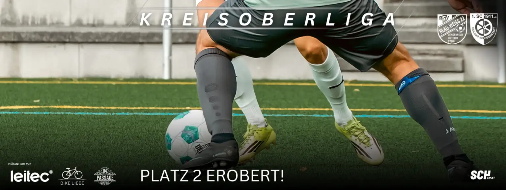
Platz 2 erobertAuswärtssieg unterm Viadukt! Papst-Elf schiebt sich auf Platz zwei Sieben Tore, und am Ende drei Punkte, die in der Tabelle richtig etwas bewegen: Der Kreisoberligist hat am 11. Spieltag bei der SG BSV BW Lengenfeld/St. mit 4:3 (3:1) gewonnen. Mit jetzt 24 Zählern rückt die Papst-Elf auf Rang zwei …Beitrag lesen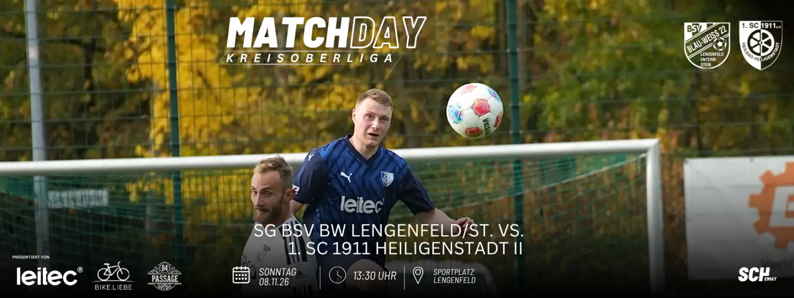
MATCHDAY AM SONNTAGPapst-Elf sucht den Anschluss nach oben Um 13:30 Uhr ist unsere zweite Mannschaft in Lengenfeld unterm Stein zu Gast. Am 11. Spieltag der Kreisoberliga trifft der Tabellendritte auf die SG BSV BW Lengenfeld/St., die vor dem Anpfiff Rang acht belegt. Gespielt wird auf dem Rasenplatz am Schloßweg. …Beitrag lesen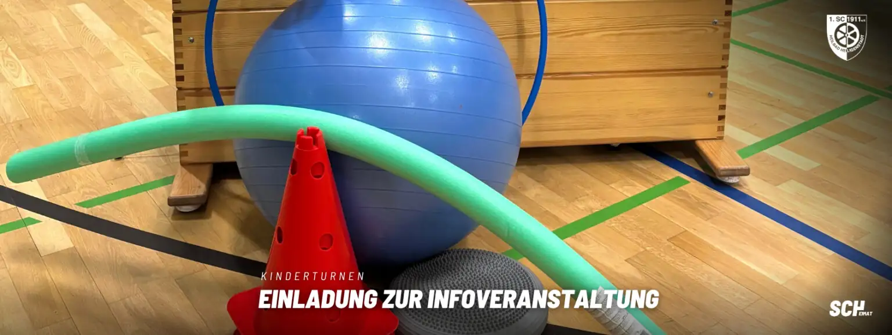
Einladung zur InfoveranstaltungKinderturnen beim SCH: Einladung zum Infoveranstaltung für alle angemeldeten Familien Die Anmeldungen sind eingegangen, die Vorfreude ist da. Jetzt startet das Kinderturnen beim SCH richtig: Am Donnerstag, 12. November 2026, laden wir alle angemeldeten Kinder und ihre Eltern zu einer gemeinsamen …Beitrag lesen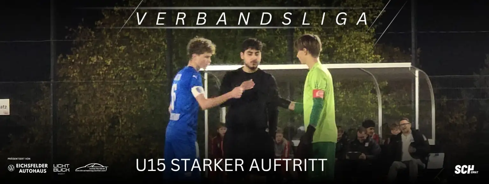
U15 Starker AuftrittU15 bieten dem Tabellenführer unter Flutlicht die Stirn Stark trotz 1:3! Freitagabend, 18 Uhr, Flutlicht. Für Fußballer gibt es kaum einen schöneren Rahmen. Die C-Junioren des SCH waren in der Verbandsliga beim Nachwuchsleistungszentrum des FC Rot-Weiß Erfurt zu Gast und unterlagen der U15 der …Beitrag lesen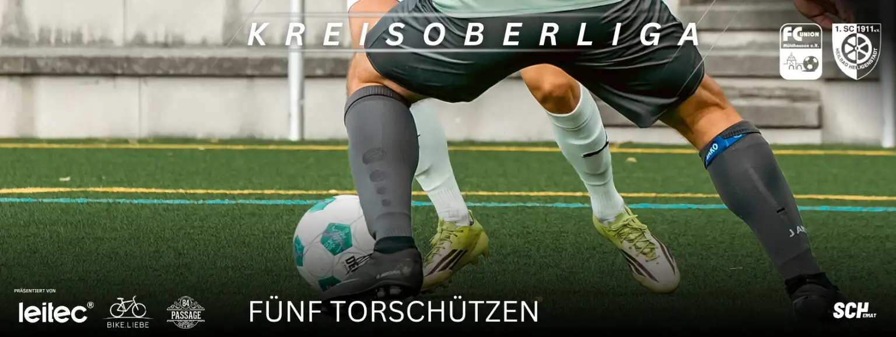
Fünf TorschützenPapst-Elf schüttelt den Ausgleich ab und siegt 5:1 in Mühlhausen Unsere Zweite bleibt in der Kreisoberliga in Schwung. Beim FC Union Mühlhausen II gewann der Kreisoberligist am Sonntagnachmittag mit 5:1 (2:1). Ein Spaziergang war das trotzdem nicht. Die Gastgeber glichen in der ersten Halbzeit …Beitrag lesenMATCHDAY AM SONNTAGDrei Siege im Gepäck: Papst-Elf reist nach Mühlhausen Unser Kreisoberligist ist gut in Fahrt. Heute tritt die Papst elf um 14 Uhr beim FC Union Mühlhausen II an. Gespielt wird auf dem Kunstrasen An der Aue. Zum 10. Spieltag reisen die Blau-Weißen mit drei Siegen in Folge an. Der Gastgeber dagegen …Beitrag lesenAuswärts-Dreier!Wolanski und Hoch drehen die Partie: Ludwig-Elf springt in Schleiz auf Platz zwei Zur Pause lag die Ludwig-Elf in Schleiz hinten, am Ende stand ein 2:1-Sieg und Platz zwei in der Tabelle. Am 11. Spieltag drehten Maciej Wolanski und Ole Hoch beim FSV Schleiz eine Partie, in der die Gastgeber einige …Beitrag lesen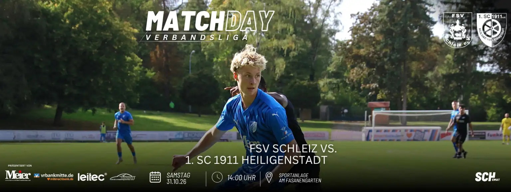
MATCHDAY! AM SAMSTAGLudwig-Elf kehrt an den Ort des Aufstiegs zurück Um 14 Uhr rollt der Ball am Fasanengarten, der SCH gastiert beim FSV Schleiz. Vier Spiele ohne Niederlage, Rang drei und erst acht Gegentore: Die Blau-Weißen reisen mit reichlich Rückenwind an. Überschattet wurde die Woche allerdings von der …Beitrag lesen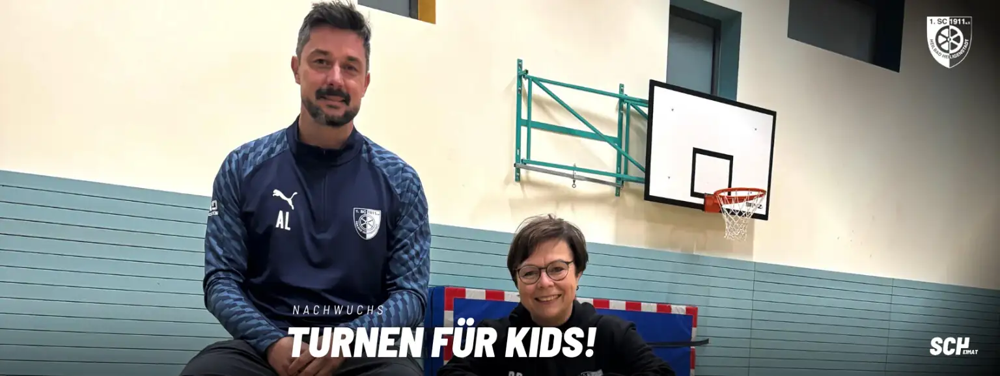
Turnen für Kids!Bewegung gehört zum Kindsein wie Pausenbrot und aufgeschlagene Knie. Im Alltag kommt sie aber oft zu kurz. Der SCH will das ändern und lädt alle Kinder zwischen 4 und 7 Jahren zum Kinderturnen ein. Spielerisch aktiv werden Die Kleinen sollen sich ausprobieren dürfen. Beim Kinderturnen wird …Beitrag lesenAlle unsere Spiele am Wochenende🔜 FSVSSCH Verbandsliga | 11. Spieltag 🆚 FSV Schleiz 🕒 Samstag, 31.10.26 | 14:00 Uhr 🏟️ Sportanlage Am Fasanengarten, Schleiz 💻 Der ausführliche Liveticker auf: https://t1p.de/ecj97 Auf geht’s! 💙🤍 Unsere Spiele am Wochenende im Überblick Reserve | Kreisoberliga FC UNION MÜHLHAUSEN II vs. SCH II …Beitrag lesen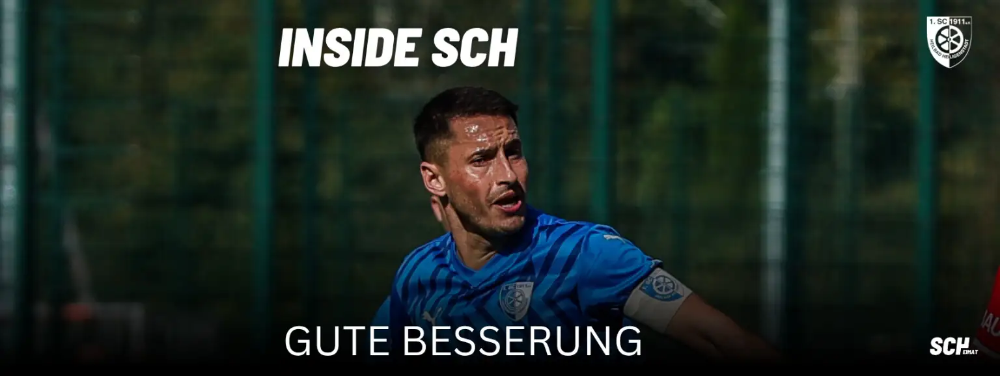
Kapitän Fabian Schnellhardt fällt lange ausBitterer Ausfall Die Befürchtungen haben sich bestätigt. Jetzt ist die Diagnose da, und sie trifft den Verein mitten ins Herz: Kapitän Fabian Schnellhardt hat sich einen Kreuzbandriss zugezogen. Wer am Wochenende beim Heimspiel gegen den TSV Gera-Westvororte im Stadion war, hat ihn schmerzlich …Beitrag lesen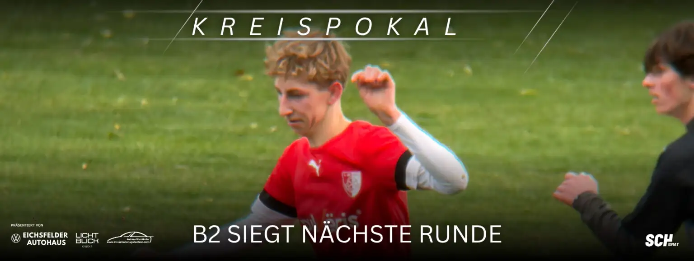
B2 Siegt Nächste RundeRaphael Preiß hält und trifft: B2 zieht nach Pokalkrimi in die nächste Runde ein Schön war es nicht immer, aber am Ende zählt nur das Weiterkommen. Unsere B2 hat im Kreispokal die B1 des FSV Preußen Bad Langensalza mit 6:5 nach Elfmeterschießen bezwungen. Nach 80 Minuten und einer torlosen …Beitrag lesen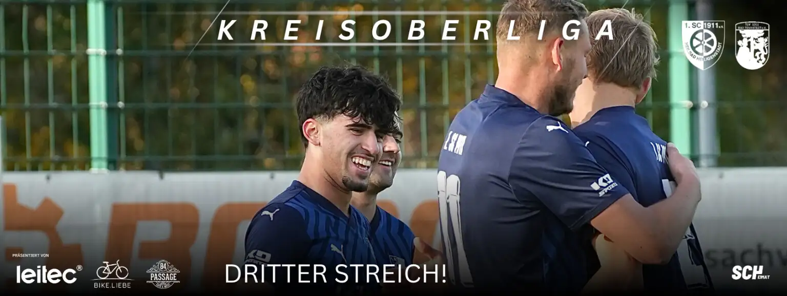
Dritter Streich!Joker Aschoff sticht: Papst-Elf schraubt die Serie auf drei Siege Unsere Zweite bleibt im Lauf. Gegen die SG TSV 1861 Bad Tennstedt setzten sich die Blau-Weißen am neunten Spieltag der Kreisoberliga mit 3:0 durch, nachdem es zur Pause noch torlos gestanden hatte. Drei Tore in der zweiten Hälfte, …Beitrag lesen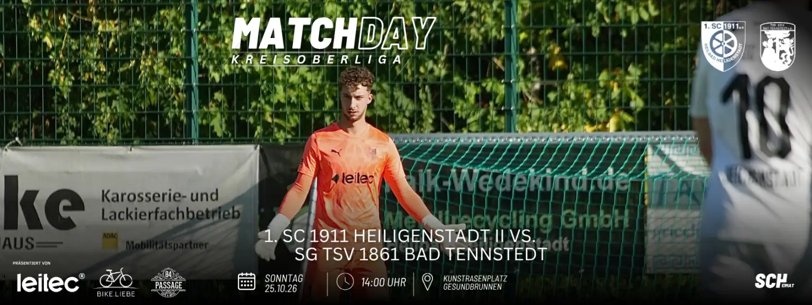
MATCHDAY AM SONNTAGNeun Tore im Rucksack, Grün-Weiß zu Gast am Leineberg Ein einziger Nachmittag kann eine ganze Woche Gesprächsstoff liefern. Das 9:2 in Birkungen war so einer. Heute um 14 Uhr will unsere Zweite beweisen, dass dieser Auftritt kein Zufall war. Zu Gast auf dem Kunstrasen im Gesundbrunnenstadion ist …Beitrag lesenDREIER ZUHAUSE!Harte Nuss? 4:1! Nach zähem Beginn dreht die Ludwig-Elf im Gesundbrunnen nach der Pause auf und schlägt den TSV Gera-Westvororte deutlich. Am Ende leuchtete ein klares 4:1 von der Anzeigetafel, doch bequem war dieser Nachmittag lange nicht. Der 1. SC 1911 hat am 10. Spieltag der Verbandsliga den …Beitrag lesenMATCHDAY! AM SAMSTAG360 Minuten ohne Gegentor Vier Spiele, 360 Minuten, kein einziger Treffer gegen uns. Mit dieser Zahl geht der SCH in den 10. Spieltag der Thüringenliga, wenn heute um 14 Uhr der TSV Gera-Westvororte im Gesundbrunnenstadion gastiert. Sie erzählt viel über eine Mannschaft, die nach einem harten Jahr …Beitrag lesen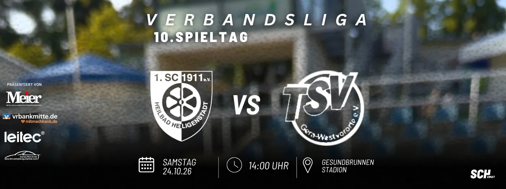
Alle unsere Spiele am Wochenende🔜 SCHGWO Verbandsliga | 10. Spieltag 🆚 TSV Gera-Westvororte 🕒 Samstag, 24.10.26 | 14:00 Uhr 🏟️ Gesundbrunnenstadion 💻 Der ausführliche Liveticker auf: https://t1p.de/233xa 🎥 Zur Liveübertragung: https://t1p.de/xmitg UnseBeitrag lesen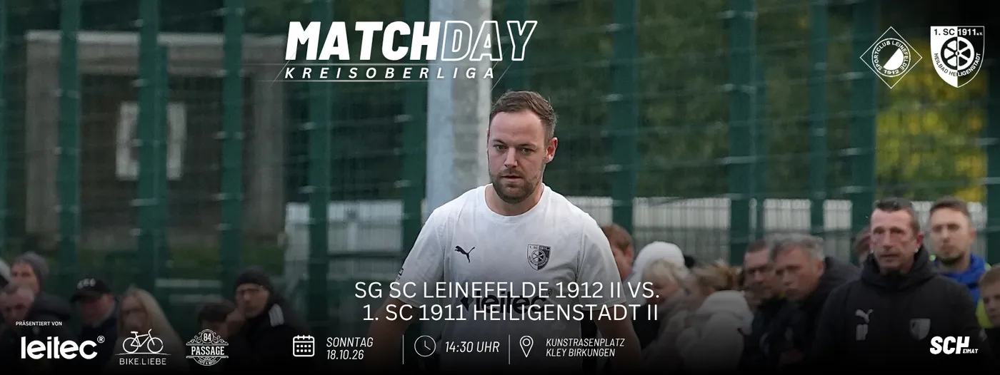
MATCHDAY AM SONNTAGDas kleine Eichsfeld-Duell: Unsere Zweite zu Gast in Birkungen Wenn am heutigen Sonntag auf dem Kunstrasenplatz Kley in Birkungen der Ball rollt, treffen zwei Mannschaften aufeinander, die sich in der Kreisoberliga bislaBeitrag lesen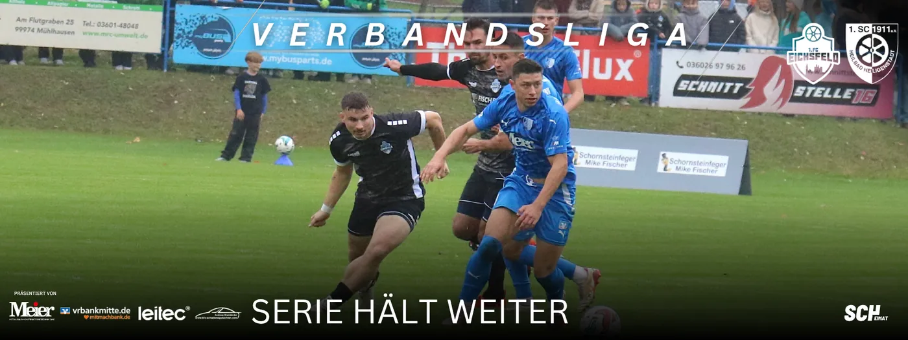
Serie hält weiterPunktgewinn beim Tabellenführer! Und das vierte Spiel ohne Gegentor. BERICHT FOLGT Spieldaten 1. FC Eichsfeld – 1. SC 1911 Heiligenstadt 0:0 (0:0) 1. FC Eichsfeld Svarc – Dietrich – Rippel (82. Petereit) – Wallbraun (66.Beitrag lesen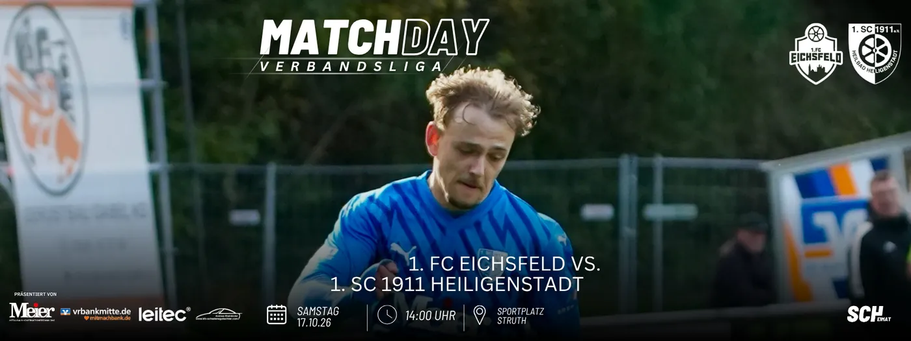
MATCHDAY! AM SAMSTAGMit Respekt zum Tabellenführer Ein Spiel, das wahrscheinlich für reichlich Gesprächsstoff sorgen wird. Wenn unser 1. SC 1911 Heiligenstadt heute um 14 Uhr beim 1. FC Eichsfeld auf dem Sportplatz in Struth antritt, treffeBeitrag lesenAlle unsere Spiele am Wochenende🔜 FCESCH Verbandsliga | 9. Spieltag 🆚 1. FC Eichsfeld 🕒 Samstag, 17.10.26 | 14:00 Uhr 🏟️ Sportplatz Struth 💻 Der ausführliche Liveticker auf: https://t1p.de/ja9jb Auf geht’s! 💙🤍 Unsere Spiele am Wochenende im Überblick RBeitrag lesen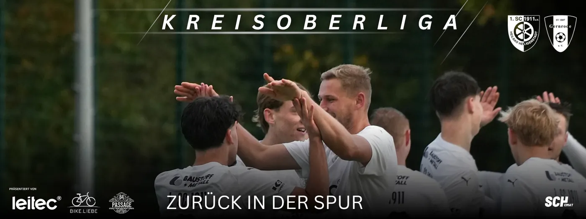
Zurück in der SpurVier Tore, drei Punkte: Papst-Elf meldet sich zurück Nach zwei Niederlagen in Folge hat unsere zweite Mannschaft die passende Antwort auf dem Platz gegeben. Am siebten Spieltag der Kreisoberliga setzte sich der SCH gegenBeitrag lesen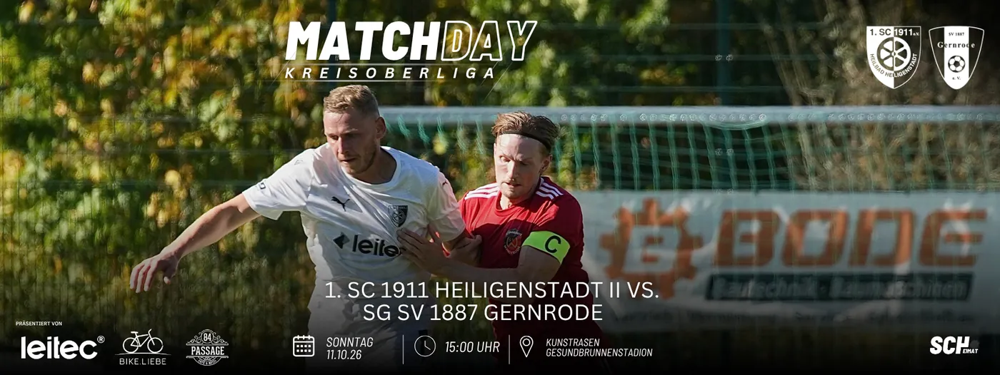
MATCHDAY AM SONNTAGPapst-Elf empfängt Gernrode Sonntag ist Fußballtag im Gesundbrunnen. Heute empfängt unsere zweite Mannschaft die SG SV 1887 Gernrode auf dem heimischen Kunstrasen. Nach zwei Niederlagen möchte die Elf von Daniel Papst wiBeitrag lesen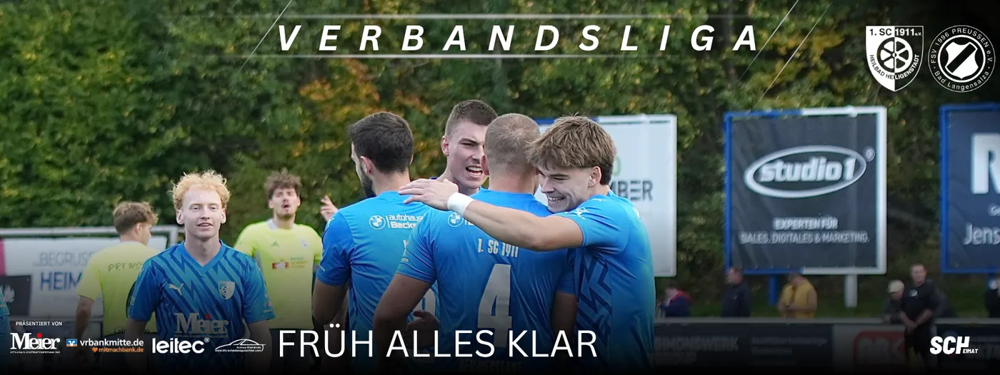
Früh alles klarFrühe Tore: SCH feiert dritten Ligasieg in Folge Zwei frühe Treffer ebneten den Weg zum Heimsieg: Unser SCH hat gegen den FSV Preußen Bad Langensalza mit 2:0 gewonnen. Robin Vogt und Ole Hoch erzielten die Tore für die MBeitrag lesen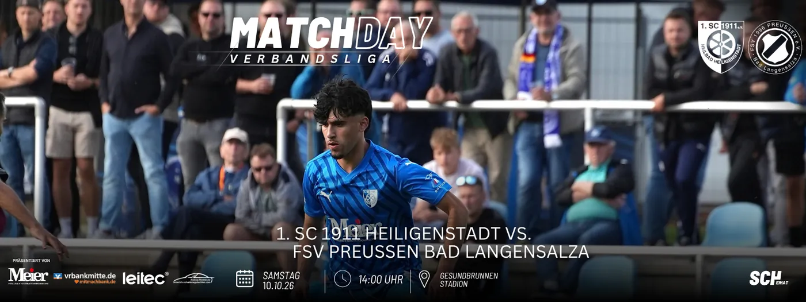
MATCHDAY! AM SAMSTAGWieder zusammen im Gesundbrunnen: SCH empfängt Preußen Bad Langensalza Sechs Tage nach dem Pokalspiel gegen den FC Rot-Weiß Erfurt öffnet der Gesundbrunnen wieder seine Tore. Heute um 14 Uhr empfängt unser SCH den FSV PrBeitrag lesen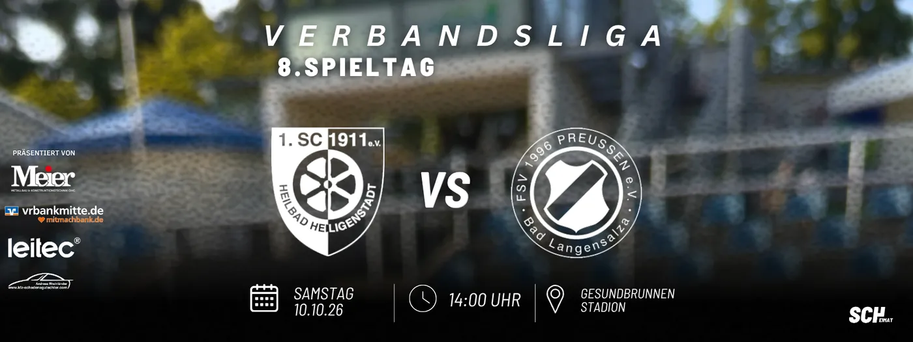
Alle unsere Spiele am Wochenende🔜 SCHPBL Verbandsliga | 8. Spieltag 🆚 FSV Preußen Bad Langensalza 🕒 Samstag, 10.10.26 | 14:00 Uhr 🏟️ Gesundbrunnenstadion 💻 Der ausführliche Liveticker auf: https://t1p.de/v9gcl 🎥 Zur Liveübertragung: https://t1p.de/or7bBeitrag lesenGemeinsam angekommenUnsere Wandergruppe bringt den Wimpel nach Oberwiesenthal Als unsere Wanderfreunde am 24. September das Festgelände in Oberwiesenthal erreichten, lag eine lange gemeinsame Reise hinter ihnen. Seit Juni hatten sie den WanBeitrag lesenEnde im AchtelfinaleFrüher Rückstand, lange in Unterzahl: SCH scheidet gegen Erfurt aus Die Überraschung im Gesundbrunnen ist ausgeblieben. Unser SCH hat das Achtelfinale im Thüringer Landespokal gegen den FC Rot-Weiß Erfurt mit 0:5 (0:3) vBeitrag lesen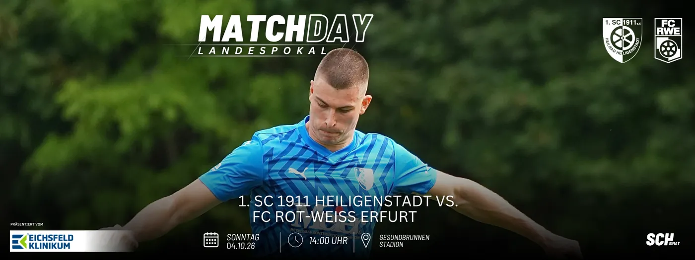
MATCHDAY! AM SONNTAGPokal im Gesundbrunnen: Ein besonderer Gegner, eine eigene Geschichte Der FC Rot-Weiß Erfurt gastiert in Heiligenstadt. Um 14 Uhr trifft unser SCH im Gesundbrunnenstadion auf den Regionalligisten aus der LandeshauptstadtBeitrag lesenParksituation zum Landespokal-AchtelfinaleFür das Landespokal-Achtelfinale gegen den FC Rot-Weiß Erfurt gilt eine geänderte Verkehrs- und Parksituation rund um das Gesundbrunnenstadion. Bitte berücksichtigt die folgenden Hinweise bei eurer Anreise. Aufgrund verkBeitrag lesen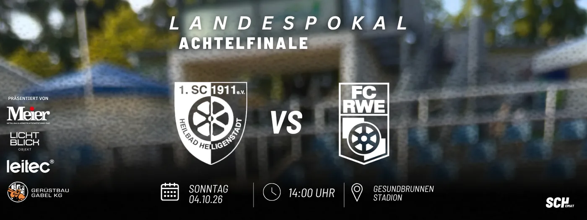
Alle unsere Spiele am Wochenende🔜 SCHRWE Achtelfinal Landespokal 🆚 FC Rot-Weiß Erfurt 🕒 Sonntag 04.10.26 | 14:00 Uhr 🏟️ Gesundbrunnenstadion 💻 Der ausführliche Liveticker auf: https://t1p.de/llxkm 🎥 Zur Liveübertragung: https://t1p.de/hnpps Auf geht`s Beitrag lesen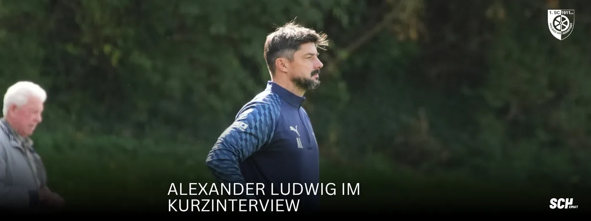
Mutig ins Pokalspiel: Alexander Ludwig im KurzinterviewAlexander Ludwig: „Als Mannschaft zusammenhalten und mutig spielen“ Im Kurzinterview vor dem Pokalspiel gegen den FC Rot-Weiß Erfurt spricht unser Trainer Alexander Ludwig über die Rolle unserer Mannschaft, die sportlichBeitrag lesen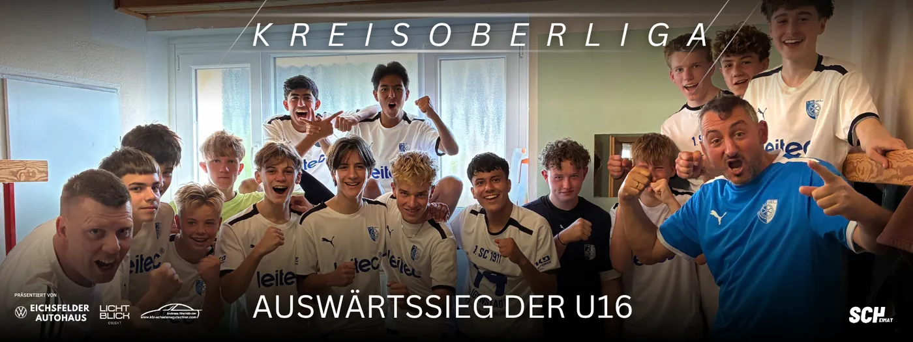
Auswärtssieg der U16Doppelschlag vor der Pause, fünf Tore auswärts: Unsere U16 überzeugt in Gerbershausen Drei Punkte, fünf eigene Treffer und eine Leistung, mit der das Trainerteam zufrieden sein konnte: Unsere B2-Junioren haben ihr AuswärBeitrag lesen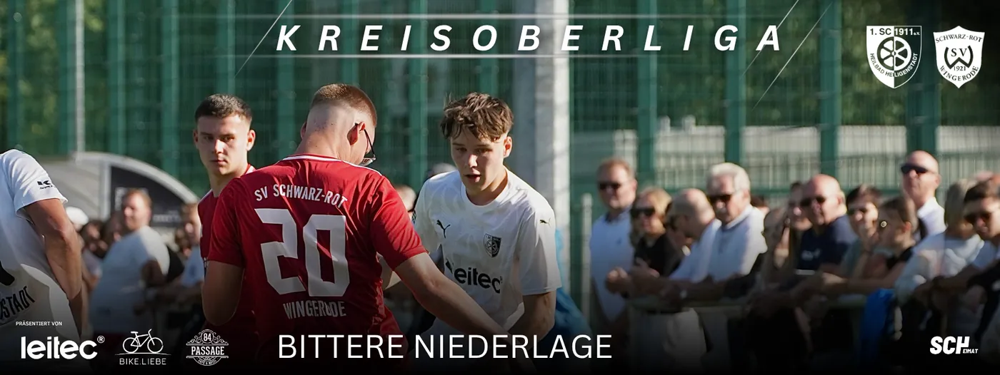
Bittere NiederlageEin Tor entscheidet: Papst-Elf lässt gegen Wingerode Punkte liegen Es war mehr möglich an diesem Sonntagnachmittag. Unsere zweite Mannschaft musste sich der SG SV Schwarz-Rot Wingerode auf dem Kunstrasenplatz am GesundbrBeitrag lesen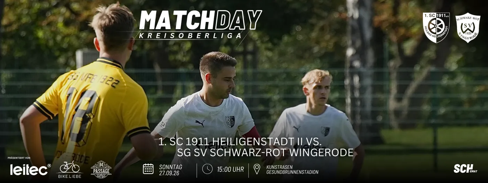
MATCHDAY AM SONNTAGSpitzenreiter zu Gast: Papst Elf empfängt Wingerode Der Sonntagnachmittag am Gesundbrunnen verspricht ein interessantes Duell. Um 15:00 Uhr empfängt unsere zweite Mannschaft die SG SV Schwarz Rot Wingerode auf dem KunstrBeitrag lesen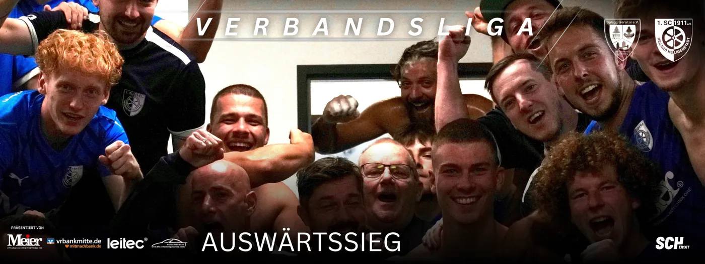
AUSWÄRTSSIEGGeduld belohnt: Wolanski schießt die Ludwig-Elf zum Auswärtssieg Ein Pfosten, ein Querbalken und lange kein Tor. Die Ludwig-Elf musste am Samstagnachmittag in Geraberg viel Geduld aufbringen, belohnte sich aber doch nochBeitrag lesen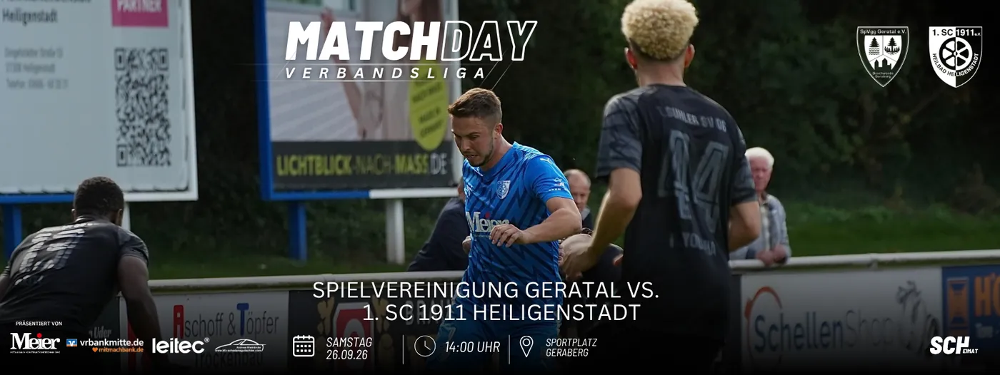
MATCHDAY! AM SAMSTAGAm Nordrand des Thüringer Waldes: SCH will in Geraberg nachlegen Der siebte Spieltag führt unsere Mannschaft heute nach Geraberg. Um 14 Uhr trifft die Ludwig Elf auf dem Sportplatz Geraberg auf die SpVgg Geratal. Nach deBeitrag lesenAlle unsere Spiele am Wochenende🔜 SPVGSCH 7. Spieltag Verbandsliga 🆚 Spielvereinigung Geratal 🕒 Samstag 26.09.26 | 14:00 Uhr 🏟️ Sportplatz Geraberg 💻 Der ausführliche Liveticker auf: https://t1p.de/6govj Auf geht`s 💙🤍 Unsere Spiele am Wochenende – alleBeitrag lesenDreifache Ehrung!Drei Jubiläen im September: Besondere Ehrungen im Gesundbrunnen Nicht nur auf dem Rasen gab es am Wochenende Grund zur Freude. In der Halbzeitpause des Verbandsligaspiels nutzten wir die Gelegenheit, drei Menschen aus unserem Verein zu ehren, die im September einen besonderen Anlass feiern …Beitrag lesen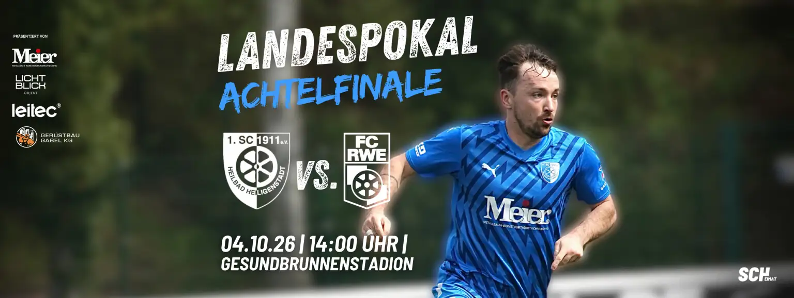
Pokaltermin steht!Pokaltermin steht: Rot-Weiß Erfurt kommt am 4. Oktober in den Gesundbrunnen Jetzt herrscht Planungssicherheit: Das Achtelfinale im Thüringer Landespokal gegen den FC Rot-Weiß Erfurt ist terminiert. Unsere Mannschaft empfängt den Traditionsverein aus der Landeshauptstadt am Sonntag, 4. Oktober …Beitrag lesen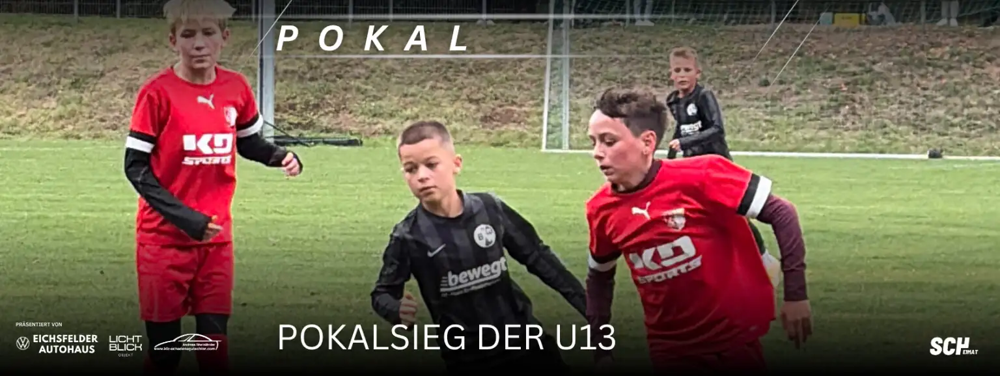
Pokalsieg der U13Starke Reaktion nach Rückstand: U13 zieht in die nächste Pokalrunde ein Unsere U13 steht in der nächsten Pokalrunde. Die Mannschaft von Trainer Andreas Seipel setzte sich am Samstagvormittag auf dem Stelzenberg mit 3:1 (1:1) gegen den SV Blau-Weiß 91 Bad Frankenhausen durch. Dabei mussten die …Beitrag lesen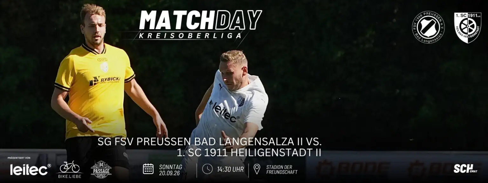
MATCHDAY AM SONNTAGZwischen Pokalfrust und Ligaalltag: Papst-Elf reist nach Bad Langensalza Nach dem Pokal-Aus ist wieder Kreisoberliga. Unsere zweite Mannschaft ist am heutigen Sonntagnachmittag bei der SG FSV Preußen Bad Langensalza II zu Gast. Damit kommt es im Stadion der Freundschaft zum Duell der beiden …Beitrag lesen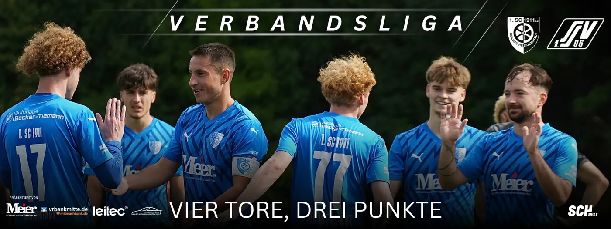
Vier Tore, drei PunkteVier Tore, drei Punkte: SCH löst Heimaufgabe gegen Suhl souverän Der SCH hat am sechsten Spieltag der Verbandsliga die passende Antwort auf die Niederlage in Weida gegeben. Vor 205 Zuschauern setzte sich die Ludwig-Elf mBeitrag lesen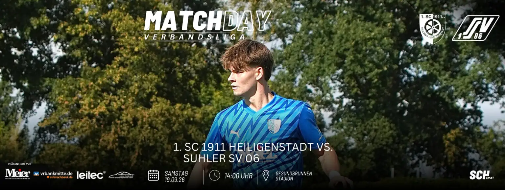
MATCHDAY! AM SAMSTAGSCH empfängt den 1. Suhler SV Nach zwei Auswärtsspielen in Folge kehrt der SCH heute zurück in den Gesundbrunnen. Um 14 Uhr empfängt die Mannschaft von Trainer Alexander Ludwig den 1. Suhler SV 06 zum sechsten Spieltag der Verbandsliga. Nach dem bitterem 1:3 am vergangenen Wochenende beim FC …Beitrag lesen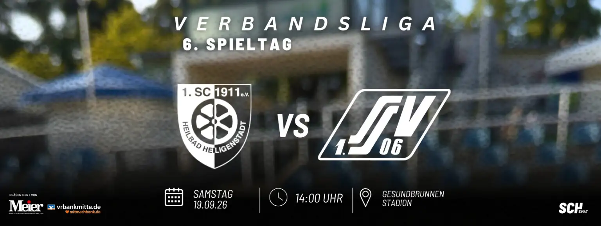
Alle unsere Spiele am Wochenende🔜 SCHSSV 6. Spieltag Verbandsliga 🆚 1. Suhler SV 06 🕒 Samstag 19.09.26 | 14:00 Uhr 🏟️ Gesundbrunnenstadion 💻 Der ausführliche Liveticker auf: https://t1p.de/d6268 🎥 Zur Liveübertragung: https://t1p.de/3ectu Auf geht`s 💙🤍 Unsere Spiele am Wochenende – alles im Überblick. Reserve KREISOBERLIGA So, …Beitrag lesen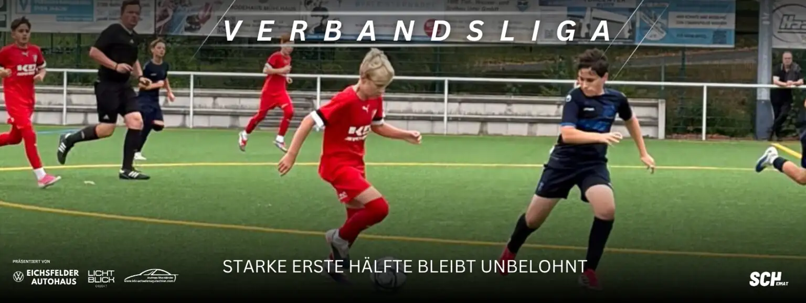
Starke erste Hälfte bleibt unbelohntGuter Auftritt bleibt unbelohnt: U12 unterliegt Empor Erfurt Unsere U12 unterlag am vierten Spieltag der Verbandsliga dem SV Empor Erfurt mit 1:5 (1:3). Vor allem in der ersten Hälfte hielt die Mannschaft von Oliver Brozait gut dagegen, Erfurt zeigte sich vor dem Tor jedoch konsequenter. Drei …Beitrag lesenEnde in runde ZweiPokal-Aus in Beberstedt: Papst-Elf unterliegt mit 0:3 Für unsere Zweite ist in der zweiten Runde des Kreispokals Schluss. Die Papst-Elf unterlag am Sonntagnachmittag bei der SG VfB 26 Beberstedt mit 0:3 (0:3). Drei Treffer vor der Pause entschieden die Partie, nach dem Seitenwechsel blieb es vor …Beitrag lesen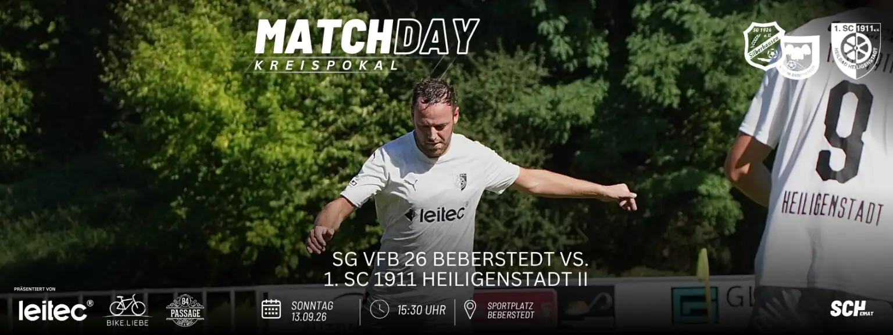
MATCHDAY AM SONNTAGDrei Wochen später: Papst-Elf trifft im Pokal erneut auf Beberstedt Manchmal schreibt der Spielplan seine eigenen kleinen Geschichten. Gerade einmal drei Wochen ist es her, dass unsere Zweite und die SG VfB 26 Beberstedt im Gesundbrunnen aufeinandergetroffen sind. Da setzte sich die Mannschaft von …Beitrag lesen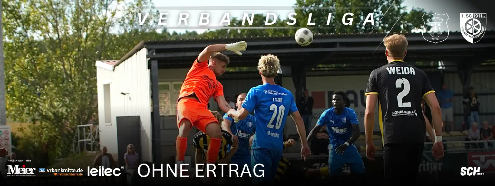
Ohne ErtragViel Ballbesitz, zu wenig Ertrag: SCH verliert auf dem Roten Hügel Der SCH kehrt ohne Punkte aus dem Thüringer Vogtland zurück. Beim FC Thüringen Weida unterlag die Ludwig-Elf am fünften Spieltag der Verbandsliga mit 1:3 (0:2). Über weite Strecken hatten die Blau-Weißen mehr Ballbesitz, fanden …Beitrag lesen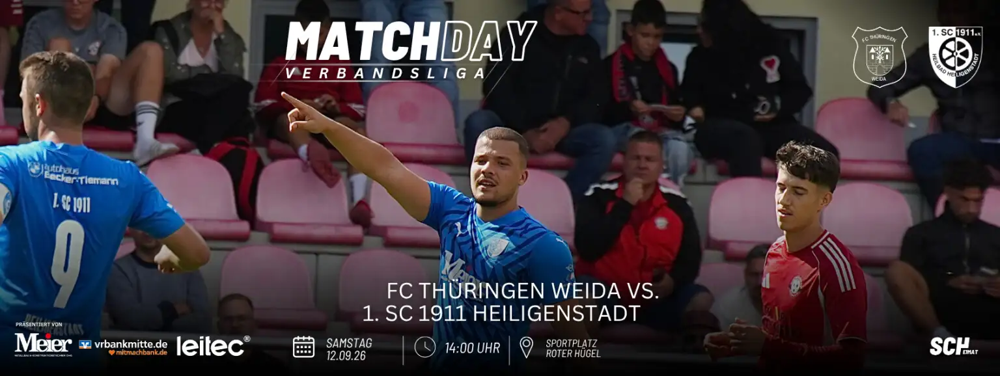
MATCHDAY! AM SAMSTAGAuf dem Roten Hügel: SCH vor schwerem Auswärtsspiel in Weida Vier Spieltage sind absolviert, sieben Punkte stehen auf dem Konto – und nach dem erfolgreichen Pokalwochenende geht es für unsere Mannschaft heute wieder um Punkte in der Verbandsliga. Der SCH ist beim FC Thüringen Weida zu Gast. Anstoß …Beitrag lesen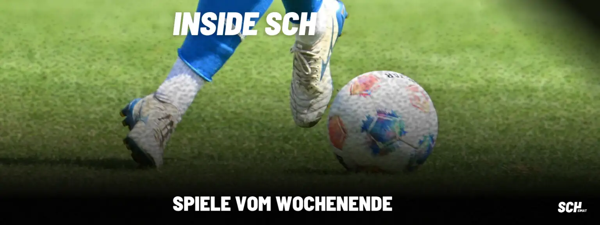
Alle unsere Spiele am Wochenende🔜 FCTWSCH auf dem Roten Hügel! 🆚 FC Thüringen Weida 🕒 Samstag 12.09.26 | 14:00 Uhr 🏟️ Sportplatz Roter Hügel 💻 Der ausführliche Liveticker auf: https://t1p.de/84gn5 Auf geht`s 💙🤍 Unsere Spiele am Wochenende – alles im Überblick. Reserve KREISPOKAL So, 13.09.26 | 14:30 Uhr SG VfB 26 Beberstedt vs. …Beitrag lesen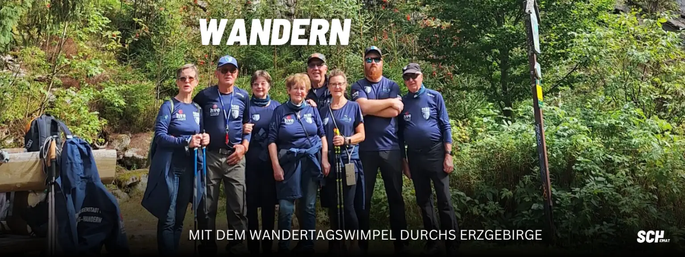
Mit dem Wandertagswimpel durchs ErzgebirgeUnsere Wimpelgruppe auf dem Weg nach Oberwiesenthal Der Weg geht weiter – und mit jedem Kilometer rückt das große Ziel ein Stück näher. Unsere Wimpelgruppe ist weiterhin mit dem Wandertagswimpel unterwegs, der in diesem Jahr eine ganz besondere Reise erlebt. Nach dem 122. Deutschen Wandertag im …Beitrag lesen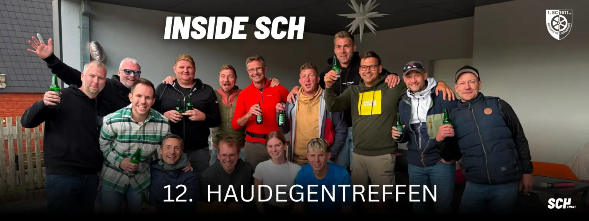
12. Haudegentreffen12. Haudegentreffen: Mit dem Kremser auf gemeinsamer Tour Es gibt Mannschaften, die nur für eine Saison zusammen auf dem Platz stehen. Und es gibt Mannschaften, bei denen aus gemeinsamen Spielen, Siegen, Niederlagen und unzähligen Geschichten etwas entsteht, das weit über den Fußball hinaus …Beitrag lesenGeduldig zum Erfolg: U15 mit dreierU15 mit Torfestival: Acht Treffer gegen Weimar Unsere U15 hat ihren starken Saisonstart eindrucksvoll fortgesetzt. Die Mannschaft von Trainer Alexander Eschborn setzte sich am dritten Spieltag der C-Junioren-Verbandsliga mit 8:1 (3:0) gegen den SC 1903 Weimar durch. Drei Treffer in der ersten …Beitrag lesen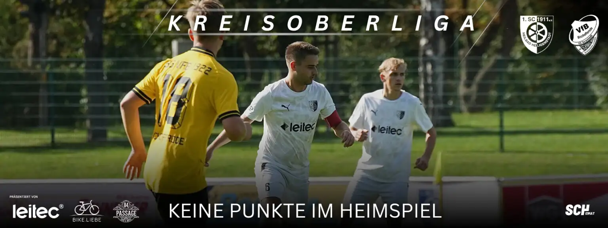
Keine Punkte im HeimspielTrotz Chancenplus mit leeren Händen: Papst-Elf unterliegt Bischofferode Manchmal erzählt das Ergebnis nur einen Teil der Geschichte. Unsere Zweite musste sich am dritten Spieltag der Kreisoberliga der SG VfB 1922 Bischofferode mit 1:3 (1:2) geschlagen geben. Dabei hatte die Mannschaft von Trainer …Beitrag lesen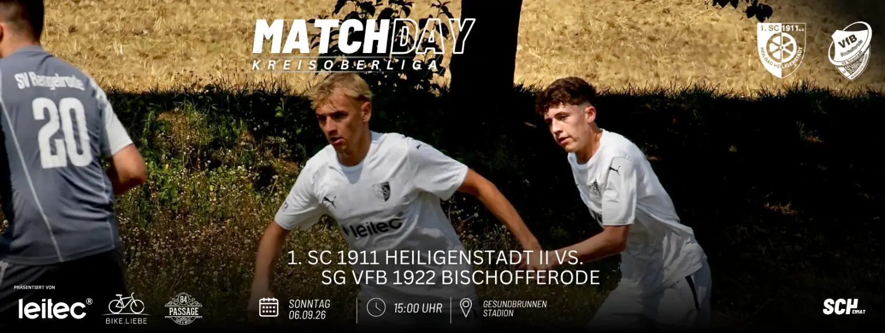
MATCHDAY AM SONNTAGZurück am Gesundbrunnen: Papst-Elf empfängt Bischofferode Zwei Spiele, zwei Siege – und jetzt wieder zuhause. Unsere Zweite empfängt am heutigen Sonntag die SG VfB 1922 Bischofferode im Gesundbrunnenstadion. Anstoß ist um 15 Uhr. Nach dem gelungenen Saisonstart will die Mannschaft von Trainer …Beitrag lesen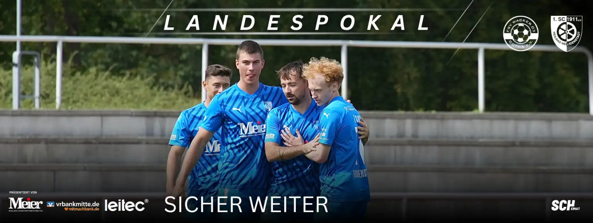
Sicher WeiterSouverän ins Achtelfinale: SCH löst die Pflichtaufgabe in Gotha Der Pokalweg geht weiter. Mit einem 4:0 (2:0) beim FSV Wacker 03 Gotha hat unsere Mannschaft am Samstagnachmittag das Achtelfinale im Thüringer Landespokal erreicht. Maciej Wolanski stellte bereits in der 9. Minute die Weichen, kurz …Beitrag lesen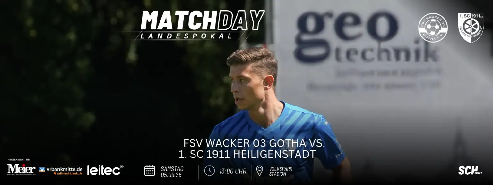
MATCHDAY! AM SAMSTAGPokal im Volkspark: Für Ludwig wird Gotha zur besonderen Rückkehr Die Liga macht an diesem Wochenende Pause, der Pokal übernimmt. Unsere Mannschaft ist heute in der zweiten Runde des Thüringenpokals beim FSV Wacker 03 Gotha gefordert. Um 13:00 Uhr rollt der Ball im traditionsreichen …Beitrag lesenAlle unsere Spiele am Wochenende🔜 FSVWGSCH Zweite Runde im Thüringenpokal. Zu Gast im Volkspark! 🆚 FSV Wacker 03 Gotha 🕒 Samstag 05.09.26 | 13:00 Uhr 🏟️ Volkspark-Stadion 💻 Der ausführliche Liveticker auf: https://t1p.de/bsw08 Auf geht`s 💙🤍 Unsere Spiele am Wochenende – alles im Überblick. Reserve KREISOBERLIGA Sonntag, 06.09.26 …Beitrag lesenGeduldig zum Erfolg: U15 mit zweitem SaisonsiegGeduldig geblieben, hinten nichts zugelassen: U15 gewinnt mit 2:0 Unsere U15 hat ihr Heimspiel gegen die SG SV Wacker 04 Bad Salzungen mit 2:0 (2:0) gewonnen. In einer zunächst zähen Partie brauchte die Mannschaft von Trainer Alexander Eschborn etwas Geduld, ehe Maximilian Ludemann in der 19. …Beitrag lesen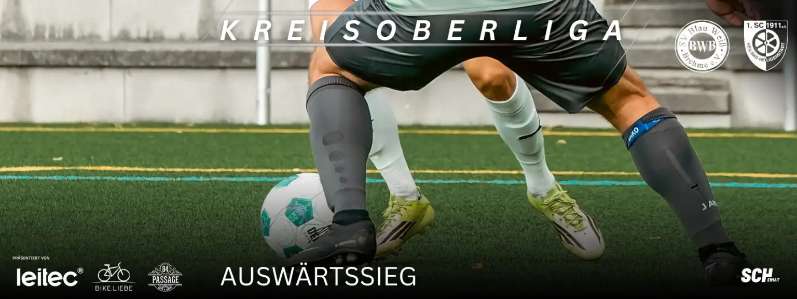
AuswärtssiegPapst-Elf setzt sich mit 5:3 bei Blau-Weiß Brehme durch. BERICHT FOLGT Spieldaten SV Blau-Weiß Brehme – 1. SC 1911 Heiligenstadt II 3:5 (1:1) SV Blau-Weiß Brehme Hotze – J. Klippstein – Weilert – Martin – Wiemuth – Bause (67. Dransfeld) – Koitek (72. Schneider) – S. Klippstein – Brodsak (75. …Beitrag lesen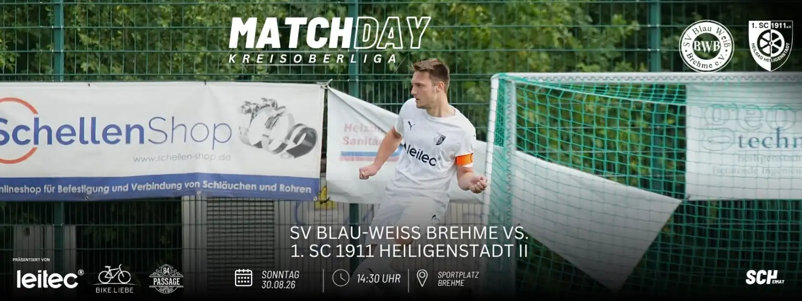
MATCHDAY AM SONNTAGNach gelungenem Auftakt: Papst-Elf reist nach Brehme Der Anfang ist gemacht, nun geht es erstmals in dieser Kreisoberliga-Saison auf Reisen. Unsere zweite Mannschaft gastiert am heutigen Sonntagnachmittag beim SV Blau-Weiß Brehme. Anstoß auf dem Sportplatz in Brehme ist um 14:30 Uhr. Nach dem 3:1 …Beitrag lesenErster HeimdreierFrüh getroffen, spät entschieden: SCH feiert ersten Heimsieg Der erste Heimsieg der neuen Verbandsliga-Saison ist perfekt. Die Ludwig-Elf setzte sich am Samstagnachmittag mit 2:0 (1:0) gegen den FC An der Fahner Höhe durch und belohnte sich damit auch vor eigenem Publikum. Fabian Schnellhardt …Beitrag lesenMATCHDAY! AM SAMSTAGZurück im Gesundbrunnen: SCH empfängt Fahner Höhe Zweimal auswärts, zweimal gewonnen – und nun endlich wieder Gesundbrunnen. Nach dem 3:1-Erfolg in Bad Berka und dem Einzug in die zweite Runde des Thüringenpokals in Siebleben kehrt unsere Mannschaft heute vor die eigenen Zuschauer zurück. Um 14:00 …Beitrag lesen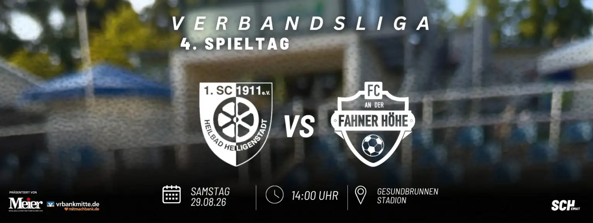
Alle unsere Spiele am Wochenende🔜 SCHFCADFH 4. Spieltag Verbandsliga 🆚 FC An der Fahner Höhe 🕒 Samstag 29.08.26 | 14:00 Uhr 🏟️ Gesundbrunnenstadion 💻 Der ausführliche Liveticker auf: https://t1p.de/sxcwh 🎥 Zur Liveübertragung: https://t1p.de/84hg4 Auf geht`s 💙🤍 Unsere Spiele am Wochenende – alles im Überblick. Reserve …Beitrag lesen1. Heiligenstädter FussballcampFünf Tage Fußball. Fünf Tage Gemeinschaft. Und ganz viel Freude am Spiel. In den Herbstferien wird das Gesundbrunnenstadion zum Treffpunkt für alle jungen Fußballbegeisterten! Gemeinsam mit unserem Trainer der 1. Mannschaft und Ex-Profi Alexander Ludwig veranstalten wir vom 12. bis 16. Oktober …Beitrag lesen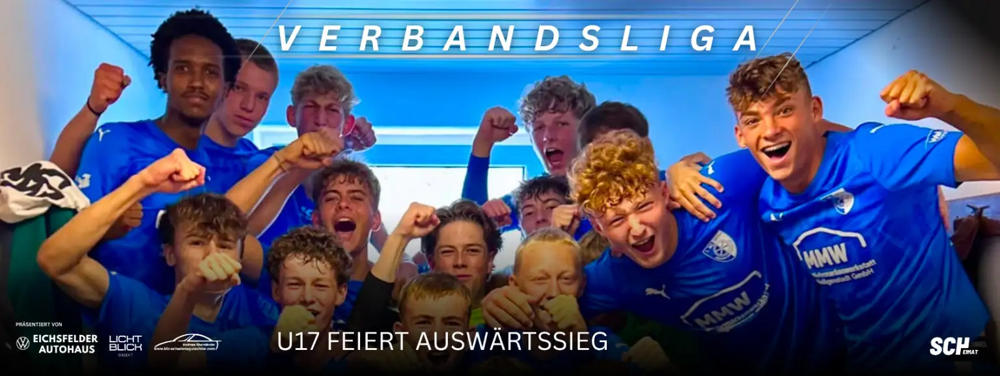
U17 feiert AuswärtssiegStarke zweite Hälfte: U17 startet mit 4:1-Sieg Erstes Punktspiel, erster Sieg: Unsere U17 ist mit einem 4:1 (1:1) beim 1. FC Eichsfeld in die neue Verbandsliga-Saison gestartet. Die Mannschaft von Trainer Uwe Förster ging nach 19 Minuten in Führung, musste noch vor der Pause den Ausgleich …Beitrag lesenGelungener LigaauftaktPapst-Elf startet mit verdientem Heimsieg in die neue Saison Der Auftakt ist gelungen. Unsere zweite Mannschaft hat ihr erstes Punktspiel der neuen Kreisoberliga-Saison gegen die SG VfB 26 Beberstedt mit 3:1 (1:1) gewonnen. Vor 89 Zuschauern war die Papst-Elf über weite Strecken die …Beitrag lesenMATCHDAY AM SONNTAGVom Pokal in den Ligaalltag: Papst-Elf startet gegen Beberstedt Die Vorbereitung ist vorbei, das erste Pflichtspiel erfolgreich erledigt – nun beginnt auch für unsere zweite Mannschaft der Ligaalltag. Am heutigen Sonntag empfängt die Papst-Elf zum Auftakt der neuen Kreisoberliga-Saison die SG VfB …Beitrag lesenNächste RundeErst souverän, dann plötzlich eng: SCH zieht nach 5:2 in Siebleben weiter Der erste Schritt im Thüringer Landespokal ist gemacht. Unsere Mannschaft hat sich am Freitagabend mit 5:2 (3:0) bei der SpVgg Siebleben 06 durchgesetzt und damit das Ticket für die zweite Runde gelöst. Was nach einer …Beitrag lesenMATCHDAY! AM FREITAGPokalabend in Siebleben Der Ligaalltag macht an diesem Wochenende Pause. Heute Abend geht es für die Ludwig-Elf um 18:30 Uhr auf dem Sportplatz in Siebleben um den Einzug in die zweite Runde des Thüringenpokals. Und Pokalspiele haben bekanntlich ihren eigenen Charakter. Der Gegner ist dabei alles …Beitrag lesenAlle unsere Spiele am Wochenende1. Runde Landespokal 🆚 SpVgg Siebleben 06 🕒 Freitag 21.08.26 | 18:30 Uhr 🏟️ Sportplatz Siebleben Auf geht`s 📲 Wie immer berichten wir wieder auf allen Social Media Kanälen 💻 Der ausführliche Liveticker auf: https://t1p.de/3sm05 Reserve KREISOBERLIGA So, 23.08.26 | 15:00 SCHII vs. SG VfB 26 …Beitrag lesenKlarer AuswärtssiegSouverän in Runde zwei: Papst-Elf löst Pokalaufgabe in Rengelrode Mit einem klaren Auswärtssieg ist unsere zweite Mannschaft in die neue Pflichtspielsaison gestartet. Die Papst-Elf setzte sich am Sonntagnachmittag in der ersten Runde des Kreispokals mit 7:0 (4:0) beim SV 1911 Rengelrode durch und …Beitrag lesenMATCHDAY AM SONNTAGPapst-Elf startet im Kreispokal Nun endet für unsere zweite Mannschaft die lange Sommervorbereitung – und ab heute zählen wieder die Ergebnisse. Zum ersten Pflichtspiel der Saison 2026/27 führt der Weg nur wenige Kilometer aus Heiligenstadt hinaus. Um 14:30 Uhr trifft die Mannschaft von Trainer …Beitrag lesenAuswärtssiegStarke Reaktion in Bad Berka: SCH feiert ersten Saisonsieg Der SCH hat sich mit einer starken Reaktion zurückgemeldet. Beim bis dahin verlustpunktfreien FC Einheit Bad Berka setzte sich die Ludwig-Elf am Samstagnachmittag verdient mit 3:1 (1:1) durch und feierte damit den ersten Sieg der neuen …Beitrag lesenMATCHDAY! AM SAMSTAGSCH gastiert beim starken Aufsteiger Manchmal erzählt eine Saison schon nach wenigen Wochen Geschichten, mit denen vorher kaum jemand gerechnet hat. Wenn unsere Mannschaft heute um 15:00 Uhr beim FC Einheit Bad Berka antritt, treffen zwei Teams aufeinander, deren Start kaum unterschiedlicher hätte …Beitrag lesenDANKE BERNDDanke, Bernd – für mehr als vier Jahrzehnte Treue zum SCH Es gibt Menschen in einem Verein, die nur selten im Mittelpunkt stehen. Die keine Tore schießen, keine Schlagzeilen bekommen und trotzdem über Jahrzehnte dafür sorgen, dass ein Verein funktioniert. Bernd Brodmann ist einer dieser Menschen. …Beitrag lesenViel Ballbesitz, zu wenig ErtragViel Ballbesitz, keine Tore – SCH verliert Heimauftakt gegen Saalfeld Der erste Auftritt im Gesundbrunnen in der neuen Verbandsliga-Saison ist für unsere Blau-Weißen nicht so verlaufen, wie es sich Mannschaft, Trainerteam und die 510 Zuschauer auf den Rängen vorgestellt hatten. Trotz viel …Beitrag lesenMATCHDAY! AM SAMSTAGHeimauftakt im Gesundbrunnen Eine Woche nach dem Auftakt in Bad Frankenhausen kehrt der Fußball nun auch endlich zurück in den Gesundbrunnen. Die Ludwig-Elf empfängt am 2. Spieltag den FC Saalfeld. Anstoß der Partie ist um 14:00 Uhr. Der Punkt beim 1:1 in Bad Frankenhausen war mit Sicherheit kein …Beitrag lesenHeimspiel-Saisonauftakt 2026/27Wichtige Hinweise zur Anreise und Parksituation Endlich rollt der Ball wieder im Gesundbrunnenstadion! Zum ersten Heimspiel der neuen Saison freuen wir uns darauf, euch wieder bei uns begrüßen zu dürfen. Damit die Anreise für alle Besucher möglichst entspannt verläuft, möchten wir euch vorab …Beitrag lesenSAISONAUFTAKT IM GESUNDBRUNNEN🔜 SCHFCS Erstes Heimspiel der Saison 🆚 FC Saalfeld 🕒 Samstag 08.08.26 | 14:00 Uhr 🏟️ Gesundbrunnenstadion Der Ball rollt endlich wieder im Gesundbrunnen. Am Samstag steht unser erstes Heimspiel der neuen Verbandsliga-Saison an. Gemeinsam mit euch wollen wir den Saisonauftakt im Gesundbrunnen gegen …Beitrag lesenUnentschieden zum AuftaktWir trennen uns vom SV BW 91 Bad Frankenhausen mit 1:1. BERICHT FOLGT Spieldaten SV BW 91 Bad Frankenhausen – 1. SC 1911 Heiligenstadt 1:1 (1:0) SV BW 91 Bad Frankenhausen Linde – Friedemann – Sondermann – Schlätzer (57. Gödicke) – Riedel (81. Hellmich) – Bickel (42. Börsch) – Arnold – Meier (61. …Beitrag lesenMATCHDAY! AM SAMSTAGLudwig-Elf startet in Bad Frankenhausen Heute beginnt für den SCH endlich die neue Verbandsliga-Saison. Zum Auftakt geht es für die Ludwig-Elf zum SV BW 91 Bad Frankenhausen. Anstoß ist um 14:00 Uhr im Stadion an der Wipper. Für unseren Trainer führt das erste Pflichtspiel gleich an einen …Beitrag lesenVorschau zum Wochenende🚌 Erstes Punktspiel. Erste Auswärtsfahrt. 🆚 SV BW 91 Bad Frankenhausen 🕒 Samstag 01.08.26 | 14:00 Uhr 🏟️ Stadion An der Wipper 📲 Wie immer berichten wir wieder auf allen Social Media Kanälen 💻 Der ausführliche Liveticker auf: https://t1p.de/g1m29Beitrag lesenHallo OleZurück zu den Wurzeln – Ole Hoch kehrt zum SCH zurück und trägt wieder Blau und Weiß Für den gebürtigen Heiligenstädter schließt sich damit ein Kreis. Vom Nachwuchs im Gesundbrunnen führte ihn sein Weg durch renommierte Nachwuchsleistungszentren bis in den Profifußball und die Regionalliga. Nun …Beitrag lesenPartnerschaft verlängert!Wir freuen uns sehr, dass Metallbau Meier den gemeinsamen Weg mit dem 1. SC 1911 Heiligenstadt weitergeht und unserem Verein auch künftig als starker Partner zur Seite steht. Vielen Dank für das langjährige Vertrauen und die großartige Unterstützung. Auf viele weitere gemeinsame Jahre! 💙⚽Beitrag lesenMATCHDAY! AM DONNERSTAGVierter Härtetest der Ludwig-Elf – SCH gastiert beim VfL Olympia 08 Duderstadt Die Sommervorbereitung geht weiter. Nach drei intensiven Testspielen wartet heute Abend bereits die nächste Herausforderung auf die Mannschaft von Cheftrainer Alexander Ludwig. Im vierten Testspiel der Vorbereitung …Beitrag lesenMATCHDAY! AM SAMSTAGDritter Härtetest für die Ludwig-Elf – Sparta Göttingen zu Gast im Gesundbrunnen Die Sommervorbereitung geht in ihre nächste wichtige Phase. Nach zwei intensiven Testspielen wartet heute um 15:00 Uhr die nächste Aufgabe auf die Ludwig-Elf. Im Gesundbrunnen empfängt der SCH den niedersächsischen …Beitrag lesenMATCHDAY! AM SAMSTAGZweiter Härtetest für die Ludwig-Elf – SCH trifft auf Preußen Bad Langensalza Die nächsten intensiven Tage der Sommervorbereitung liegen hinter unseren Blau-Weißen, nun wartet bereits die nächste Aufgabe auf die Mannschaft von Cheftrainer Alexander Ludwig. Im Rahmen des Sportfestes in …Beitrag lesenEtappe 8 wird zu einer Reise durch die GeschichteEine Etappe voller Geschichte, Begegnungen und bewegender Momente Mit der 8. Etappe unserer Wimpelwanderung auf dem Weg zum 123. Deutschen Wandertag in Oberwiesenthal stand für unsere Wandergruppe ein Abschnitt auf dem Programm, der weit mehr war als eine sechs Kilometer lange Wanderung. Die …Beitrag lesen1. Hauptrunde ausgelostWir treffen in der ersten Hauptrunde des Landespokals auf den Gewinner der Partie: Sportverein 1921 Walldorf vs. Spielgemeinschaft Siebleben 06 e.V. Gespielt wird am Wochenende vom 21. bis 23. August.Beitrag lesenUnentschieden im ersten TestUnser erster Test endet bei der TuSpo 1912 Rengershausen mit einem 1:1. Spieldaten TuSpo 1912 Rengershausen – 1. SC 1911 Heiligenstadt 1:1 (1:0) TuSpo 1912 Rengershausen Schunke – Kutzner – Trump – Bandowski – Dag – Schmidt – Lanatowitz – Bode – Krengel – Dawid – Bueyuekata – Itter – Sommerfeld – …Beitrag lesenMATCHDAY! AM SONNTAGNeues Kapitel – Die Ludwig-Elf startet mit dem ersten Testspiel in die Vorbereitung Endlich rollt der Ball wieder Nach den ersten intensiven Trainingstagen ist es endlich so weit: Für unsere Blau-Weißen steht heute das erste Testspiel der Sommervorbereitung auf dem Programm. Mit dem Duell gegen …Beitrag lesenMATCHDAY! AM SAMSTAGTraditionsduell im Gesundbrunnen – Rot-Weiß Erfurt trifft auf Hannover 96 U23 Hochklassiger Test vor besonderer Kulisse Der Fußballsommer macht Station im Gesundbrunnenstadion. Heute um 13:00 Uhr dürfen sich alle Fußballfans auf einen echten Leckerbissen freuen. Mit dem FC Rot-Weiß Erfurt und der …Beitrag lesenDer neue SCH-Fanshop ist online!Gemeinsam mit Fan12 haben wir unseren neuen Fanshop mit hochwertiger Fan- und Freizeitbekleidung sowie vielen weiteren SCH-Artikeln für euch eröffnet. 🎉 Zum Start gibt’s 15 % Rabatt auf euren Einkauf! Sichert euch euer neues Lieblingsteil und spart bis zum 14.07.26 mit dem Code „START15-16917“ …Beitrag lesenEtappe 7 verlangt allen alles abSchritt für Schritt dem großen Ziel entgegen – Wanderabteilung trotzt der Sommerhitze Auch hochsommerliche Temperaturen konnten unsere Wanderfreunde am vergangenen Wochenende nicht aufhalten. Mit viel Ausdauer stand die 7. Etappe der Wimpelwanderung auf dem Programm. Die Strecke führte auf dem …Beitrag lesenAlexander Ludwig ist neuer CheftrainerDer SC Heiligenstadt stellt die Weichen für die neue Saison und begrüßt mit Alexander Ludwig seinen neuen Cheftrainer. Der 42-Jährige übernimmt ab sofort die Verantwortung für unsere Verbandsligamannschaft und wird den eingeschlagenen Weg des Vereins gemeinsam mit dem Trainerteam weiterführen. An …Beitrag lesenSommerfahrplanSommerfahrplan 2026: SCH startet in die Vorbereitung auf die neue Verbandsligasaison Die Sommerpause neigt sich dem Ende entgegen. Für den SCH beginnt Ende Juni die Vorbereitung auf die Verbandsligasaison 2026/27. Die Mannschaft nutzen die kommenden Wochen, um die Grundlagen für die neue Spielzeit …Beitrag lesenEin Tag wie die Profis!Im Rahmen des Testspiels des FC Rot-Weiß Erfurt gegen Hannover 96 II erwartet junge Fußballfans ein ganz besonderes Erlebnis im Gesundbrunnenstadion. Trainieren wie die Rot-Weißen, Autogramme sammeln, die Mannschaft hautnah erleben und gemeinsam mit den Spielern ins Stadion einlaufen – beim …Beitrag lesenFabian Schnellhardt bleibt an BordUnsere Nummer 23 bleibt Blau-Weiß – ein wichtiges Zeichen für die Zukunft Viele haben in den vergangenen Wochen gespannt darauf gewartet. Nun können wir endlich Vollzug melden: Fabian Schnellhardt wird auch weiterhin das Trikot des SCH tragen. Unsere Nummer 23 hat sich entschieden, seinen Weg bei …Beitrag lesenWimpelwanderung erreicht nächsten MeilensteinWimpel erreicht 34. Thüringer Wandertag – Gemeinsam auf dem Weg nach Oberwiesenthal Schritt für Schritt dem großen Ziel entgegen Unsere Wimpelwandergruppe der Wanderabteilung hat am 20. Juni ein weiteres wichtiges Etappenziel auf dem Weg zum 123. Deutschen Wandertag in Oberwiesenthal erreicht. …Beitrag lesenThüringer Mini WM 2026U10 erlebt weiteres Saisonhighlight bei der Mini-WM in Arnstadt Für unsere U10 stand am Samstag ein weiteres Saisonhighlight auf dem Programm: die Mini-WM der E-Jugend in Arnstadt. Als vor einigen Wochen die Auslosung ergab, dass wir die Schweiz vertreten dürfen, liefen die Vorbereitungen auf …Beitrag lesenHochkarätiger Test im Gesundbrunnenstadion!Fußballfans aufgepasst! ⚽️ Im Rahmen der Sommervorbereitung auf die neue Regionalliga-Saison gastiert der FC Rot-Weiß Erfurt im Gesundbrunnenstadion. Gegner ist die U23 von Hannover 96. Für das Team von Rot-Weiß-Trainer Fabian Gerber ist es ein erster spannender Härtetest. Gleichzeitig bietet die …Beitrag lesenKooperation mit SoccerCity verlängertGemeinsam die Zukunft des Fußballs gestalten – Bewährte Partnerschaft geht in die nächste Runde Manchmal sind es die langfristigen Verbindungen, die den größten Unterschied machen. Deshalb freuen wir uns sehr, dass wir unsere erfolgreiche Zusammenarbeit mit SoccerCity e.V. um weitere zwei Jahre …Beitrag lesenErfolgreiches Wochenende für unsere F-JugendEin ereignisreiches und erfolgreiches Fußballwochenende liegt hinter unserer F-Jugend. Am Samstag nahm unser Team am Landesgartenschau-Cup in Leinefelde teil. In einem stark besetzten Teilnehmerfeld mit insgesamt zwölf Mannschaften zeigte unsere Mannschaft von Beginn an eine tolle Leistung. In der …Beitrag lesenAuf dem Weg nach OberwiesenthalWimpelwanderung zum 123. Deutschen Wandertag offiziell gestartet Mit dem ersten Schritt beginnt ein ganz besonderes Abenteuer: Unsere Wanderabteilung hat sich auf den Weg zum 123. Deutschen Wandertag nach Oberwiesenthal gemacht. Die traditionelle Wimpelwanderung wurde gestartet und führt unsere …Beitrag lesenEin Abend für die EwigkeitZwei Legenden sagen Servus – Danke, Möhle und Max! Manche Spiele sind mehr als nur 90 Minuten Fußball. Manche Abende schreiben Geschichten, die für immer bleiben. Genau so ein Abend war das Abschiedsspiel von Sebastian Möhlhenrich und Maximilian Henkel im Gesundbrunnenstadion. Vor rund 250 …Beitrag lesenMATCHDAY! AM FREITAGEin letztes Mal für Möhle Es gibt Spieler, die kommen und gehen. Und es gibt Spieler, die einen Verein über Jahrzehnte prägen. Spieler, deren Name untrennbar mit ihrem Verein verbunden ist. Sebastian Möhlhenrich gehört ohne jeden Zweifel zu dieser besonderen Kategorie. Heute steht er ein letztes …Beitrag lesenWimpelstab wird zum StaffelstabEine besondere Aufgabe für unsere WanderabteilungWenn am 15. Juni die Wanderstiefel geschnürt werden, beginnt für unsere Wanderabteilung eine ganz besondere Reise. Es ist nicht nur eine Wanderung durch einige der schönsten Landschaften Mitteldeutschlands – es ist eine Reise voller Symbolkraft, …Beitrag lesenHinze mit Hattrick zum SaisonendeToller Saisonabschluss: 7:0-Kantersieg und Hattrick von Leo Hinze Unsere U15 hat ihr letztes Verbandsligaspiel gegen den FSV Sömmerda mit 7:0 hochverdient gewonnen. Die Mannschaft setzte zum Saisonabschluss ein echtes Ausrufezeichen und bescherte dem Trainerteam einen tollen Abschied. Das Spiel …Beitrag lesenBitteres SaisonendeDie Papst-Elf verliert das letzte Heimspiel der Saison mit 1:2. Spieldaten 1. SC 1911 Heiligenstadt II – FC Union Mühlhausen II 1:2 (1:1) SC Heiligenstadt Lerch – Kaiser – Weilandt – Fiedler – Göbel – Spies (89. Aschoff) – Strecker (68. Kaufhold) – Dornieden (59. Rhoese) – Pingel (59. Schäfer) – …Beitrag lesenMATCHDAY AM SONNTAGEin letztes Mal – Papst-Elf will Saison mit Heimsieg krönen Ein letztes Mal in dieser Spielzeit geht es für unsere Papst-Elf um wichtige Punkte in der Kreisoberliga. Zum Abschluss der Saison wartet noch einmal eine spannende Aufgabe auf die Mannschaft von Daniel Papst. Im Duell der …Beitrag lesenAuszeichnung für starke VereinsarbeitAnerkennung für das Engagement vieler Menschen Es sind oft die kleinen und großen Dinge im Hintergrund, die einen Verein erfolgreich machen. Die vielen ehrenamtlichen Stunden, engagierte Trainerinnen und Trainer, fleißige Helferinnen und Helfer, Eltern, Sponsoren und natürlich die Mitglieder …Beitrag lesenEin letzter großer Auftritt – Abschiedsspiel für zwei SCH-GesichterEin besonderer Tag für den SCH Manche Spieler hinterlassen Spuren. Nicht nur durch Tore, Siege oder Erfolge, sondern durch ihre Treue, ihren Einsatz und die unzähligen Momente, die sie gemeinsam mit ihrem Verein erlebt haben. Genau so ein Moment steht dem SCH nun bevor. Am 12. Juni 2026 um 17:30 …Beitrag lesenAlle unsere Spiele am WochenendeReserve KREISOBERLIGA So, 07.06.26 | 14:30 SCHII vs. FC Union Mühlhausen U19 So, 07.06.26 | 10:30 JV OHRAnge United : SCH U17 Sa, 06.06.26 | 10:30 SCH : SV Schott Jena U15 / C1 So, 07.06.26 | 10:30 SCH : FSV Sömmerda U15 / C2 So, 07.06.26 | 12:00 SG Ammern : SCH U13 /Beitrag lesenU17 feiert verdienten AuswärtssiegUnsere U17 konnte im Südeichsfeld einen verdienten Auswärtssieg feiern und damit den achten Erfolg der Rückrunde einfahren. Von Beginn an zeigte sich die Mannschaft in den entscheidenden Momenten konsequent und nutzte ihre Chancen effektiv. Peter Voigtsberger brachte den SCH nach einem starken …Beitrag lesenMATCHDAY AM SONNTAGMit Rückenwind nach Silberhausen – Papst-Elf will ihre Erfolgsserie fortsetzen Für unsere Papst-Elf steht heute die nächste Auswärtsaufgabe auf dem Programm. Die Reise führt diesmal nach Silberhausen, wo mit der SG VfB 1926 Beberstedt ein Gegner wartet, der sich in dieser Saison als unangenehmer …Beitrag lesenEin letztes Kapitel voller EmotionenSieg zum Abschied – ein emotionaler Nachmittag im Gesundbrunnen Manche Fußballspiele sind mehr als nur 90 Minuten. Manche Nachmittage bleiben in Erinnerung, weil sie Geschichten schreiben, die weit über das Sportliche hinausgehen. Der letzte Spieltag der Oberliga-Saison 2025/26 war genau so ein …Beitrag lesenMATCHDAY! AM SAMSTAGEin letztes Mal in Blau und Weiß und ein Abschied voller Emotionen im Gesundbrunnen Der 30. Spieltag der NOFV-Oberliga Süd steht bevor. Es ist das letzte Spiel einer schwierigen Saison für unseren SCH. Doch diesmal geht es um weit mehr als Punkte, Tabellenplätze oder Ergebnisse. Es geht um …Beitrag lesenAlle unsere Spiele am Wochenende🔜 SCHFCEW Der 30. Spieltag steht am Samstag an – und damit auch das letzte Heimspiel der Saison! Unsere Seipel-Elf empfängt den FC Einheit Wernigerode. Der Vorstand möchte sich bei euch für die großartige Unterstützung in dieser Saison bedanken und freut sich darauf, auch in der kommenden …Beitrag lesenStarke Moral bringt Heimsieg!Bei sommerlichen Temperaturen empfing unsere D2 am Samstag die Mannschaft aus Schweina-Gumpelstadt zum Duell der direkten Tabellennachbarn. Von Beginn an bestimmte der SCH das Spiel und erspielte sich zahlreiche Chancen, scheiterte jedoch immer wieder am starken Gästetorwart. Wie so oft im Fußball …Beitrag lesenSCH und Benedikt Seipel gehen zum Saisonende getrennte WegeDer 1. SC 1911 Heiligenstadt und Cheftrainer Benedikt Seipel werden die Zusammenarbeit über die laufende Saison hinaus nicht fortsetzen. Der bis zum 30. Juni datierte Vertrag wird in beiderseitigem Einvernehmen nicht verlängert. Benedikt hatte unsere Oberligamannschaft in einer herausfordernden …Beitrag lesenAuswärtssiegFür unsere D2 ging es am Samstag zu einem schweren Auswärtsspiel nach Bad Langensalza. Trotz der Tabellenkonstellation war allen klar, dass es gegen die körperlich starke Mannschaft keine einfache Aufgabe werden würde. In den ersten 25 Minuten war unser Team vor allem defensiv gefordert. Bad …Beitrag lesenPapst-Elf legt weiter nachPapst-Elf bleibt auf Kurs – Blitzstart ebnet früh den Weg Andere Vorzeichen als noch in der vergangenen Woche – doch die Aufgabe war keineswegs einfacher. Mit dem FSV 1920 Geismar war eine Mannschaft im Gesundbrunnen zu Gast, die im Abstiegskampf um jeden einzelnen Punkt kämpft und entsprechend …Beitrag lesenAuswärtspunktSCH belohnt sich in Halle mit einem Punkt Das letzte Auswärtsspiel der Oberliga-Saison hätte für unsere Blau-Weißen kaum turbulenter verlaufen können. Beim VfL Halle 1896, dem Tabellensechsten der Liga, zeigte unsere Seipel-Elf noch einmal, was in dieser Mannschaft steckt – und belohnte sich nach …Beitrag lesenLETZTER DOPPELMATCHDAY!Seipel-Elf vor letzter Auswärtsreise Der letzte von drei Doppelmatchdays in den vergangenen Wochen steht an – und damit noch einmal ein Fußballsonntag, an dem unsere Blau-Weißen gleich doppelt gefordert sind. Während unsere Seipel-Elf zur letzten Auswärtsfahrt der Saison in die Saalestadt Halle …Beitrag lesenMITGLIEDERVERSAMMLUNG 2026Der 1. SC 1911 Heiligenstadt e. V. lädt zur ordentlichen Mitgliederversammlung für das abgelaufene Sportjahr 2025 ein. 📅 Donnerstag, 28. Mai 2026 🕖 19:00 Uhr 📍 Vitalpark Heilbad Heiligenstadt – Raum Eichsfeld Leineaue 1, 37308 Heilbad Heiligenstadt Tagungsordnung: 1. Begrüßung und Totenehrung 2. …Beitrag lesenAlle unsere Spiele am Wochenende🔜 VFLHSCH Letzte Auswärtsfahrt Es geht in die Saalestadt Halle. 😃 Auf geht`s 💙🤍 📲 Wie immer berichten wir wieder auf allen Social Media Kanälen 💻 Der ausführliche Liveticker auf: https://t1p.de/nkrrb Unsere Spiele am Wochenende – alles im Überblick. Reserve KREISOBERLIGA So, 17.05.26 | 15:00 SCHII …Beitrag lesenTRIKOTTAG 2026Am 13. Mai ist wieder Trikottag! Also runter mit Hemd, Hoodie oder Arbeitsklamotten – und rein ins Trikot Egal ob im Büro, in der Schule, beim Einkaufen oder einfach unterwegs: Zeigt, für welchen Verein euer Herz schlägt. Denn ein Trikot ist oft viel mehr als nur Sportkleidung – da stecken …Beitrag lesenVerdienter SIEGEine starke Vorstellung unserer U10! Gegen die altbekannte Mannschaft der Dingelstädter Youngstars aus der Hinrunde der Kreisliga gerieten die Kickers des Trainerteams Christian Müller und Mathias Konradi zunächst mit 0:1 in Rückstand. Doch davon ließen sich die Jungs überhaupt nicht beeindrucken …Beitrag lesenRevance geglücktWas ein Match! Papst-Elf nimmt Revanche und gewinnt deutlich in Bischofferode mit 5:0. Spieldaten SG VfB 1922 Bischofferode – 1. SC 1911 Heiligenstadt II 0:5 (0:4) SG VfB 1922 Bischofferode Streicher – Aschoff – Zwätz (51. Kallmeyer) – Wand (81. Gerlach) – Stejskal – Weidemann (77. Gödecke) – …Beitrag lesenNiederlage in GlauchauEnde. Keine Punkte für uns in Glauchau. Spieldaten VfB Empor Glauchau – 1. SC 1911 Heiligenstadt 1:0 (0:0) VfB Empor Glauchau Ebersbach – Bernert (37. Schädel) – Hähnel – Werrmann – Sovago – Bernhardt – Mende (73. Ibisevic) – Ullmann – Anger (77. Kibart) – Rühling – Barth SC Heiligenstadt Fröhlich …Beitrag lesenDOPPELMATCHDAY! AM SONNTAGSeipel-Elf in Westsachsen gefordert – Papst-Elf will Revanche in Bischofferode Der nächste Doppelmatchday steht für unsere Blau-Weißen an – und an diesem Wochenende heißt es für beide Mannschaften wieder: Auswärtstasche packen. Während unsere Seipel-Elf die lange Reise nach Westsachsen zum VfB …Beitrag lesenAlle unsere Spiele am Wochenende🔜 VFBGSCH Es geht nach Westsachsen. Der VfB Empor Glauchau wartet. 😃 Auf geht`s 💙🤍 📲 Wie immer berichten wir wieder auf allen Social Media Kanälen 💻 Der ausführliche Liveticker auf: https://t1p.de/gcy5x Unsere Spiele am Wochenende – alles im Überblick. Reserve KREISOBERLIGA So, 10.05.26 | 14:30 SG …Beitrag lesenKnappe NiederlageAm Samstag reiste unsere D1 zum Nachholspiel nach Jena, wo wir gegen die C-Juniorinnen von Carl Zeiss antraten. Gespielt wurde im Twin-Modus auf zwei Feldern gleichzeitig, jeweils mit fünf Feldspielerinnen und einer Torhüterin. Die erste Halbzeit verlief für beide SCH-Teams sehr positiv. Mit viel …Beitrag lesenHeimerfolgPapst-Elf legt nach und gewinnt auch gegen die Spielgemeinschaft Kreuzebra mit 2:1. Spieldaten 1. SC 1911 Heiligenstadt II – SpG Kreuzebra 2:1 (1:1) SC Heiligenstadt Lorenz – Kaiser (76. Simon) – Weilandt – Semper – Schöneich (58. Jargees Ali) – Spies (71. Kaufhold) – Kahlmeyer – Rhoese – …Beitrag lesenHeimniederlageKnapp, aber wieder mal mit leeren Händen. Wir verlieren unser Heimspiel gegen den FCV Budissa Bautzen mit 2:3. BERICHT FOLGT Spieldaten 1. SC 1911 Heiligenstadt – FSV Budissa Bautzen 2:3 (0:2) SC Heiligenstadt Stankovic – Abdoul Aziz – Aschoff (59. von Breitenbuch) – Lerch (59. Köhler) – Tavares – …Beitrag lesenDOPPELMATCHDAY! AM SONNTAGAlles reinwerfen für den Klassenerhalt Es ist Doppelmatchday beim SCH. Während unsere Seipel-Elf im Gesundbrunnenstadion den FSV Budissa Bautzen empfängt, ist unsere Papst-Elf nur 60 Minuten später auf dem Stelzenberg gefordert – gegen die Spielgemeinschaft aus Kreuzebra. Nach der Niederlage am …Beitrag lesenErste Mädchenfussball AGUnsere erste Mädchenfußball-AG ist gestartet! Am 27.04. hat unser Trainer Oliver Brozait die AG geleitet – und es war ein riesiger Erfolg! 26 Mädchen waren dabei, voller Freude und Engagement, und es herrschte eine großartige Atmosphäre. Das Ziel ist es, aus dieser AG reine Mädchenmannschaften zu …Beitrag lesenAlle unsere Spiele am Wochenende🔜 SCHFSVBB Vorletzter Tanz der Saison im Gesundbrunnen Es geht gegen den FSV Budissa Bautzen. 😃 Auf geht`s 💙🤍 📲 Wie immer berichten wir wieder auf allen Social Media Kanälen 💻 Der ausführliche Liveticker auf: https://t1p.de/23url 🎥 Zur Liveübertragung: https://t1p.de/ji3t1 Unsere Spiele am …Beitrag lesenTag des WandernsGemeinsam unterwegs – aus Begegnung wurde Partnerschaft Manchmal braucht es nur einen Moment, damit etwas entsteht, das bleibt. Für uns war dieser Moment der Deutsche Wandertag 2024. Dort haben wir den Werratalverein 1883 kennengelernt – und schnell gemerkt, dass wir die gleiche Leidenschaft …Beitrag lesenPunktspielsiegBei bestem Fußballwetter zeigten unsere Jungs von der ersten Minute an ein engagiertes Spiel. Mit druckvollem Pressing konnte der Gegner aus Bischofferode immer wieder in der eigenen Hälfte eingeschnürt werden. Folgerichtig fiel in der 7. Minute das 1:0 durch Konstantin Wenzel. Danach verpassten …Beitrag lesenAuswärstniederlageWir verlieren unser Spiel bei Lok Stendal mit 2:0. Spieldaten 1. FC Lok Stendal – 1. SC 1911 Heiligenstadt 2:0 (0:0) 1. FC Lok Stendal Poser – Ilchenko – Masuth – Grigo – Witte – Knoblich (73. Schulze) – Stark – Schleicher (69. Scheffler) – Kohl – Tovkach – Kaschlaw (82. Salge) SC Heiligenstadt …Beitrag lesenMATCHDAY AM SONNTAGMit Herz in die Altmark: Alles reinwerfen im Abstiegskampf Auswärtsspiel für unsere Seipel-Elf: Die Reise führt unsere Blau-Weißen in die Altmark zum 1. FC Lok Stendal. Dort wartet ein direkter Konkurrent im Abstiegskampf. Die Mannschaft von Trainer Jörn Schulz hat aktuell 20 Punkte auf dem Konto. …Beitrag lesenAuswärtssiegPapst-Elf gewinnt bei SG SV Einheit Worbis mit 2:1 Bericht folgt Spieldaten SG SV Einheit Worbis – 1. SC 1911 Heiligenstadt II 1:2 (0:0) SG SV Einheit Worbis Stolze – Hebestreit – Fütterer – Eckart – Zwingmann – Paulusch (38. Windolph) – Reschwamm (78. Götz) – Berger (76. Schulz) – Langer – …Beitrag lesenMATCHDAY AM SAMSTAGMit Rückenwind nach Worbis – Papst-Elf will nachlegen Nächster Spieltag, nächste Herausforderung: Für unsere Papst-Elf geht es zur SG SV Einheit Worbis. Ein Gegner, der aktuell mit 22 Punkten auf dem 10. Tabellenplatz steht – und der zuletzt gezeigt hat, dass er absolut ernst zu nehmen ist. Gerade …Beitrag lesenAlle unsere Spiele am Wochenende🔜 FCLSSCH Auswärts in der Altmark! Der 1. FC Lok Stendal wartet. Auf geht`s 💙🤍 📲 Wie immer berichten wir wieder auf allen Social Media Kanälen 💻 Der ausführliche Liveticker auf: https://t1p.de/ewrsi Unsere Spiele am Wochenende – alles im Überblick. Reserve KREISOBERLIGA Sa, 25.04.26 | 16:00 SG SV …Beitrag lesenMÄDCHENFUSSBALL – BEAUFTRAGTE JASMIN HÜNERMUNDEin neuer Weg für den Mädchenfußball – ein wichtiger Schritt für unseren Verein Mit großem Stolz gehen wir als Verein einen weiteren Schritt nach vorne. Der Mädchenfußball liegt uns am Herzen – und genau hier wollen wir ansetzen, fördern und nachhaltig Strukturen schaffen. Ein erster, wichtiger …Beitrag lesenDerbysiegDerbysieg mit Ausrufezeichen – U17 lässt keine Zweifel aufkommen Was für ein Auftakt in dieses Derby: Unsere B-Junioren waren von der ersten Minute an hellwach und setzten sofort ein klares Zeichen. Bereits in der 3. Minute brachte Peter Voigtsberger unsere Farben in Führung – und nur wenige …Beitrag lesenDerbysiegDerbysieg mit klarer Kante – Starke Reaktion bringt verdientes 4:0 Zu Beginn entwickelte sich ein ausgeglichenes Derby mit leichten Vorteilen für den SC Leinefelde. Die Gäste kamen zu ersten Möglichkeiten, doch auf Jonas Lerch war Verlass. Mit starken Paraden hielt er unsere Mannschaft an diesem …Beitrag lesenMATCHDAY AM SONNTAGDerbytime im Gesundbrunnen Es ist angerichtet. Derbytime im Gesundbrunnen. Ein Spiel, auf das unsere Blau-Weißen von Trainer Daniel Papst schon lange hingefiebert haben. Auch wenn es „nur“ ein Duell in der Kreisoberliga ist – im Eichsfeld ist und bleibt es das Spiel der Spiele. Wenn der SCH auf …Beitrag lesenWieder nicht belohntPfosten, Kampf und ganz viel Herz – SCH belohnt sich wieder einmal nicht gegen den SC Freital Früher Rückschlag wirft uns aus dem Rhythmus Der Samstagnachmittag im Gesundbrunnen begann alles andere als nach Plan. Mit viel Energie und klaren Vorsätzen war unsere Seipel-Elf ins Spiel gegen den SC …Beitrag lesenMATCHDAY AM SAMSTAGHeimspiel gegen den Tabellenzweiten – Große Aufgabe vor heimischer Kulisse Der 25. Spieltag der Oberliga Süd bringt ein echtes Schwergewicht in den Gesundbrunnen: Unsere Seipel-Elf empfängt mit dem SC Freital den aktuellen Tabellenzweiten. Eine Herausforderung, die es in sich hat – aber …Beitrag lesenAlle unsere Spiele am WochenendeHeimspiel im Gesundbrunnen Wieder Zusammen mit euch 🤝 Es geht gegen den SC Freital 😃 Auf geht`s 💙🤍 📲 Wie immer berichten wir wieder auf allen Social Media Kanälen 💻 Der ausführliche Liveticker auf: https://t1p.de/zzwnr 🎥 Zur Liveübertragung: https://t1p.de/zxew8 Unsere Spiele am Wochenende – alles …Beitrag lesenKein ErfolgPapst-Elf verliert bei der SG SV Schwarz-Rot Wingerode mit 2:4. Spieldaten SG SV Schwarz-Rot Wingerode – 1. SC 1911 Heiligenstadt II 4:2 (3:1) SG SV Schwarz-Rot Wingerode Kuna – Riethmüller – Cheap (90. Senft) – Jeske (38. Senft) – T. Künzel – Marius Märkl – Simon (75. Kaufmann) – P. Künzel – Marx …Beitrag lesenMATCHDAY AM SONNTAGAuswärts gefordert: Papst-Elf will zurück in die Spur Für unsere Papst-Elf steht der nächste Spieltag an – und der führt uns auswärts zur SG SV Schwarz-Rot Wingerode. Dort treffen wir auf den aktuellen Tabellenzehnten – eine Mannschaft, die schwer einzuschätzen ist und immer wieder für unangenehme …Beitrag lesenPunkteteilungSpäter Ausgleich in Bischofswerda: Moral wird belohnt Unsere Seipel-Elf war mit dem klaren Ziel nach Bischofswerda gereist, endlich den nächsten wichtigen Dreier im Kampf um den Klassenerhalt einzufahren. Doch der Start in die Partie beim Bischofswerdaer FV 08 verlief alles andere als optimal. …Beitrag lesenMATCHDAY AM SAMSTAGAuswärts am Rand der Oberlausitz – Wichtige Punkte im Blick Der 24. Spieltag führt unsere Seipel-Elf an den Rand der Oberlausitz – zum Bischofswerdaer FV 08. Nach dem umkämpften Heimsieg am Ostersamstag gegen den FC Einheit Rudolstadt und der bitteren Niederlage am Ostermontag in Auerbach wartet …Beitrag lesen125 Jahre Blau-WeißEin besonderer Moment im Gesundbrunnen – mehr als nur Fußball Die Halbzeitpause unseres Oberligaspiels am Samstag bot einen ganz besonderen Rahmen. Während auf dem Platz kurz durchgeatmet wurde, rückte das in den Mittelpunkt, was unseren Verein seit jeher ausmacht: Menschen, die ihn über viele …Beitrag lesenAlle unsere Spiele am Wochenende🔜 BFVSCH Es geht an den Rand der Oberlausitz! Der Bischofswerdaer FV 08 wartet. Auf geht`s 📲 Wie immer berichten wir wieder auf allen Social Media Kanälen 💻 Der ausführliche Liveticker auf: https://t1p.de/ym6sk Unsere Spiele am Wochenende – alles im Überblick. Reserve KREISOBERLIGA So, 12.04.26 | …Beitrag lesenSpendenübergabe an GrundschulenSpendenübergabe an Heiligenstädter Grundschulen Ein Turnier mit nachhaltiger Wirkung Der Lärz & Weiß-Hallencup 2026 im Januar war nicht nur sportlich ein voller Erfolg – er hat auch über den Hallenboden hinaus Wirkung gezeigt. Jetzt konnten wir als 1. SC 1911 Heiligenstadt die Spendenübergabe …Beitrag lesenLeistungsvergleichUnsere Nachwuchsteams der U15 und U16 stellten sich einem intensiven Leistungsvergleich gegen die U15 des 1. SC Göttingen 05. Im Fokus stand dabei vor allem die Perspektive auf die kommende B-Jugend-Saison – ein wichtiger Test, um den Kader weiter zu formen und Entwicklungsschritte sichtbar zu …Beitrag lesenKeine PunkteWir verlieren unser Auswätrsspiel am Ostermontag beim VfB Auerbach 1906 knapp mit 1:0. Bericht folgt Spieldaten VfB Auerbach 06 – 1. SC 1911 Heiligenstadt 1:0 (0:0) VfB Auerbach 06 Birke – Schneider (68. Roscher) – Brejcha (77. Kadric) – Voigt (68. Birkner) – Hache – Spranger (68. Graf) – …Beitrag lesenMATCHDAY AM MONTAGKaum Zeit zum Durchatmen Gerade erst ist der Jubel über den wichtigen 2:1-Heimsieg gegen den FC Einheit Rudolstadt verklungen, da wartet heute schon die nächste große Aufgabe auf die Seipel-Elf. Im Nachholspiel des 18. Spieltags geht die Reise wieder einmal ins Vogtland zum VfB Auerbach 1906 – und …Beitrag lesenAus im HalbfinaleUnsere Papst-Elf unterliegt der SG VfB 1922 Bischofferode mit 1:2. Spieldaten 1. SC 1911 Heiligenstadt II – SG VfB 1922 Bischofferode 1:2 (1:2) SC Heiligenstadt Lerch – Weilandt – Semper – Schäfer (64. Kahlmeyer) – Weidemann (60. Pingel) – Schöneich (74. Spies) – Strecker – Hanusch – Alexander …Beitrag lesenIMMER WEITERDie Seipel-Elf ringt Rudolstadt nieder Antwort nach Grimma Was für ein wichtiger Nachmittag im Gesundbrunnenstadion: Nach der schmerzhaften Niederlage in Grimma hat unsere Seipel-Elf genau die Antwort gegeben, die sich alle erhofft hatten. Gegen den FC Einheit Rudolstadt steht am Ende ein hart …Beitrag lesenDOPPELMATCHDAY! AM SAMSTAGZwei Bühnen, ein Ziel: Alles reinwerfen! Ostersamstag im Gesundbrunnen – und es ist kein gewöhnlicher Spieltag. Es ist Doppelmatchday. Während die Seipel-Elf im Punktspiel des 23. Spieltags auf den FC Einheit Rudolstadt trifft, kämpft unsere Papst-Elf zeitgleich auf dem Stelzenberg um den Einzug …Beitrag lesenAlle unsere Spiele am Wochenende🔜 SCHFCER Ostersamstag 🤝 im Gesundbrunnen! Mit euch für unsere Farben! Der FC Einheit Rudolstadt ist zu Gast. 😃 Auf geht`s 💙🤍 📲 Wie immer berichten wir wieder auf allen Social Media Kanälen 💻 Der ausführliche Liveticker auf: https://t1p.de/ukk4k 🎥 Zur Liveübertragung: https://t1p.de/xhnpo Unsere …Beitrag lesenTag des Mädchenfussballs 2026Tag des Mädchenfußballs am 26.03.2026 beim 1. SC 1911 Heiligenstadt Dieses Jahr beteiligte sich der 1. SC 1911 Heiligenstadt aktiv am „Tag des Mädchenfußballs“. In Zusammenarbeit mit dem Thüringer Fußball-Verband (TFV) sowie der Staatlichen Grundschule Lorenz-Kellner wurde dieser besondere …Beitrag lesenCarrot Kings sind Meister!Krönung in Rekordzeit: Zweieinhalb Jahre nach der Gründung feiern unsere Carrot Kings ihren ersten großen Meilenstein: Nachdem man im Premierenjahr noch knapp mit der Vizemeisterschaft vorliebnehmen musste, hat die Mannschaft in dieser Saison den Sack vorzeitig zugemacht. Bereits einen Spieltag …Beitrag lesenStarker Derby-AuftrittU11 belohnt sich mit verdientem Sieg Nasskaltes Wetter, klare Marschroute 3. Spieltag in der Kreisliga A – und direkt das Stadtderby gegen den TSV Aufbau Heiligenstadt. Die Bedingungen waren alles andere als einfach: nasskalt, ein tiefer Platz am Stelzenberg und damit genau die Voraussetzungen, …Beitrag lesenKleiner HeimfluchPapst-Elf verliert in einem torreichen Spiel mit 4:5 gegen die SG SV Blau-Weiß Brehme. Spieldaten 1. SC 1911 Heiligenstadt II – SG SV Blau-Weiß Brehme 4:5 (2:2) SC Heiligenstadt Lerch – Kaiser (58. Strecker) – Aschoff – Semper – Schäfer – Kahlmeyer – Rhoese – Fiedler – Roth (58. Akhtyrskyi) – …Beitrag lesenMATCHDAY AM SONNTAGHeimspiel am Gesundbrunnen – Die Papst-Elf vor wichtigem Duell auf Augenhöhe Ein Nachbarschaftsduell mit Spannungsgarantie Es ist wieder Heimspielzeit am Gesundbrunnen – und für unsere Papst-Elf steht ein echtes Duell auf Augenhöhe an. Mit der SG SV Blau-Weiß Brehme reist ein direkter …Beitrag lesenSpiele vom Wochenende📍 Heim & Auswärts – alles im Überblick. Reserve So, 29.03.26 | 15:00 SCHII : SG SV Blau-Weiß Brehme U19 So, 29.03.26 | 10:30 TSV Motor Gispersleben : SCH U17 Sa, 28.03.26 | 12:30 SC 1903 Weimar : SCH U15 / C1 So, 29.03.26 | 10:30 SCH : FV Borntal Erfurt U15 / C2 Sa,Beitrag lesenAnspruchsvolles WochenendeLeistungsvergleich auf hohem Niveau in Göttingen Der Samstag hatte es in sich: Beim hochklassigen Leistungsvergleich in Göttingen im Modus „Jeder gegen jeden“ – mit Hin- und Rückspielen über jeweils 15 Minuten – traf unsere E2 auf den 1. SC Göttingen 05, den HSC Hannover und die DJK Arenshausen. …Beitrag lesenSouveräner AuswärtssiegDie Papst-Elf gewinnt 5:1 beim SV Grün-Weiß Deuna. Spieldaten SV Grün-Weiß Deuna – 1. SC 1911 Heiligenstadt II 1:5 (1:3) SV Grün-Weiß Deuna Haponenko – Münster – Mortag – Busse – Preiß (30. Dornieden) – Kachel – Filimonov (76. Laca) – Müller – Kroliuk – Schmidt – Händly SC Heiligenstadt Lerch – …Beitrag lesenMATCHDAY AM SONNTAG!Papst-Elf auswärts in Deuna 🚌💙 KREISOBERLIGA ⏰ 14:30 UHR 🆚 SV Grün-Weiß DeunaBeitrag lesenKeine WorteWir verlieren beim FC Grimma mit 4:0. Bericht folgt Spieldaten FC Grimma – 1. SC 1911 Heiligenstadt 4:0 (3:0) FC Grimma Tsarenko – Mattheus – Janz – Pistol – Werner (72. Kind) – Tröger (84. Schulze) – Rieger (72. Markus) – Vogel – Speitzer (68. Seidl) – Ziffert – Bartsch SC Heiligenstadt Fröhlich …Beitrag lesenMATCHDAY AM SAMSTAGAuswärts in Westsachsen – Richtungsweisendes Duell in der Muldestadt Grimma Am 22. Spieltag der NOFV-Oberliga Süd führt der Weg unserer Seipel-Elf nach Westsachsen zum FC Grimma. Für unsere Blau-Weißen steht dabei weit mehr als nur ein gewöhnliches Punktspiel auf dem Programm – es ist ein echtes …Beitrag lesenAlle unsere Spiele am Wochenende🔜 FCGSCH AUSWÄRTS nach Westsachsen! Unsere Blau-Weißen treffen auf den FC Grimma. Auf geht`s 📲 Wie immer berichten wir wieder auf allen Social Media Kanälen 💻 Der ausführliche Liveticker auf: https://t1p.de/j2a7p Unsere Spiele am Wochenende – alles im Überblick. Reserve So, 15.03.26 | 15:00 SV …Beitrag lesenStarke MoralHartmann-Elf dreht das Spiel gegen den Spitzenreiter Mit einer leidenschaftlichen und kämpferisch starken Leistung hat unsere U17 in Kalteneber ein echtes Ausrufezeichen gesetzt. Gegen den Tabellenführer bewies die Hartmann/Seipel-Elf große Moral, ließ sich von einem frühen Rückstand nicht aus der …Beitrag lesenPunkte liegen gelassenPapst-Elf verliert gegen die SG SV 1887 Gernrode mit 0:1. Spieldaten 1. SC 1911 Heiligenstadt II – SG SV 1887 Gernrode 0:1 (0:0) SC Heiligenstadt Lerch – Kaufhold – Kaiser – Semper – Schäfer – Schöneich – Kahlmeyer – Bertram (60. Wibe) – Pingel (74. Spies) – Hanusch (54. Opfermann) – Dornieden SG …Beitrag lesenMATCHDAY AM SONNTAGHeimspielauftakt 2026 – Papst-Elf will nachlegen Der Ball rollt nun auch wieder am Gesundbrunnen bei Punktspielen – und für unsere Papst-Elf steht das erste Heimspiel im Jahr 2026 an. Mit der SG SV 1887 Gernrode ist ein Gegner zu Gast, der unserer Mannschaft noch gut in Erinnerung ist. In der …Beitrag lesenNICHT BELOHNTNicht belohnt trotz Überzahl – SCH unterliegt dem VFC Plauen knapp mit 1:2 Die Seipel-Elf hat im Heimspiel gegen den favorisierten VFC Plauen eine bittere Niederlage hinnehmen müssen. Vor 380 Zuschauern im Gesundbrunnen unterlag unsere Elf den Sachsen am Ende knapp mit 1:2 (0:1) – und das, obwohl …Beitrag lesenMATCHDAY AM SAMSTAGSeipel-Elf erwartet den VfC Plauen – Ein Gegner mit viel Erfahrung Der 21. Spieltag der NOFV-Oberliga Süd wartet heute auf unsere Blau-Weißen mit einer echten Herausforderung. Mit dem VfC Plauen gastiert ein Team im Gesundbrunnen, das noch in der vergangenen Saison in der Regionalliga spielte und …Beitrag lesenAlle unsere Spiele am Wochenende🔜 SCHVFCP Mit euch 🤝 im Gesundbrunnen! Unterstützt die Jungs! 😃 Der VfC Plauen ist zu Gast. Auf geht`s 💙🤍 📲 Wie immer berichten wir wieder auf allen Social Media Kanälen 💻 Der ausführliche Liveticker auf: https://t1p.de/848n1 🎥 Zur Liveübertragung: https://t1p.de/dzizu Unsere Spiele am Wochenende …Beitrag lesenStarker RückrundenauftaktAm Samstag stand für unsere C2-Junioren das erste Heimspiel der Rückrunde auf dem Programm. Gleichzeitig feierte auch der neue Trainer Christopher Schaaf seinen Einstand an der Seitenlinie. Im Verein ist er kein Unbekannter, denn bereits in der Vergangenheit betreute er eine C-Jugend in …Beitrag lesenErster Dreier 2026Papst-Elf gewinnt das Nachholspiel gegen den FC Union Mühlhausen mit 3:0. Bericht folgt Spieldaten FC Union Mühlhausen II – 1. SC 1911 Heiligenstadt II 0:3 (0:1) FC Union Mühlhausen II Trappe – Azimi – Döring (70. Breitlauch) – Stauch – Iboyan (46. Husini) – Knarr (77. Klein) – Lüttich (67. Kuhn) …Beitrag lesenMATCHDAY AM SONNTAGPapst-Elf startet ins Spieljahr 2026 – Auftakt nach der Winterpause Es geht wieder los: Für die Papst-Elf beginnt heute das Spieljahr 2026. Nach der langen Winterpause steht direkt ein Nachholspiel aus der Hinrunde auf dem Programm. Dafür macht sich die Mannschaft auf den Weg in den Nachbarkreis, …Beitrag lesenMit leeren HändenAuswärts beim Tabellenzweiten ohne Punkte – Seipel-Elf unterliegt in Stahnsdorf Mit viel Rückenwind machte sich die Seipel-Elf bereits am Freitagnachmittag auf den Weg nach Stahnsdorf. Der 4:3-Heimerfolg gegen den VfB Krieschow aus der Vorwoche hatte neue Energie freigesetzt, und unsere …Beitrag lesenMATCHDAY AM SAMSTAGSchwere Auswärtsaufgabe für die Seipel-Elf Unsere Blau-Weißen wollen den Schwung aus dem Heimsieg mitnehmen Es ist Spieltag 20 der NOFV-Oberliga Süd, und für unsere Blau-Weißen heißt es wieder: Tasche packen, Bus starten und auswärts antreten. Ziel der Reise ist Kleinmachnow, zwischen Potsdam und …Beitrag lesenAlle unsere Spiele am Wochenende🔜 RSVESCH Es geht AUSWÄRTS nach Brandenburg! Unsere blau-weißen Jungs treffen auf den RSV Eintracht 1949. Auf geht`s 📲 Wie immer berichten wir wieder auf allen Social Media Kanälen 💻 Der ausführliche Liveticker auf: https://t1p.de/mm0fv Unsere Spiele am Wochenende – alles im Überblick. Reserve So, …Beitrag lesenJannik Jeschke fällt lange ausDer SCH muss vorerst auf Jannik Jeschke verzichten. Im Abschlusstraining am Samstag hat sich Jannik einen Bruch des Sprunggelenks zugezogen. Das ergaben die medizinischen Untersuchungen am Samstagabend. Wir wünschen dir gute Besserung und eine vollständige Genesung, Jannik!Beitrag lesenStarke U19 entscheidet Derby für sichEs war ein Derby, wie man es sich am Gesundbrunnen wünscht: intensiv, umkämpft und mit einem verdienten Sieger in Blau-Weiß. Unsere U19 hat das Derby gegen Eichsfeld Mitte mit einer starken Leistung für sich entschieden und damit einmal mehr unterstrichen, warum die Mannschaft in dieser Saison …Beitrag lesenSeipel-Elf zeigt große MoralFuriose Aufholjagd bringt wichtigen Heimsieg Was für ein Fußballnachmittag am Gesundbrunnen: Unsere Blau-Weißen haben sich in einem intensiven Heimspiel gegen den favorisierten VfB Krieschow mit 4:3 (1:1) durchgesetzt und damit einen enorm wichtigen Sieg im Kampf um den Klassenerhalt eingefahren. …Beitrag lesenMATCHDAY AM SONNTAGSpieltag 19 steht an – starker Gegner aus der Lausitz zu Gast Für unsere Elf steht heute Spieltag 19 auf dem Programm. Zu Gast am Gesundbrunnen ist der VfB 1921 Kriechow, aktuell Tabellenvierter und damit eines der Spitzenteams der Liga. Für die Mannschaft von Trainer Robert Koch aus der Lausitz …Beitrag lesenGemeinsam für HeikoDie Nachricht von der schweren Erkrankung von Heiko Weber hat auch uns sehr getroffen. Viele von uns erinnern sich noch an das Landespokalspiel 2011/2012, als wir in der 2. Runde auf den FC Carl Zeiss Jena trafen – damals mit Heiko Weber an der Seitenlinie. Sportlich mussten wir uns zwar mit 0:4 …Beitrag lesen8.562 Euro für das EhrenamtWertvolle Unterstützung für unsere Vereinsarbeit Gestern durften wir uns über eine besondere Unterstützung freuen: Aus den Händen von Guntram Wothly erhielt unser Verein einen Förder-Scheck der Thüringer Ehrenamtsstiftung in Höhe von 8.562 Euro. Stellvertretend für den SCH nahmen Präsident Thadäus …Beitrag lesenAlle unsere Spiele am Wochenende🔜 SCHVFBK Spieltag 19. der Oberliga steht am Sonntag auf dem Programm! Der VfB 1921 Krieschow ist zu Gast im Gesundbrunnen. Auf geht`s 📲 Wie immer berichten wir wieder auf allen Social Media Kanälen 💻 Der ausführliche Liveticker auf: https://t1p.de/r13l4 Unsere Spiele am Wochenende – alles im …Beitrag lesenWanderabteilung blickt großen Ereignissen entgegenUnsere Wanderabteilung bereitet sich aktuell auf zwei besondere Höhepunkte im Jahr 2026 vor. Seit der Gründung im Juli 2021 hat sich die Abteilung zu einem festen Bestandteil unseres Vereins entwickelt. Mit derzeit 44 aktiven Mitgliedern und einem engagierten Organisationsteam wird das Wandern …Beitrag lesenU15 mit intensivem Testspiel-WochenendeAm Samstag gewann unsere U15 ihr Heimspiel gegen Union Mühlhausen mit 4:1. Gespielt wurden zweimal 40 Minuten. In der ersten Halbzeit waren die Jungs von Trainer Christopher Preiß klar spielbestimmend und überzeugten mit einer klaren Spielidee sowie guter Struktur. Fabian Nürnberg erzielte in der …Beitrag lesenAlle unsere Spiele am WochenendeDas Punktspiel gegen den VfB Auerbach 06 muss abgesagt werden. Grund dafür ist die Nichtbespielbarkeit des Platzes in Auerbach. Alle weiteren Spiele vom Wochenende – im Überblick. U19 So, 22.02.26 | 10:00 SCH : JSG Meißner U17 Sa, 21.02.26 | 12:00 JFV 37 Göttingen : SCH U15 Sa, 21.06.26 | 13:00 …Beitrag lesenNeustrukturierung unserer NachwuchsarbeitMit einer umfassenden Neustrukturierung stellen wir unseren Nachwuchsbereich zukunftsorientiert auf und führen ihn ab sofort unter dem Namen „Nachwuchsförderung“. Angeführt wird unser Team von Christopher Preiß als Leiter der Nachwuchsförderung. Daniel Dombrowicz verantwortet als Nachwuchsleiter …Beitrag lesenTestspiel-Auftakt für unsere U19Beim ersten Testspiel der Rückrundenvorbereitung musste sich die U19 des 1. SC 1911 Heiligenstadt der JSG Weser-Solling deutlich mit 0:5 geschlagen geben. Unter schwierigen Bedingungen auf einem teils überfrorenen Platz entwickelte sich von Beginn an eine zerfahrene Partie. Die Vorbereitung der …Beitrag lesenKEINE PUNKTE ZUM AUFTAKTBitterer Auftakt ins Pflichtspieljahr 2026 Der Start in das neue Pflichtspieljahr hatte sich die Seipel-Elf ganz anders vorgestellt. Gegen die SG Union Sandersdorf setzte es am Ende eine 1:3-Niederlage – ein Rückschlag im Kampf um wichtige Punkte um den Klassenerhalt. Früher Rückschlag, schnelle …Beitrag lesenMATCHDAY AM SAMSTAGEs ist angerichtet – endlich rollt der Ball wieder Vier Wochen Wintervorbereitung liegen hinter uns. Vier Wochen mit viel Arbeit, viel Schweiß – und ehrlicherweise auch mit jeder Menge Improvisation. Halle statt Rasen, verschobene Einheiten, abgesagte Spiele. „Aber das ist allen Mannschaften so …Beitrag lesenDer Punktspielauftakt nahtParksituation zum Auftakt des Spieljahres 2026 Wir haben heute noch einmal eine Erinnerung zur Parksituation – wichtig für alle Zuschauer, die mit dem PKW anreisen. Bitte beachtet, dass es rund um das Gesundbrunnenstadion wieder zu Verkehrseinschränkungen kommen wird. Aufgrund verkehrsrechtlicher …Beitrag lesenAlle unsere Spiele am Wochenende🔜 SCHSGUS Der Pflichtspielauftakt ins Jahr 2026 steht auf dem Programm! Die SG Union Sandersdorf ist zu Gast im Gesundbrunnen. Auf geht`s 📲 Wie immer berichten wir wieder auf allen Social Media Kanälen 💻 Der ausführliche Liveticker auf: https://t1p.de/j1ltu Unsere Nachwuchsspiele am Wochenende – …Beitrag lesenGuter AbschlußGelungene Generalprobe: Seipel-Elf tankt Selbstvertrauen vor dem Rückrundenstart Der letzte Test vor dem Start in die Rückrunde fühlte sich schon ein bisschen nach Pflichtspiel an. Ein Gegner aus der Hessenliga, der unsere Mannschaft noch einmal richtig fordern sollte – bessere Voraussetzungen …Beitrag lesenMATCHDAY AM DIENSTAGDie Wintervorbereitung ist fast vorbei. Bevor es am Samstag gegen die SG Union Sandersdorf endlich wieder um Punkte gespielt wird, steht für unsere Seipel-Elf heute der letzte Test auf dem Programm. Gegner ist der SV Adler Weidenhausen aus der Hessenliga – ein Spiel, das eigentlich schon am …Beitrag lesenU15 mit ersten Testspielsieg 2026In einem mit Spannung erwarteten Testspiel feierte unsere U15 ihren ersten Sieg in der Rückrundenvorbereitung. Aufgrund der Wetterlage war es zugleich die erste Einheit überhaupt auf dem Kunstrasen, nachdem bislang ausschließlich in der Halle trainiert werden konnte. Unsere Jungs traten dabei …Beitrag lesenUnentschiedenNach den Spielabsagen am vergangenen Wochenende rollte der Ball endlich wieder unter freiem Himmel. Das Testspiel beim Thüringenligisten SV Blau-Weiß Bad Frankenhausen endete für unseren SCH mit einem 2:2 – doch das Ergebnis rückte an diesem Tag fast in den Hintergrund. Viel wichtiger war es, …Beitrag lesenMATCHDAY AM SAMSTAGTest Nummer drei: Flexibel bleiben in einer besonderen Woche Die Wintervorbereitung schreibt ihre eigenen Geschichten – und manchmal entstehen die besten davon genau dann, wenn der ursprüngliche Plan nicht aufgeht. Nach dem witterungsbedingten Ausfall am vergangenen Wochenende hieß es für die …Beitrag lesenAlle unsere Spiele am Wochenende🔜 BWBSCH Test 3 steht auf dem Programm! Eigentlich war ein Heimspiel geplant, doch die nicht bespielbarkeit des Kunstrasen im Gesundbrunnen macht uns erneut einen Strich durch die Rechnung. Die Seipel-Elf weicht aus und testet in Bad Frankenhausen. Dort wartet wie geplant der SV Blau-Weiß 91 Bad …Beitrag lesenTere ArturDie Blau-Weißen verpflichten den 21-jährigen Artur Voilenko. Artur war bis zum Sommer 2025 für den FC Rot-Weiß Erfurt in der Regionalliga aktiv. „Kurz vor Transferschluss hat sich die Möglichkeit ergeben, auf der Innenverteidiger-Position noch einen hochkarätigen Transfer zu tätigen – und diese …Beitrag lesenU10 feiert zweimal Platz 1U10 beendet Hallensaison mit einem starken Mammut-Wochenende Unsere U10 hat am Wochenende eindrucksvoll gezeigt, was in ihr steckt. Zwei Turniere an zwei Tagen – und unzählige Momente voller Einsatz, Teamgeist und Spielfreude. Ein echtes Mammut-Wochenende, das in Erinnerung bleiben wird. Samstag: …Beitrag lesenSpieltagscrew auf AusflugGestern durfte unsere Spieltagscrew einmal den Ball ruhen lassen und einen ganz besonderen Abend erleben. Bei einer gemeinsamen Besichtigung unseres Partners, der Brauerei Neuspringer, stand nicht der Anpfiff im Mittelpunkt, sondern das Miteinander, der Austausch und die Wertschätzung für all das, …Beitrag lesenTestspiel abgesagtDas geplante Testspiel gegen den SV Adler Weidenhausen muss leider abgesagt werden. Grund dafür ist die Nichtbespielbarkeit des Kunstrasenplatzes im Gesundbrunnen. Wir halten euch über weitere Termine natürlich auf dem Laufenden. Alle weiteren Spiele vom Wochenende – im Überblick. U15 Sa, 31.01.26 …Beitrag lesenNico Berger fällt lange ausDer SCH muss vorerst auf Nico Berger verzichten. Das ergaben die medizinischen Untersuchungen im Laufe der Woche. Im Testspiel gegen den FC Rot-Weiß Erfurt zog sich Nico einen Kreuzbandriss zu. Damit ist Nico der zweite Langzeitverletzte im Team von Trainer Benedik Seipel nach der schweren …Beitrag lesenMATCHDAY AM FREITAGTestspiel Nummer zwei – Flexibel bleiben in der Wintervorbereitung Die Wintervorbereitung der Seipel-Elf geht in die nächste Runde. Eigentlich sollte morgen im heimischen Gesundbrunnen getestet werden, doch die winterlichen Bedingungen und die nicht bespielbaren Plätze machten einen Strich durch …Beitrag lesenAlle unsere Spiele am Wochenende🔜 GÖ05SCH Test 2 steht auf dem Programm! Aufgrund der Wetterbedingungen im Gesundbrunnen und des anhaltenden Frosts fällt unser Spiel gegen den FC An der Fahner Höhe aus. Kurzfristig bestreiten wir am Freitagabend ein Testspiel beim Landesligisten 1. SC Göttingen 05. 📲 Wie immer berichten wir …Beitrag lesenTeilnehmerfeldLärz & Weiß Cup 2026 – U15-Juniorenturnier in Heilbad Heiligenstadt Noch 5 Tage dann ist es wieder so weit: Der Lärz & Weiß Cup 2026 öffnet die Türen der Lorenz-Kellner-Halle und verspricht hochklassigem und Spannenden Jugendfußball. Von 11:00 bis 17:00 Uhr steht die Halle ganz im Zeichen des …Beitrag lesenU7 feiert Platz 4 und 6Mit Herz, Freude und Teamgeist – U7 überzeugt beim Sparkassen-Cup in Bleicherode Ein aufregender und ereignisreicher Fußballtag liegt hinter unserer U7, die beim Sparkassen-Cup in Bleicherode mit viel Freude, Einsatz und Teamgeist auflief. Schon beim Betreten der Halle war die Vorfreude bei …Beitrag lesenDANKESCHÖNDanke für euren Besuch – Regios-Abend zum 35. REWE Junior Cup 2026 Am Freitagabend durften wir die Regios-Teilnehmer des 35. REWE Junior Cup 2026 zu einer gemeinsamen Dankeveranstaltung bei uns in Heiligenstadt begrüßen. In angenehmer Atmosphäre stand vor allem eines im Mittelpunkt: der …Beitrag lesenSeipel-Elf zeigt MoralErster Winter-Test gegen Rot-Weiß Erfurt Der erste Test nach der Winterpause hatte es direkt in sich. Mit dem FC Rot-Weiß Erfurt gastierte ein ambitionierter Regionalligist im Eichsfeld – ein echter Gradmesser für die Seipel-Elf nach den ersten Wochen der Vorbereitung. Und gerade in der …Beitrag lesenMATCHDAY AM SAMSTAGEndlich wieder Fußball unter freiem Himmel Es geht wieder los. Der Ball rollt wieder draußen, und für die Seipel-Elf beginnt mit dem heutigen Spiel offiziell die Freiluftserie 2026. Nach intensiven Wochen in der Halle und den ersten Einheiten auf dem Trainingsplatz steht nun der erste Härtetest …Beitrag lesenBonjour KelianoDie Blau-Weißen verpflichten den 24-jährigen Keliano Tavares. Keliano war bis zum Sommer 25 aktiv beim Berliner AK und schnürt ab sofort die Schuhe an der Leine. „Mit Keliano haben wir einen Spieler verpflichtet, der pfeilschnell und dribbelstark ist, über eine hohe Spielintelligenz verfügt und …Beitrag lesenAlle unsere Spiele am Wochenende🔜 SCHRWE Der FC Rot-Weiß Erfurt ist zu Gast. Wir starten mit unserem ersten Testspiel der Vorbereitung! Tickets sind nur an der Tageskasse für 5€ erhältlich. ⚠️ Hinweis: Aus sicherheitstechnischen Gründen können zu diesem Spiel maximal 500 Zuschauer zugelassen werden. 🚗 Parkmöglichkeiten stehen …Beitrag lesenHallo ViktorDie Blau-Weißen verpflichten den 21-jährigen Viktor Stashenko. Viktor kommt vom Ligakonkurrenten SG Union Sandersdorf an die Leine. „Nach der Verletzung unseres Kapitäns Sebastian Möhlhenrich waren wir gezwungen zu handeln. Uns war wichtig, einen Spieler zu finden, der positionsgetreu eingesetzt …Beitrag lesenTag 2 beim Rewe Junior Cup 2026Der zweite Turniertag beim REWE Junior Cup 2026 steht für unsere U19 an. Nach einem intensiven ersten Tag mit Höhen und Tiefen richtet sich der volle Fokus auf das entscheidende Duell am Freitag. Das Team von Trainer Levan Jobava weiß, worum es geht: Mit einem Sieg kann der entscheidende Schritt …Beitrag lesenTag 1 beim Rewe Junior Cup 2026Traumstart, aber kein Dreier Der erste Turniertag beim REWE Junior Cup 2026 ist Geschichte – und er hatte für unsere U19 alles im Gepäck, was Fußball so besonders macht: Hoffnung, Enttäuschung, Lernmomente und am Ende verdienten Jubel. Zum Auftakt erwischten unsere Blau-Weißen einen Start nach …Beitrag lesenMATCHDAY am DonnerstagEs geht endlich los – Unsere U19 startet heute bei der 35. Auflage des REWE Juniorcup und ist bereit für intensive und spannende Turniertage. Zum Auftakt des Turniers heute warten direkt ein hochkaräter und attraktive Gegner auf unseren Nachwuchs. Der SCH trifft heute in der Hanseatic Gruppen auf …Beitrag lesenWinterfahrplan 2026ER steht – der Winterfahrplan unserer Blau-Weißen Jungs! Am Dienstag startet unser Oberliga-Team in die heiße Phase der Vorbereitung auf die Rückrunde Vier Testspiele stehen auf dem Plan, bevor es wieder ernst wird mit dem Auftakt am 14.02.26 gegen die SG Union Sandersdorf! HIER UNSER TERMINPLAN …Beitrag lesenOberligist gewinnt Cup 2026Was war das wieder für ein Event! Der Leitec® Cup 2026 ist Geschichte! Nach einer wieder einmal atemberaubenden Vorrunde in einer ausverkauften Dreifelderhalle, gespickt mit Überraschungen, erlebten wir zwei spannende Halbfinalspiele. In einem traf unser Oberligist erneut auf unsere zweite …Beitrag lesenMATCHDAY Leitec® Cup 2026Spot an, Manege frei – Der Leitec® Cup 2026 Der Duft von frisch polierten Hallenböden und die Vorfreude auf spektakuläre Fußballmomente liegen in der Luft: Heute Abend, ab 18 Uhr, wird die altehrwürdige Lorenz-Kellner-Halle in der schönsten Kreisstadt der Welt wieder zum Epizentrum des …Beitrag lesen